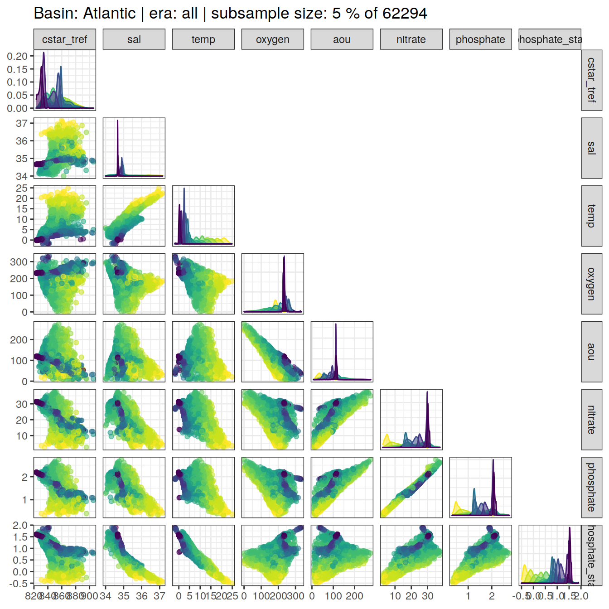
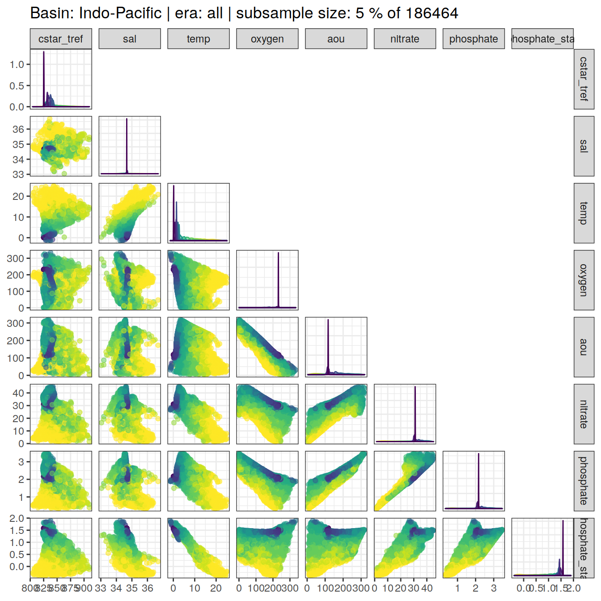
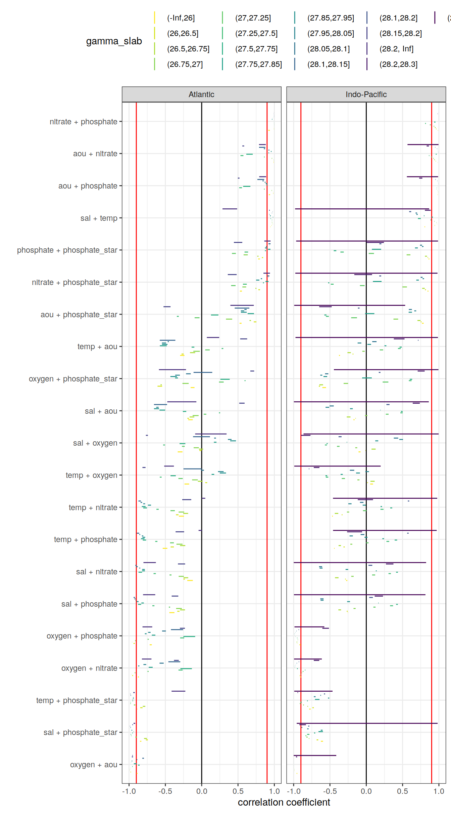
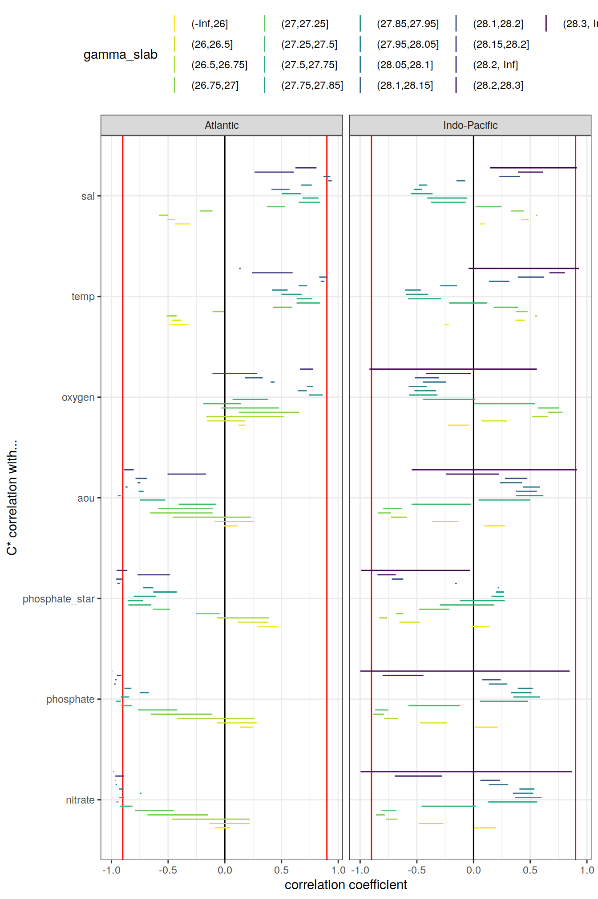

Last updated: 2021-07-15
Checks: 7 0
Knit directory: emlr_mod_v_XXX/
This reproducible R Markdown analysis was created with workflowr (version 1.6.2). The Checks tab describes the reproducibility checks that were applied when the results were created. The Past versions tab lists the development history.
Great! Since the R Markdown file has been committed to the Git repository, you know the exact version of the code that produced these results.
Great job! The global environment was empty. Objects defined in the global environment can affect the analysis in your R Markdown file in unknown ways. For reproduciblity it’s best to always run the code in an empty environment.
The command set.seed(20200707) was run prior to running the code in the R Markdown file. Setting a seed ensures that any results that rely on randomness, e.g. subsampling or permutations, are reproducible.
Great job! Recording the operating system, R version, and package versions is critical for reproducibility.
Nice! There were no cached chunks for this analysis, so you can be confident that you successfully produced the results during this run.
Great job! Using relative paths to the files within your workflowr project makes it easier to run your code on other machines.
Great! You are using Git for version control. Tracking code development and connecting the code version to the results is critical for reproducibility.
The results in this page were generated with repository version 431c254. See the Past versions tab to see a history of the changes made to the R Markdown and HTML files.
Note that you need to be careful to ensure that all relevant files for the analysis have been committed to Git prior to generating the results (you can use wflow_publish or wflow_git_commit). workflowr only checks the R Markdown file, but you know if there are other scripts or data files that it depends on. Below is the status of the Git repository when the results were generated:
Ignored files:
Ignored: .Rhistory
Ignored: .Rproj.user/
Untracked files:
Untracked: docs_GV_2021_2R_mon_standard/
Unstaged changes:
Modified: data/auxillary/params_local.rds
Deleted: docs_GV_2021_2R_ann_standard/.nojekyll
Deleted: docs_GV_2021_2R_ann_standard/analysis_cant_budgets.html
Deleted: docs_GV_2021_2R_ann_standard/analysis_global_section.html
Deleted: docs_GV_2021_2R_ann_standard/analysis_inventory_maps.html
Deleted: docs_GV_2021_2R_ann_standard/analysis_isoneutral_slab_distribution.html
Deleted: docs_GV_2021_2R_ann_standard/analysis_others.html
Deleted: docs_GV_2021_2R_ann_standard/analysis_zonal_mean_sections.html
Deleted: docs_GV_2021_2R_ann_standard/config_dependencies.html
Deleted: docs_GV_2021_2R_ann_standard/config_parameterization_local.html
Deleted: docs_GV_2021_2R_ann_standard/eMLR_GLODAPv2_2020_subsetting.html
Deleted: docs_GV_2021_2R_ann_standard/eMLR_assumption_testing.html
Deleted: docs_GV_2021_2R_ann_standard/eMLR_data_preparation.html
Deleted: docs_GV_2021_2R_ann_standard/eMLR_model_fitting.html
Deleted: docs_GV_2021_2R_ann_standard/figure/analysis_global_section.Rmd/cant_all_global_section-1.png
Deleted: docs_GV_2021_2R_ann_standard/figure/analysis_global_section.Rmd/cant_all_global_section-2.png
Deleted: docs_GV_2021_2R_ann_standard/figure/analysis_global_section.Rmd/cant_all_global_section-3.png
Deleted: docs_GV_2021_2R_ann_standard/figure/analysis_global_section.Rmd/cant_all_global_section-4.png
Deleted: docs_GV_2021_2R_ann_standard/figure/analysis_global_section.Rmd/cant_all_global_section-5.png
Deleted: docs_GV_2021_2R_ann_standard/figure/analysis_global_section.Rmd/cant_all_global_section-6.png
Deleted: docs_GV_2021_2R_ann_standard/figure/analysis_global_section.Rmd/cant_model_quality_check-1.png
Deleted: docs_GV_2021_2R_ann_standard/figure/analysis_global_section.Rmd/cant_pos_global_section-1.png
Deleted: docs_GV_2021_2R_ann_standard/figure/analysis_global_section.Rmd/cant_pos_global_section-2.png
Deleted: docs_GV_2021_2R_ann_standard/figure/analysis_global_section.Rmd/cant_pos_global_section-3.png
Deleted: docs_GV_2021_2R_ann_standard/figure/analysis_global_section.Rmd/cant_pos_global_section-4.png
Deleted: docs_GV_2021_2R_ann_standard/figure/analysis_global_section.Rmd/cant_pos_global_section-5.png
Deleted: docs_GV_2021_2R_ann_standard/figure/analysis_global_section.Rmd/cant_pos_global_section-6.png
Deleted: docs_GV_2021_2R_ann_standard/figure/analysis_global_section.Rmd/cant_pos_model_quality_check-1.png
Deleted: docs_GV_2021_2R_ann_standard/figure/analysis_inventory_maps.Rmd/cant_inventory_map-1.png
Deleted: docs_GV_2021_2R_ann_standard/figure/analysis_inventory_maps.Rmd/cant_inventory_map-2.png
Deleted: docs_GV_2021_2R_ann_standard/figure/analysis_inventory_maps.Rmd/cant_inventory_map-3.png
Deleted: docs_GV_2021_2R_ann_standard/figure/analysis_inventory_maps.Rmd/cant_inventory_map-4.png
Deleted: docs_GV_2021_2R_ann_standard/figure/analysis_inventory_maps.Rmd/cant_inventory_map-5.png
Deleted: docs_GV_2021_2R_ann_standard/figure/analysis_inventory_maps.Rmd/cant_inventory_map-6.png
Deleted: docs_GV_2021_2R_ann_standard/figure/analysis_inventory_maps.Rmd/cant_pos_inventory_map-1.png
Deleted: docs_GV_2021_2R_ann_standard/figure/analysis_inventory_maps.Rmd/cant_pos_inventory_map-2.png
Deleted: docs_GV_2021_2R_ann_standard/figure/analysis_inventory_maps.Rmd/cant_pos_inventory_map-3.png
Deleted: docs_GV_2021_2R_ann_standard/figure/analysis_inventory_maps.Rmd/cant_pos_inventory_map-4.png
Deleted: docs_GV_2021_2R_ann_standard/figure/analysis_inventory_maps.Rmd/cant_pos_inventory_map-5.png
Deleted: docs_GV_2021_2R_ann_standard/figure/analysis_inventory_maps.Rmd/cant_pos_inventory_map-6.png
Deleted: docs_GV_2021_2R_ann_standard/figure/analysis_isoneutral_slab_distribution.Rmd/cant_all_gamma_slab_maps-1.png
Deleted: docs_GV_2021_2R_ann_standard/figure/analysis_isoneutral_slab_distribution.Rmd/cant_all_gamma_slab_maps-10.png
Deleted: docs_GV_2021_2R_ann_standard/figure/analysis_isoneutral_slab_distribution.Rmd/cant_all_gamma_slab_maps-100.png
Deleted: docs_GV_2021_2R_ann_standard/figure/analysis_isoneutral_slab_distribution.Rmd/cant_all_gamma_slab_maps-101.png
Deleted: docs_GV_2021_2R_ann_standard/figure/analysis_isoneutral_slab_distribution.Rmd/cant_all_gamma_slab_maps-102.png
Deleted: docs_GV_2021_2R_ann_standard/figure/analysis_isoneutral_slab_distribution.Rmd/cant_all_gamma_slab_maps-11.png
Deleted: docs_GV_2021_2R_ann_standard/figure/analysis_isoneutral_slab_distribution.Rmd/cant_all_gamma_slab_maps-12.png
Deleted: docs_GV_2021_2R_ann_standard/figure/analysis_isoneutral_slab_distribution.Rmd/cant_all_gamma_slab_maps-13.png
Deleted: docs_GV_2021_2R_ann_standard/figure/analysis_isoneutral_slab_distribution.Rmd/cant_all_gamma_slab_maps-14.png
Deleted: docs_GV_2021_2R_ann_standard/figure/analysis_isoneutral_slab_distribution.Rmd/cant_all_gamma_slab_maps-15.png
Deleted: docs_GV_2021_2R_ann_standard/figure/analysis_isoneutral_slab_distribution.Rmd/cant_all_gamma_slab_maps-16.png
Deleted: docs_GV_2021_2R_ann_standard/figure/analysis_isoneutral_slab_distribution.Rmd/cant_all_gamma_slab_maps-17.png
Deleted: docs_GV_2021_2R_ann_standard/figure/analysis_isoneutral_slab_distribution.Rmd/cant_all_gamma_slab_maps-18.png
Deleted: docs_GV_2021_2R_ann_standard/figure/analysis_isoneutral_slab_distribution.Rmd/cant_all_gamma_slab_maps-19.png
Deleted: docs_GV_2021_2R_ann_standard/figure/analysis_isoneutral_slab_distribution.Rmd/cant_all_gamma_slab_maps-2.png
Deleted: docs_GV_2021_2R_ann_standard/figure/analysis_isoneutral_slab_distribution.Rmd/cant_all_gamma_slab_maps-20.png
Deleted: docs_GV_2021_2R_ann_standard/figure/analysis_isoneutral_slab_distribution.Rmd/cant_all_gamma_slab_maps-21.png
Deleted: docs_GV_2021_2R_ann_standard/figure/analysis_isoneutral_slab_distribution.Rmd/cant_all_gamma_slab_maps-22.png
Deleted: docs_GV_2021_2R_ann_standard/figure/analysis_isoneutral_slab_distribution.Rmd/cant_all_gamma_slab_maps-23.png
Deleted: docs_GV_2021_2R_ann_standard/figure/analysis_isoneutral_slab_distribution.Rmd/cant_all_gamma_slab_maps-24.png
Deleted: docs_GV_2021_2R_ann_standard/figure/analysis_isoneutral_slab_distribution.Rmd/cant_all_gamma_slab_maps-25.png
Deleted: docs_GV_2021_2R_ann_standard/figure/analysis_isoneutral_slab_distribution.Rmd/cant_all_gamma_slab_maps-26.png
Deleted: docs_GV_2021_2R_ann_standard/figure/analysis_isoneutral_slab_distribution.Rmd/cant_all_gamma_slab_maps-27.png
Deleted: docs_GV_2021_2R_ann_standard/figure/analysis_isoneutral_slab_distribution.Rmd/cant_all_gamma_slab_maps-28.png
Deleted: docs_GV_2021_2R_ann_standard/figure/analysis_isoneutral_slab_distribution.Rmd/cant_all_gamma_slab_maps-29.png
Deleted: docs_GV_2021_2R_ann_standard/figure/analysis_isoneutral_slab_distribution.Rmd/cant_all_gamma_slab_maps-3.png
Deleted: docs_GV_2021_2R_ann_standard/figure/analysis_isoneutral_slab_distribution.Rmd/cant_all_gamma_slab_maps-30.png
Deleted: docs_GV_2021_2R_ann_standard/figure/analysis_isoneutral_slab_distribution.Rmd/cant_all_gamma_slab_maps-31.png
Deleted: docs_GV_2021_2R_ann_standard/figure/analysis_isoneutral_slab_distribution.Rmd/cant_all_gamma_slab_maps-32.png
Deleted: docs_GV_2021_2R_ann_standard/figure/analysis_isoneutral_slab_distribution.Rmd/cant_all_gamma_slab_maps-33.png
Deleted: docs_GV_2021_2R_ann_standard/figure/analysis_isoneutral_slab_distribution.Rmd/cant_all_gamma_slab_maps-34.png
Deleted: docs_GV_2021_2R_ann_standard/figure/analysis_isoneutral_slab_distribution.Rmd/cant_all_gamma_slab_maps-35.png
Deleted: docs_GV_2021_2R_ann_standard/figure/analysis_isoneutral_slab_distribution.Rmd/cant_all_gamma_slab_maps-36.png
Deleted: docs_GV_2021_2R_ann_standard/figure/analysis_isoneutral_slab_distribution.Rmd/cant_all_gamma_slab_maps-37.png
Deleted: docs_GV_2021_2R_ann_standard/figure/analysis_isoneutral_slab_distribution.Rmd/cant_all_gamma_slab_maps-38.png
Deleted: docs_GV_2021_2R_ann_standard/figure/analysis_isoneutral_slab_distribution.Rmd/cant_all_gamma_slab_maps-39.png
Deleted: docs_GV_2021_2R_ann_standard/figure/analysis_isoneutral_slab_distribution.Rmd/cant_all_gamma_slab_maps-4.png
Deleted: docs_GV_2021_2R_ann_standard/figure/analysis_isoneutral_slab_distribution.Rmd/cant_all_gamma_slab_maps-40.png
Deleted: docs_GV_2021_2R_ann_standard/figure/analysis_isoneutral_slab_distribution.Rmd/cant_all_gamma_slab_maps-41.png
Deleted: docs_GV_2021_2R_ann_standard/figure/analysis_isoneutral_slab_distribution.Rmd/cant_all_gamma_slab_maps-42.png
Deleted: docs_GV_2021_2R_ann_standard/figure/analysis_isoneutral_slab_distribution.Rmd/cant_all_gamma_slab_maps-43.png
Deleted: docs_GV_2021_2R_ann_standard/figure/analysis_isoneutral_slab_distribution.Rmd/cant_all_gamma_slab_maps-44.png
Deleted: docs_GV_2021_2R_ann_standard/figure/analysis_isoneutral_slab_distribution.Rmd/cant_all_gamma_slab_maps-45.png
Deleted: docs_GV_2021_2R_ann_standard/figure/analysis_isoneutral_slab_distribution.Rmd/cant_all_gamma_slab_maps-46.png
Deleted: docs_GV_2021_2R_ann_standard/figure/analysis_isoneutral_slab_distribution.Rmd/cant_all_gamma_slab_maps-47.png
Deleted: docs_GV_2021_2R_ann_standard/figure/analysis_isoneutral_slab_distribution.Rmd/cant_all_gamma_slab_maps-48.png
Deleted: docs_GV_2021_2R_ann_standard/figure/analysis_isoneutral_slab_distribution.Rmd/cant_all_gamma_slab_maps-49.png
Deleted: docs_GV_2021_2R_ann_standard/figure/analysis_isoneutral_slab_distribution.Rmd/cant_all_gamma_slab_maps-5.png
Deleted: docs_GV_2021_2R_ann_standard/figure/analysis_isoneutral_slab_distribution.Rmd/cant_all_gamma_slab_maps-50.png
Deleted: docs_GV_2021_2R_ann_standard/figure/analysis_isoneutral_slab_distribution.Rmd/cant_all_gamma_slab_maps-51.png
Deleted: docs_GV_2021_2R_ann_standard/figure/analysis_isoneutral_slab_distribution.Rmd/cant_all_gamma_slab_maps-52.png
Deleted: docs_GV_2021_2R_ann_standard/figure/analysis_isoneutral_slab_distribution.Rmd/cant_all_gamma_slab_maps-53.png
Deleted: docs_GV_2021_2R_ann_standard/figure/analysis_isoneutral_slab_distribution.Rmd/cant_all_gamma_slab_maps-54.png
Deleted: docs_GV_2021_2R_ann_standard/figure/analysis_isoneutral_slab_distribution.Rmd/cant_all_gamma_slab_maps-55.png
Deleted: docs_GV_2021_2R_ann_standard/figure/analysis_isoneutral_slab_distribution.Rmd/cant_all_gamma_slab_maps-56.png
Deleted: docs_GV_2021_2R_ann_standard/figure/analysis_isoneutral_slab_distribution.Rmd/cant_all_gamma_slab_maps-57.png
Deleted: docs_GV_2021_2R_ann_standard/figure/analysis_isoneutral_slab_distribution.Rmd/cant_all_gamma_slab_maps-58.png
Deleted: docs_GV_2021_2R_ann_standard/figure/analysis_isoneutral_slab_distribution.Rmd/cant_all_gamma_slab_maps-59.png
Deleted: docs_GV_2021_2R_ann_standard/figure/analysis_isoneutral_slab_distribution.Rmd/cant_all_gamma_slab_maps-6.png
Deleted: docs_GV_2021_2R_ann_standard/figure/analysis_isoneutral_slab_distribution.Rmd/cant_all_gamma_slab_maps-60.png
Deleted: docs_GV_2021_2R_ann_standard/figure/analysis_isoneutral_slab_distribution.Rmd/cant_all_gamma_slab_maps-61.png
Deleted: docs_GV_2021_2R_ann_standard/figure/analysis_isoneutral_slab_distribution.Rmd/cant_all_gamma_slab_maps-62.png
Deleted: docs_GV_2021_2R_ann_standard/figure/analysis_isoneutral_slab_distribution.Rmd/cant_all_gamma_slab_maps-63.png
Deleted: docs_GV_2021_2R_ann_standard/figure/analysis_isoneutral_slab_distribution.Rmd/cant_all_gamma_slab_maps-64.png
Deleted: docs_GV_2021_2R_ann_standard/figure/analysis_isoneutral_slab_distribution.Rmd/cant_all_gamma_slab_maps-65.png
Deleted: docs_GV_2021_2R_ann_standard/figure/analysis_isoneutral_slab_distribution.Rmd/cant_all_gamma_slab_maps-66.png
Deleted: docs_GV_2021_2R_ann_standard/figure/analysis_isoneutral_slab_distribution.Rmd/cant_all_gamma_slab_maps-67.png
Deleted: docs_GV_2021_2R_ann_standard/figure/analysis_isoneutral_slab_distribution.Rmd/cant_all_gamma_slab_maps-68.png
Deleted: docs_GV_2021_2R_ann_standard/figure/analysis_isoneutral_slab_distribution.Rmd/cant_all_gamma_slab_maps-69.png
Deleted: docs_GV_2021_2R_ann_standard/figure/analysis_isoneutral_slab_distribution.Rmd/cant_all_gamma_slab_maps-7.png
Deleted: docs_GV_2021_2R_ann_standard/figure/analysis_isoneutral_slab_distribution.Rmd/cant_all_gamma_slab_maps-70.png
Deleted: docs_GV_2021_2R_ann_standard/figure/analysis_isoneutral_slab_distribution.Rmd/cant_all_gamma_slab_maps-71.png
Deleted: docs_GV_2021_2R_ann_standard/figure/analysis_isoneutral_slab_distribution.Rmd/cant_all_gamma_slab_maps-72.png
Deleted: docs_GV_2021_2R_ann_standard/figure/analysis_isoneutral_slab_distribution.Rmd/cant_all_gamma_slab_maps-73.png
Deleted: docs_GV_2021_2R_ann_standard/figure/analysis_isoneutral_slab_distribution.Rmd/cant_all_gamma_slab_maps-74.png
Deleted: docs_GV_2021_2R_ann_standard/figure/analysis_isoneutral_slab_distribution.Rmd/cant_all_gamma_slab_maps-75.png
Deleted: docs_GV_2021_2R_ann_standard/figure/analysis_isoneutral_slab_distribution.Rmd/cant_all_gamma_slab_maps-76.png
Deleted: docs_GV_2021_2R_ann_standard/figure/analysis_isoneutral_slab_distribution.Rmd/cant_all_gamma_slab_maps-77.png
Deleted: docs_GV_2021_2R_ann_standard/figure/analysis_isoneutral_slab_distribution.Rmd/cant_all_gamma_slab_maps-78.png
Deleted: docs_GV_2021_2R_ann_standard/figure/analysis_isoneutral_slab_distribution.Rmd/cant_all_gamma_slab_maps-79.png
Deleted: docs_GV_2021_2R_ann_standard/figure/analysis_isoneutral_slab_distribution.Rmd/cant_all_gamma_slab_maps-8.png
Deleted: docs_GV_2021_2R_ann_standard/figure/analysis_isoneutral_slab_distribution.Rmd/cant_all_gamma_slab_maps-80.png
Deleted: docs_GV_2021_2R_ann_standard/figure/analysis_isoneutral_slab_distribution.Rmd/cant_all_gamma_slab_maps-81.png
Deleted: docs_GV_2021_2R_ann_standard/figure/analysis_isoneutral_slab_distribution.Rmd/cant_all_gamma_slab_maps-82.png
Deleted: docs_GV_2021_2R_ann_standard/figure/analysis_isoneutral_slab_distribution.Rmd/cant_all_gamma_slab_maps-83.png
Deleted: docs_GV_2021_2R_ann_standard/figure/analysis_isoneutral_slab_distribution.Rmd/cant_all_gamma_slab_maps-84.png
Deleted: docs_GV_2021_2R_ann_standard/figure/analysis_isoneutral_slab_distribution.Rmd/cant_all_gamma_slab_maps-85.png
Deleted: docs_GV_2021_2R_ann_standard/figure/analysis_isoneutral_slab_distribution.Rmd/cant_all_gamma_slab_maps-86.png
Deleted: docs_GV_2021_2R_ann_standard/figure/analysis_isoneutral_slab_distribution.Rmd/cant_all_gamma_slab_maps-87.png
Deleted: docs_GV_2021_2R_ann_standard/figure/analysis_isoneutral_slab_distribution.Rmd/cant_all_gamma_slab_maps-88.png
Deleted: docs_GV_2021_2R_ann_standard/figure/analysis_isoneutral_slab_distribution.Rmd/cant_all_gamma_slab_maps-89.png
Deleted: docs_GV_2021_2R_ann_standard/figure/analysis_isoneutral_slab_distribution.Rmd/cant_all_gamma_slab_maps-9.png
Deleted: docs_GV_2021_2R_ann_standard/figure/analysis_isoneutral_slab_distribution.Rmd/cant_all_gamma_slab_maps-90.png
Deleted: docs_GV_2021_2R_ann_standard/figure/analysis_isoneutral_slab_distribution.Rmd/cant_all_gamma_slab_maps-91.png
Deleted: docs_GV_2021_2R_ann_standard/figure/analysis_isoneutral_slab_distribution.Rmd/cant_all_gamma_slab_maps-92.png
Deleted: docs_GV_2021_2R_ann_standard/figure/analysis_isoneutral_slab_distribution.Rmd/cant_all_gamma_slab_maps-93.png
Deleted: docs_GV_2021_2R_ann_standard/figure/analysis_isoneutral_slab_distribution.Rmd/cant_all_gamma_slab_maps-94.png
Deleted: docs_GV_2021_2R_ann_standard/figure/analysis_isoneutral_slab_distribution.Rmd/cant_all_gamma_slab_maps-95.png
Deleted: docs_GV_2021_2R_ann_standard/figure/analysis_isoneutral_slab_distribution.Rmd/cant_all_gamma_slab_maps-96.png
Deleted: docs_GV_2021_2R_ann_standard/figure/analysis_isoneutral_slab_distribution.Rmd/cant_all_gamma_slab_maps-97.png
Deleted: docs_GV_2021_2R_ann_standard/figure/analysis_isoneutral_slab_distribution.Rmd/cant_all_gamma_slab_maps-98.png
Deleted: docs_GV_2021_2R_ann_standard/figure/analysis_isoneutral_slab_distribution.Rmd/cant_all_gamma_slab_maps-99.png
Deleted: docs_GV_2021_2R_ann_standard/figure/analysis_isoneutral_slab_distribution.Rmd/cant_pos_gamma_slab_maps-1.png
Deleted: docs_GV_2021_2R_ann_standard/figure/analysis_isoneutral_slab_distribution.Rmd/cant_pos_gamma_slab_maps-10.png
Deleted: docs_GV_2021_2R_ann_standard/figure/analysis_isoneutral_slab_distribution.Rmd/cant_pos_gamma_slab_maps-100.png
Deleted: docs_GV_2021_2R_ann_standard/figure/analysis_isoneutral_slab_distribution.Rmd/cant_pos_gamma_slab_maps-101.png
Deleted: docs_GV_2021_2R_ann_standard/figure/analysis_isoneutral_slab_distribution.Rmd/cant_pos_gamma_slab_maps-102.png
Deleted: docs_GV_2021_2R_ann_standard/figure/analysis_isoneutral_slab_distribution.Rmd/cant_pos_gamma_slab_maps-11.png
Deleted: docs_GV_2021_2R_ann_standard/figure/analysis_isoneutral_slab_distribution.Rmd/cant_pos_gamma_slab_maps-12.png
Deleted: docs_GV_2021_2R_ann_standard/figure/analysis_isoneutral_slab_distribution.Rmd/cant_pos_gamma_slab_maps-13.png
Deleted: docs_GV_2021_2R_ann_standard/figure/analysis_isoneutral_slab_distribution.Rmd/cant_pos_gamma_slab_maps-14.png
Deleted: docs_GV_2021_2R_ann_standard/figure/analysis_isoneutral_slab_distribution.Rmd/cant_pos_gamma_slab_maps-15.png
Deleted: docs_GV_2021_2R_ann_standard/figure/analysis_isoneutral_slab_distribution.Rmd/cant_pos_gamma_slab_maps-16.png
Deleted: docs_GV_2021_2R_ann_standard/figure/analysis_isoneutral_slab_distribution.Rmd/cant_pos_gamma_slab_maps-17.png
Deleted: docs_GV_2021_2R_ann_standard/figure/analysis_isoneutral_slab_distribution.Rmd/cant_pos_gamma_slab_maps-18.png
Deleted: docs_GV_2021_2R_ann_standard/figure/analysis_isoneutral_slab_distribution.Rmd/cant_pos_gamma_slab_maps-19.png
Deleted: docs_GV_2021_2R_ann_standard/figure/analysis_isoneutral_slab_distribution.Rmd/cant_pos_gamma_slab_maps-2.png
Deleted: docs_GV_2021_2R_ann_standard/figure/analysis_isoneutral_slab_distribution.Rmd/cant_pos_gamma_slab_maps-20.png
Deleted: docs_GV_2021_2R_ann_standard/figure/analysis_isoneutral_slab_distribution.Rmd/cant_pos_gamma_slab_maps-21.png
Deleted: docs_GV_2021_2R_ann_standard/figure/analysis_isoneutral_slab_distribution.Rmd/cant_pos_gamma_slab_maps-22.png
Deleted: docs_GV_2021_2R_ann_standard/figure/analysis_isoneutral_slab_distribution.Rmd/cant_pos_gamma_slab_maps-23.png
Deleted: docs_GV_2021_2R_ann_standard/figure/analysis_isoneutral_slab_distribution.Rmd/cant_pos_gamma_slab_maps-24.png
Deleted: docs_GV_2021_2R_ann_standard/figure/analysis_isoneutral_slab_distribution.Rmd/cant_pos_gamma_slab_maps-25.png
Deleted: docs_GV_2021_2R_ann_standard/figure/analysis_isoneutral_slab_distribution.Rmd/cant_pos_gamma_slab_maps-26.png
Deleted: docs_GV_2021_2R_ann_standard/figure/analysis_isoneutral_slab_distribution.Rmd/cant_pos_gamma_slab_maps-27.png
Deleted: docs_GV_2021_2R_ann_standard/figure/analysis_isoneutral_slab_distribution.Rmd/cant_pos_gamma_slab_maps-28.png
Deleted: docs_GV_2021_2R_ann_standard/figure/analysis_isoneutral_slab_distribution.Rmd/cant_pos_gamma_slab_maps-29.png
Deleted: docs_GV_2021_2R_ann_standard/figure/analysis_isoneutral_slab_distribution.Rmd/cant_pos_gamma_slab_maps-3.png
Deleted: docs_GV_2021_2R_ann_standard/figure/analysis_isoneutral_slab_distribution.Rmd/cant_pos_gamma_slab_maps-30.png
Deleted: docs_GV_2021_2R_ann_standard/figure/analysis_isoneutral_slab_distribution.Rmd/cant_pos_gamma_slab_maps-31.png
Deleted: docs_GV_2021_2R_ann_standard/figure/analysis_isoneutral_slab_distribution.Rmd/cant_pos_gamma_slab_maps-32.png
Deleted: docs_GV_2021_2R_ann_standard/figure/analysis_isoneutral_slab_distribution.Rmd/cant_pos_gamma_slab_maps-33.png
Deleted: docs_GV_2021_2R_ann_standard/figure/analysis_isoneutral_slab_distribution.Rmd/cant_pos_gamma_slab_maps-34.png
Deleted: docs_GV_2021_2R_ann_standard/figure/analysis_isoneutral_slab_distribution.Rmd/cant_pos_gamma_slab_maps-35.png
Deleted: docs_GV_2021_2R_ann_standard/figure/analysis_isoneutral_slab_distribution.Rmd/cant_pos_gamma_slab_maps-36.png
Deleted: docs_GV_2021_2R_ann_standard/figure/analysis_isoneutral_slab_distribution.Rmd/cant_pos_gamma_slab_maps-37.png
Deleted: docs_GV_2021_2R_ann_standard/figure/analysis_isoneutral_slab_distribution.Rmd/cant_pos_gamma_slab_maps-38.png
Deleted: docs_GV_2021_2R_ann_standard/figure/analysis_isoneutral_slab_distribution.Rmd/cant_pos_gamma_slab_maps-39.png
Deleted: docs_GV_2021_2R_ann_standard/figure/analysis_isoneutral_slab_distribution.Rmd/cant_pos_gamma_slab_maps-4.png
Deleted: docs_GV_2021_2R_ann_standard/figure/analysis_isoneutral_slab_distribution.Rmd/cant_pos_gamma_slab_maps-40.png
Deleted: docs_GV_2021_2R_ann_standard/figure/analysis_isoneutral_slab_distribution.Rmd/cant_pos_gamma_slab_maps-41.png
Deleted: docs_GV_2021_2R_ann_standard/figure/analysis_isoneutral_slab_distribution.Rmd/cant_pos_gamma_slab_maps-42.png
Deleted: docs_GV_2021_2R_ann_standard/figure/analysis_isoneutral_slab_distribution.Rmd/cant_pos_gamma_slab_maps-43.png
Deleted: docs_GV_2021_2R_ann_standard/figure/analysis_isoneutral_slab_distribution.Rmd/cant_pos_gamma_slab_maps-44.png
Deleted: docs_GV_2021_2R_ann_standard/figure/analysis_isoneutral_slab_distribution.Rmd/cant_pos_gamma_slab_maps-45.png
Deleted: docs_GV_2021_2R_ann_standard/figure/analysis_isoneutral_slab_distribution.Rmd/cant_pos_gamma_slab_maps-46.png
Deleted: docs_GV_2021_2R_ann_standard/figure/analysis_isoneutral_slab_distribution.Rmd/cant_pos_gamma_slab_maps-47.png
Deleted: docs_GV_2021_2R_ann_standard/figure/analysis_isoneutral_slab_distribution.Rmd/cant_pos_gamma_slab_maps-48.png
Deleted: docs_GV_2021_2R_ann_standard/figure/analysis_isoneutral_slab_distribution.Rmd/cant_pos_gamma_slab_maps-49.png
Deleted: docs_GV_2021_2R_ann_standard/figure/analysis_isoneutral_slab_distribution.Rmd/cant_pos_gamma_slab_maps-5.png
Deleted: docs_GV_2021_2R_ann_standard/figure/analysis_isoneutral_slab_distribution.Rmd/cant_pos_gamma_slab_maps-50.png
Deleted: docs_GV_2021_2R_ann_standard/figure/analysis_isoneutral_slab_distribution.Rmd/cant_pos_gamma_slab_maps-51.png
Deleted: docs_GV_2021_2R_ann_standard/figure/analysis_isoneutral_slab_distribution.Rmd/cant_pos_gamma_slab_maps-52.png
Deleted: docs_GV_2021_2R_ann_standard/figure/analysis_isoneutral_slab_distribution.Rmd/cant_pos_gamma_slab_maps-53.png
Deleted: docs_GV_2021_2R_ann_standard/figure/analysis_isoneutral_slab_distribution.Rmd/cant_pos_gamma_slab_maps-54.png
Deleted: docs_GV_2021_2R_ann_standard/figure/analysis_isoneutral_slab_distribution.Rmd/cant_pos_gamma_slab_maps-55.png
Deleted: docs_GV_2021_2R_ann_standard/figure/analysis_isoneutral_slab_distribution.Rmd/cant_pos_gamma_slab_maps-56.png
Deleted: docs_GV_2021_2R_ann_standard/figure/analysis_isoneutral_slab_distribution.Rmd/cant_pos_gamma_slab_maps-57.png
Deleted: docs_GV_2021_2R_ann_standard/figure/analysis_isoneutral_slab_distribution.Rmd/cant_pos_gamma_slab_maps-58.png
Deleted: docs_GV_2021_2R_ann_standard/figure/analysis_isoneutral_slab_distribution.Rmd/cant_pos_gamma_slab_maps-59.png
Deleted: docs_GV_2021_2R_ann_standard/figure/analysis_isoneutral_slab_distribution.Rmd/cant_pos_gamma_slab_maps-6.png
Deleted: docs_GV_2021_2R_ann_standard/figure/analysis_isoneutral_slab_distribution.Rmd/cant_pos_gamma_slab_maps-60.png
Deleted: docs_GV_2021_2R_ann_standard/figure/analysis_isoneutral_slab_distribution.Rmd/cant_pos_gamma_slab_maps-61.png
Deleted: docs_GV_2021_2R_ann_standard/figure/analysis_isoneutral_slab_distribution.Rmd/cant_pos_gamma_slab_maps-62.png
Deleted: docs_GV_2021_2R_ann_standard/figure/analysis_isoneutral_slab_distribution.Rmd/cant_pos_gamma_slab_maps-63.png
Deleted: docs_GV_2021_2R_ann_standard/figure/analysis_isoneutral_slab_distribution.Rmd/cant_pos_gamma_slab_maps-64.png
Deleted: docs_GV_2021_2R_ann_standard/figure/analysis_isoneutral_slab_distribution.Rmd/cant_pos_gamma_slab_maps-65.png
Deleted: docs_GV_2021_2R_ann_standard/figure/analysis_isoneutral_slab_distribution.Rmd/cant_pos_gamma_slab_maps-66.png
Deleted: docs_GV_2021_2R_ann_standard/figure/analysis_isoneutral_slab_distribution.Rmd/cant_pos_gamma_slab_maps-67.png
Deleted: docs_GV_2021_2R_ann_standard/figure/analysis_isoneutral_slab_distribution.Rmd/cant_pos_gamma_slab_maps-68.png
Deleted: docs_GV_2021_2R_ann_standard/figure/analysis_isoneutral_slab_distribution.Rmd/cant_pos_gamma_slab_maps-69.png
Deleted: docs_GV_2021_2R_ann_standard/figure/analysis_isoneutral_slab_distribution.Rmd/cant_pos_gamma_slab_maps-7.png
Deleted: docs_GV_2021_2R_ann_standard/figure/analysis_isoneutral_slab_distribution.Rmd/cant_pos_gamma_slab_maps-70.png
Deleted: docs_GV_2021_2R_ann_standard/figure/analysis_isoneutral_slab_distribution.Rmd/cant_pos_gamma_slab_maps-71.png
Deleted: docs_GV_2021_2R_ann_standard/figure/analysis_isoneutral_slab_distribution.Rmd/cant_pos_gamma_slab_maps-72.png
Deleted: docs_GV_2021_2R_ann_standard/figure/analysis_isoneutral_slab_distribution.Rmd/cant_pos_gamma_slab_maps-73.png
Deleted: docs_GV_2021_2R_ann_standard/figure/analysis_isoneutral_slab_distribution.Rmd/cant_pos_gamma_slab_maps-74.png
Deleted: docs_GV_2021_2R_ann_standard/figure/analysis_isoneutral_slab_distribution.Rmd/cant_pos_gamma_slab_maps-75.png
Deleted: docs_GV_2021_2R_ann_standard/figure/analysis_isoneutral_slab_distribution.Rmd/cant_pos_gamma_slab_maps-76.png
Deleted: docs_GV_2021_2R_ann_standard/figure/analysis_isoneutral_slab_distribution.Rmd/cant_pos_gamma_slab_maps-77.png
Deleted: docs_GV_2021_2R_ann_standard/figure/analysis_isoneutral_slab_distribution.Rmd/cant_pos_gamma_slab_maps-78.png
Deleted: docs_GV_2021_2R_ann_standard/figure/analysis_isoneutral_slab_distribution.Rmd/cant_pos_gamma_slab_maps-79.png
Deleted: docs_GV_2021_2R_ann_standard/figure/analysis_isoneutral_slab_distribution.Rmd/cant_pos_gamma_slab_maps-8.png
Deleted: docs_GV_2021_2R_ann_standard/figure/analysis_isoneutral_slab_distribution.Rmd/cant_pos_gamma_slab_maps-80.png
Deleted: docs_GV_2021_2R_ann_standard/figure/analysis_isoneutral_slab_distribution.Rmd/cant_pos_gamma_slab_maps-81.png
Deleted: docs_GV_2021_2R_ann_standard/figure/analysis_isoneutral_slab_distribution.Rmd/cant_pos_gamma_slab_maps-82.png
Deleted: docs_GV_2021_2R_ann_standard/figure/analysis_isoneutral_slab_distribution.Rmd/cant_pos_gamma_slab_maps-83.png
Deleted: docs_GV_2021_2R_ann_standard/figure/analysis_isoneutral_slab_distribution.Rmd/cant_pos_gamma_slab_maps-84.png
Deleted: docs_GV_2021_2R_ann_standard/figure/analysis_isoneutral_slab_distribution.Rmd/cant_pos_gamma_slab_maps-85.png
Deleted: docs_GV_2021_2R_ann_standard/figure/analysis_isoneutral_slab_distribution.Rmd/cant_pos_gamma_slab_maps-86.png
Deleted: docs_GV_2021_2R_ann_standard/figure/analysis_isoneutral_slab_distribution.Rmd/cant_pos_gamma_slab_maps-87.png
Deleted: docs_GV_2021_2R_ann_standard/figure/analysis_isoneutral_slab_distribution.Rmd/cant_pos_gamma_slab_maps-88.png
Deleted: docs_GV_2021_2R_ann_standard/figure/analysis_isoneutral_slab_distribution.Rmd/cant_pos_gamma_slab_maps-89.png
Deleted: docs_GV_2021_2R_ann_standard/figure/analysis_isoneutral_slab_distribution.Rmd/cant_pos_gamma_slab_maps-9.png
Deleted: docs_GV_2021_2R_ann_standard/figure/analysis_isoneutral_slab_distribution.Rmd/cant_pos_gamma_slab_maps-90.png
Deleted: docs_GV_2021_2R_ann_standard/figure/analysis_isoneutral_slab_distribution.Rmd/cant_pos_gamma_slab_maps-91.png
Deleted: docs_GV_2021_2R_ann_standard/figure/analysis_isoneutral_slab_distribution.Rmd/cant_pos_gamma_slab_maps-92.png
Deleted: docs_GV_2021_2R_ann_standard/figure/analysis_isoneutral_slab_distribution.Rmd/cant_pos_gamma_slab_maps-93.png
Deleted: docs_GV_2021_2R_ann_standard/figure/analysis_isoneutral_slab_distribution.Rmd/cant_pos_gamma_slab_maps-94.png
Deleted: docs_GV_2021_2R_ann_standard/figure/analysis_isoneutral_slab_distribution.Rmd/cant_pos_gamma_slab_maps-95.png
Deleted: docs_GV_2021_2R_ann_standard/figure/analysis_isoneutral_slab_distribution.Rmd/cant_pos_gamma_slab_maps-96.png
Deleted: docs_GV_2021_2R_ann_standard/figure/analysis_isoneutral_slab_distribution.Rmd/cant_pos_gamma_slab_maps-97.png
Deleted: docs_GV_2021_2R_ann_standard/figure/analysis_isoneutral_slab_distribution.Rmd/cant_pos_gamma_slab_maps-98.png
Deleted: docs_GV_2021_2R_ann_standard/figure/analysis_isoneutral_slab_distribution.Rmd/cant_pos_gamma_slab_maps-99.png
Deleted: docs_GV_2021_2R_ann_standard/figure/analysis_others.Rmd/cant_section_predictor_contribution-1.png
Deleted: docs_GV_2021_2R_ann_standard/figure/analysis_others.Rmd/cant_section_predictor_contribution-2.png
Deleted: docs_GV_2021_2R_ann_standard/figure/analysis_others.Rmd/cant_section_predictor_contribution-3.png
Deleted: docs_GV_2021_2R_ann_standard/figure/analysis_others.Rmd/cant_section_predictor_contribution-4.png
Deleted: docs_GV_2021_2R_ann_standard/figure/analysis_others.Rmd/cant_section_predictor_contribution-5.png
Deleted: docs_GV_2021_2R_ann_standard/figure/analysis_others.Rmd/cant_section_predictor_contribution-6.png
Deleted: docs_GV_2021_2R_ann_standard/figure/analysis_others.Rmd/cant_section_predictor_contribution-7.png
Deleted: docs_GV_2021_2R_ann_standard/figure/analysis_others.Rmd/cant_section_predictor_contribution-8.png
Deleted: docs_GV_2021_2R_ann_standard/figure/analysis_others.Rmd/cant_sections_sd_cant-1.png
Deleted: docs_GV_2021_2R_ann_standard/figure/analysis_others.Rmd/cant_sections_sd_cant-2.png
Deleted: docs_GV_2021_2R_ann_standard/figure/analysis_others.Rmd/cant_sections_sd_cant-3.png
Deleted: docs_GV_2021_2R_ann_standard/figure/analysis_others.Rmd/cant_sections_sd_cant-4.png
Deleted: docs_GV_2021_2R_ann_standard/figure/analysis_others.Rmd/cant_sections_sd_cant-5.png
Deleted: docs_GV_2021_2R_ann_standard/figure/analysis_others.Rmd/cant_sections_sd_cant-6.png
Deleted: docs_GV_2021_2R_ann_standard/figure/analysis_others.Rmd/cant_sections_sd_models-1.png
Deleted: docs_GV_2021_2R_ann_standard/figure/analysis_others.Rmd/cant_sections_sd_models-2.png
Deleted: docs_GV_2021_2R_ann_standard/figure/analysis_others.Rmd/cant_sections_sd_models-3.png
Deleted: docs_GV_2021_2R_ann_standard/figure/analysis_others.Rmd/cant_sections_sd_models-4.png
Deleted: docs_GV_2021_2R_ann_standard/figure/analysis_others.Rmd/cant_sections_sd_models-5.png
Deleted: docs_GV_2021_2R_ann_standard/figure/analysis_others.Rmd/cant_sections_sd_models-6.png
Deleted: docs_GV_2021_2R_ann_standard/figure/analysis_others.Rmd/cant_vs_sd_by_basin_era-1.png
Deleted: docs_GV_2021_2R_ann_standard/figure/analysis_others.Rmd/cant_vs_sd_by_basin_era_zonal-1.png
Deleted: docs_GV_2021_2R_ann_standard/figure/analysis_others.Rmd/cant_vs_sd_by_basin_gamma-1.png
Deleted: docs_GV_2021_2R_ann_standard/figure/analysis_others.Rmd/cant_vs_sd_by_basin_gamma_zonal-1.png
Deleted: docs_GV_2021_2R_ann_standard/figure/analysis_others.Rmd/gamma_maps-1.png
Deleted: docs_GV_2021_2R_ann_standard/figure/analysis_others.Rmd/target_zonal_mean_era-1.png
Deleted: docs_GV_2021_2R_ann_standard/figure/analysis_others.Rmd/target_zonal_mean_era-2.png
Deleted: docs_GV_2021_2R_ann_standard/figure/analysis_others.Rmd/target_zonal_mean_era-3.png
Deleted: docs_GV_2021_2R_ann_standard/figure/analysis_zonal_mean_sections.Rmd/cant_pos_zonal_mean_section-1.png
Deleted: docs_GV_2021_2R_ann_standard/figure/analysis_zonal_mean_sections.Rmd/cant_pos_zonal_mean_section-10.png
Deleted: docs_GV_2021_2R_ann_standard/figure/analysis_zonal_mean_sections.Rmd/cant_pos_zonal_mean_section-11.png
Deleted: docs_GV_2021_2R_ann_standard/figure/analysis_zonal_mean_sections.Rmd/cant_pos_zonal_mean_section-12.png
Deleted: docs_GV_2021_2R_ann_standard/figure/analysis_zonal_mean_sections.Rmd/cant_pos_zonal_mean_section-13.png
Deleted: docs_GV_2021_2R_ann_standard/figure/analysis_zonal_mean_sections.Rmd/cant_pos_zonal_mean_section-14.png
Deleted: docs_GV_2021_2R_ann_standard/figure/analysis_zonal_mean_sections.Rmd/cant_pos_zonal_mean_section-15.png
Deleted: docs_GV_2021_2R_ann_standard/figure/analysis_zonal_mean_sections.Rmd/cant_pos_zonal_mean_section-16.png
Deleted: docs_GV_2021_2R_ann_standard/figure/analysis_zonal_mean_sections.Rmd/cant_pos_zonal_mean_section-17.png
Deleted: docs_GV_2021_2R_ann_standard/figure/analysis_zonal_mean_sections.Rmd/cant_pos_zonal_mean_section-18.png
Deleted: docs_GV_2021_2R_ann_standard/figure/analysis_zonal_mean_sections.Rmd/cant_pos_zonal_mean_section-2.png
Deleted: docs_GV_2021_2R_ann_standard/figure/analysis_zonal_mean_sections.Rmd/cant_pos_zonal_mean_section-3.png
Deleted: docs_GV_2021_2R_ann_standard/figure/analysis_zonal_mean_sections.Rmd/cant_pos_zonal_mean_section-4.png
Deleted: docs_GV_2021_2R_ann_standard/figure/analysis_zonal_mean_sections.Rmd/cant_pos_zonal_mean_section-5.png
Deleted: docs_GV_2021_2R_ann_standard/figure/analysis_zonal_mean_sections.Rmd/cant_pos_zonal_mean_section-6.png
Deleted: docs_GV_2021_2R_ann_standard/figure/analysis_zonal_mean_sections.Rmd/cant_pos_zonal_mean_section-7.png
Deleted: docs_GV_2021_2R_ann_standard/figure/analysis_zonal_mean_sections.Rmd/cant_pos_zonal_mean_section-8.png
Deleted: docs_GV_2021_2R_ann_standard/figure/analysis_zonal_mean_sections.Rmd/cant_pos_zonal_mean_section-9.png
Deleted: docs_GV_2021_2R_ann_standard/figure/analysis_zonal_mean_sections.Rmd/cant_zonal_mean_section-1.png
Deleted: docs_GV_2021_2R_ann_standard/figure/analysis_zonal_mean_sections.Rmd/cant_zonal_mean_section-10.png
Deleted: docs_GV_2021_2R_ann_standard/figure/analysis_zonal_mean_sections.Rmd/cant_zonal_mean_section-11.png
Deleted: docs_GV_2021_2R_ann_standard/figure/analysis_zonal_mean_sections.Rmd/cant_zonal_mean_section-12.png
Deleted: docs_GV_2021_2R_ann_standard/figure/analysis_zonal_mean_sections.Rmd/cant_zonal_mean_section-13.png
Deleted: docs_GV_2021_2R_ann_standard/figure/analysis_zonal_mean_sections.Rmd/cant_zonal_mean_section-14.png
Deleted: docs_GV_2021_2R_ann_standard/figure/analysis_zonal_mean_sections.Rmd/cant_zonal_mean_section-15.png
Deleted: docs_GV_2021_2R_ann_standard/figure/analysis_zonal_mean_sections.Rmd/cant_zonal_mean_section-16.png
Deleted: docs_GV_2021_2R_ann_standard/figure/analysis_zonal_mean_sections.Rmd/cant_zonal_mean_section-17.png
Deleted: docs_GV_2021_2R_ann_standard/figure/analysis_zonal_mean_sections.Rmd/cant_zonal_mean_section-18.png
Deleted: docs_GV_2021_2R_ann_standard/figure/analysis_zonal_mean_sections.Rmd/cant_zonal_mean_section-2.png
Deleted: docs_GV_2021_2R_ann_standard/figure/analysis_zonal_mean_sections.Rmd/cant_zonal_mean_section-3.png
Deleted: docs_GV_2021_2R_ann_standard/figure/analysis_zonal_mean_sections.Rmd/cant_zonal_mean_section-4.png
Deleted: docs_GV_2021_2R_ann_standard/figure/analysis_zonal_mean_sections.Rmd/cant_zonal_mean_section-5.png
Deleted: docs_GV_2021_2R_ann_standard/figure/analysis_zonal_mean_sections.Rmd/cant_zonal_mean_section-6.png
Deleted: docs_GV_2021_2R_ann_standard/figure/analysis_zonal_mean_sections.Rmd/cant_zonal_mean_section-7.png
Deleted: docs_GV_2021_2R_ann_standard/figure/analysis_zonal_mean_sections.Rmd/cant_zonal_mean_section-8.png
Deleted: docs_GV_2021_2R_ann_standard/figure/analysis_zonal_mean_sections.Rmd/cant_zonal_mean_section-9.png
Deleted: docs_GV_2021_2R_ann_standard/figure/eMLR_GLODAPv2_2020_subsetting.Rmd/GLODAP-based_subsetting_data_cleaning_stats-1.png
Deleted: docs_GV_2021_2R_ann_standard/figure/eMLR_GLODAPv2_2020_subsetting.Rmd/GLODAP_Atl_cruises_2013_2014_map-1.png
Deleted: docs_GV_2021_2R_ann_standard/figure/eMLR_GLODAPv2_2020_subsetting.Rmd/WOA18_basin_mask_GLODAP-based_subsetting_model_data_map-1.png
Deleted: docs_GV_2021_2R_ann_standard/figure/eMLR_GLODAPv2_2020_subsetting.Rmd/coverage_histogram_temporal-1.png
Deleted: docs_GV_2021_2R_ann_standard/figure/eMLR_GLODAPv2_2020_subsetting.Rmd/coverage_histogram_temporal-2.png
Deleted: docs_GV_2021_2R_ann_standard/figure/eMLR_GLODAPv2_2020_subsetting.Rmd/coverage_histogram_zonal-1.png
Deleted: docs_GV_2021_2R_ann_standard/figure/eMLR_GLODAPv2_2020_subsetting.Rmd/coverage_histogram_zonal-2.png
Deleted: docs_GV_2021_2R_ann_standard/figure/eMLR_GLODAPv2_2020_subsetting.Rmd/coverage_hovmoeller-1.png
Deleted: docs_GV_2021_2R_ann_standard/figure/eMLR_GLODAPv2_2020_subsetting.Rmd/coverage_hovmoeller-2.png
Deleted: docs_GV_2021_2R_ann_standard/figure/eMLR_GLODAPv2_2020_subsetting.Rmd/coverage_maps_era_clean-1.png
Deleted: docs_GV_2021_2R_ann_standard/figure/eMLR_GLODAPv2_2020_subsetting.Rmd/coverage_maps_era_subsetting_era_cleaning_level-1.png
Deleted: docs_GV_2021_2R_ann_standard/figure/eMLR_GLODAPv2_2020_subsetting.Rmd/talk_f_subset-1.png
Deleted: docs_GV_2021_2R_ann_standard/figure/eMLR_GLODAPv2_2020_subsetting.Rmd/talk_na_subset-1.png
Deleted: docs_GV_2021_2R_ann_standard/figure/eMLR_GLODAPv2_2020_subsetting.Rmd/talk_qc_subset-1.png
Deleted: docs_GV_2021_2R_ann_standard/figure/eMLR_GLODAPv2_2020_subsetting.Rmd/tco2_f_subset-1.png
Deleted: docs_GV_2021_2R_ann_standard/figure/eMLR_GLODAPv2_2020_subsetting.Rmd/tco2_qc_subset-1.png
Deleted: docs_GV_2021_2R_ann_standard/figure/eMLR_assumption_testing.Rmd/correlation_predictor_pairs-1.png
Deleted: docs_GV_2021_2R_ann_standard/figure/eMLR_assumption_testing.Rmd/correlation_predictors-1.png
Deleted: docs_GV_2021_2R_ann_standard/figure/eMLR_assumption_testing.Rmd/predictor_correlation_per_basin-1.png
Deleted: docs_GV_2021_2R_ann_standard/figure/eMLR_assumption_testing.Rmd/predictor_correlation_per_basin-2.png
Deleted: docs_GV_2021_2R_ann_standard/figure/eMLR_data_preparation.Rmd/cant_interpolation_to_observations-1.png
Deleted: docs_GV_2021_2R_ann_standard/figure/eMLR_data_preparation.Rmd/cant_surface_maps-1.png
Deleted: docs_GV_2021_2R_ann_standard/figure/eMLR_data_preparation.Rmd/cstar_reference_year_adjustment_histogram-1.png
Deleted: docs_GV_2021_2R_ann_standard/figure/eMLR_data_preparation.Rmd/cstar_reference_year_adjustment_vs_time_cant-1.png
Deleted: docs_GV_2021_2R_ann_standard/figure/eMLR_data_preparation.Rmd/cstar_reference_year_adjustment_vs_time_counts-1.png
Deleted: docs_GV_2021_2R_ann_standard/figure/eMLR_data_preparation.Rmd/histogram_predictor-1.png
Deleted: docs_GV_2021_2R_ann_standard/figure/eMLR_data_preparation.Rmd/merge_cstar_cant-1.png
Deleted: docs_GV_2021_2R_ann_standard/figure/eMLR_data_preparation.Rmd/meridional_sections-1.png
Deleted: docs_GV_2021_2R_ann_standard/figure/eMLR_data_preparation.Rmd/meridional_sections-2.png
Deleted: docs_GV_2021_2R_ann_standard/figure/eMLR_data_preparation.Rmd/meridional_sections-3.png
Deleted: docs_GV_2021_2R_ann_standard/figure/eMLR_data_preparation.Rmd/meridional_sections-4.png
Deleted: docs_GV_2021_2R_ann_standard/figure/eMLR_data_preparation.Rmd/meridional_sections-5.png
Deleted: docs_GV_2021_2R_ann_standard/figure/eMLR_data_preparation.Rmd/meridional_sections-6.png
Deleted: docs_GV_2021_2R_ann_standard/figure/eMLR_data_preparation.Rmd/meridional_sections-7.png
Deleted: docs_GV_2021_2R_ann_standard/figure/eMLR_data_preparation.Rmd/meridional_sections_isoneutral_slabs-1.png
Deleted: docs_GV_2021_2R_ann_standard/figure/eMLR_data_preparation.Rmd/obs_gamma_slab-1.png
Deleted: docs_GV_2021_2R_ann_standard/figure/eMLR_data_preparation.Rmd/obs_gamma_slab-2.png
Deleted: docs_GV_2021_2R_ann_standard/figure/eMLR_model_fitting.Rmd/aic_vs_rmse_all_models-1.png
Deleted: docs_GV_2021_2R_ann_standard/figure/eMLR_model_fitting.Rmd/aic_vs_rmse_selected_models-1.png
Deleted: docs_GV_2021_2R_ann_standard/figure/eMLR_model_fitting.Rmd/rmse_correlation_across_eras_all_models-1.png
Deleted: docs_GV_2021_2R_ann_standard/figure/eMLR_model_fitting.Rmd/rmse_correlation_across_eras_best_models-1.png
Deleted: docs_GV_2021_2R_ann_standard/figure/mapping_cant.Rmd/cant_deep_climatology_map-1.png
Deleted: docs_GV_2021_2R_ann_standard/figure/mapping_cant.Rmd/cant_deep_climatology_map-2.png
Deleted: docs_GV_2021_2R_ann_standard/figure/mapping_cant.Rmd/cant_deep_climatology_sections-1.png
Deleted: docs_GV_2021_2R_ann_standard/figure/mapping_cant.Rmd/cant_deep_climatology_sections-2.png
Deleted: docs_GV_2021_2R_ann_standard/figure/mapping_cant.Rmd/cant_inventories-1.png
Deleted: docs_GV_2021_2R_ann_standard/figure/mapping_cant.Rmd/cant_surface_climatology_map-1.png
Deleted: docs_GV_2021_2R_ann_standard/figure/mapping_cant.Rmd/cant_surface_climatology_map-2.png
Deleted: docs_GV_2021_2R_ann_standard/figure/mapping_cant.Rmd/cant_surface_climatology_sections-1.png
Deleted: docs_GV_2021_2R_ann_standard/figure/mapping_cant.Rmd/cant_surface_climatology_sections-2.png
Deleted: docs_GV_2021_2R_ann_standard/figure/mapping_cant.Rmd/pCO2_climatology_map-1.png
Deleted: docs_GV_2021_2R_ann_standard/figure/mapping_cant.Rmd/pCO2_climatology_sections-1.png
Deleted: docs_GV_2021_2R_ann_standard/figure/mapping_cant.Rmd/revelle_factor_climatology_map-1.png
Deleted: docs_GV_2021_2R_ann_standard/figure/mapping_cant.Rmd/revelle_factor_climatology_sections-1.png
Deleted: docs_GV_2021_2R_ann_standard/figure/mapping_predictor_preparation.Rmd/SiO3_star_climatology_maps-1.png
Deleted: docs_GV_2021_2R_ann_standard/figure/mapping_predictor_preparation.Rmd/SiO3_star_climatology_section-1.png
Deleted: docs_GV_2021_2R_ann_standard/figure/mapping_predictor_preparation.Rmd/all_predictor_sections-1.png
Deleted: docs_GV_2021_2R_ann_standard/figure/mapping_predictor_preparation.Rmd/all_predictor_sections-2.png
Deleted: docs_GV_2021_2R_ann_standard/figure/mapping_predictor_preparation.Rmd/all_predictor_sections-3.png
Deleted: docs_GV_2021_2R_ann_standard/figure/mapping_predictor_preparation.Rmd/all_predictor_sections-4.png
Deleted: docs_GV_2021_2R_ann_standard/figure/mapping_predictor_preparation.Rmd/all_predictor_sections-5.png
Deleted: docs_GV_2021_2R_ann_standard/figure/mapping_predictor_preparation.Rmd/all_predictor_sections-6.png
Deleted: docs_GV_2021_2R_ann_standard/figure/mapping_predictor_preparation.Rmd/all_predictor_sections-7.png
Deleted: docs_GV_2021_2R_ann_standard/figure/mapping_predictor_preparation.Rmd/all_predictor_sections-8.png
Deleted: docs_GV_2021_2R_ann_standard/figure/mapping_predictor_preparation.Rmd/all_predictor_sections_surface-1.png
Deleted: docs_GV_2021_2R_ann_standard/figure/mapping_predictor_preparation.Rmd/all_predictor_sections_surface-2.png
Deleted: docs_GV_2021_2R_ann_standard/figure/mapping_predictor_preparation.Rmd/all_predictor_sections_surface-3.png
Deleted: docs_GV_2021_2R_ann_standard/figure/mapping_predictor_preparation.Rmd/all_predictor_sections_surface-4.png
Deleted: docs_GV_2021_2R_ann_standard/figure/mapping_predictor_preparation.Rmd/all_predictor_sections_surface-5.png
Deleted: docs_GV_2021_2R_ann_standard/figure/mapping_predictor_preparation.Rmd/aou_climatology_maps-1.png
Deleted: docs_GV_2021_2R_ann_standard/figure/mapping_predictor_preparation.Rmd/aou_climatology_section-1.png
Deleted: docs_GV_2021_2R_ann_standard/figure/mapping_predictor_preparation.Rmd/joined_climatology_control_TAlk_surface-1.png
Deleted: docs_GV_2021_2R_ann_standard/figure/mapping_predictor_preparation.Rmd/joined_climatology_control_TCO2_surface-1.png
Deleted: docs_GV_2021_2R_ann_standard/figure/mapping_predictor_preparation.Rmd/joined_climatology_control_sal_surface-1.png
Deleted: docs_GV_2021_2R_ann_standard/figure/mapping_predictor_preparation.Rmd/joined_climatology_control_temp-1.png
Deleted: docs_GV_2021_2R_ann_standard/figure/mapping_predictor_preparation.Rmd/joined_climatology_control_temp_surface-1.png
Deleted: docs_GV_2021_2R_ann_standard/figure/mapping_predictor_preparation.Rmd/predictor_profiles_N_Atl-1.png
Deleted: docs_GV_2021_2R_ann_standard/figure/mapping_predictor_preparation.Rmd/predictors_observations_sections_map-1.png
Deleted: docs_GV_2021_2R_ann_standard/figure/mapping_predictor_preparation.Rmd/predictors_observations_sections_map_surface-1.png
Deleted: docs_GV_2021_2R_ann_standard/index.html
Deleted: docs_GV_2021_2R_ann_standard/mapping_cant.html
Deleted: docs_GV_2021_2R_ann_standard/mapping_model_cant.html
Deleted: docs_GV_2021_2R_ann_standard/mapping_predictor_preparation.html
Deleted: docs_GV_2021_2R_ann_standard/mapping_target_variable.html
Deleted: docs_GV_2021_2R_ann_standard/site_libs/anchor-sections-1.0/anchor-sections.css
Deleted: docs_GV_2021_2R_ann_standard/site_libs/anchor-sections-1.0/anchor-sections.js
Deleted: docs_GV_2021_2R_ann_standard/site_libs/bootstrap-3.3.5/css/bootstrap-theme.css
Deleted: docs_GV_2021_2R_ann_standard/site_libs/bootstrap-3.3.5/css/bootstrap-theme.css.map
Deleted: docs_GV_2021_2R_ann_standard/site_libs/bootstrap-3.3.5/css/bootstrap-theme.min.css
Deleted: docs_GV_2021_2R_ann_standard/site_libs/bootstrap-3.3.5/css/bootstrap.css
Deleted: docs_GV_2021_2R_ann_standard/site_libs/bootstrap-3.3.5/css/bootstrap.css.map
Deleted: docs_GV_2021_2R_ann_standard/site_libs/bootstrap-3.3.5/css/bootstrap.min.css
Deleted: docs_GV_2021_2R_ann_standard/site_libs/bootstrap-3.3.5/css/cerulean.min.css
Deleted: docs_GV_2021_2R_ann_standard/site_libs/bootstrap-3.3.5/css/cosmo.min.css
Deleted: docs_GV_2021_2R_ann_standard/site_libs/bootstrap-3.3.5/css/darkly.min.css
Deleted: docs_GV_2021_2R_ann_standard/site_libs/bootstrap-3.3.5/css/flatly.min.css
Deleted: docs_GV_2021_2R_ann_standard/site_libs/bootstrap-3.3.5/css/fonts/Lato.ttf
Deleted: docs_GV_2021_2R_ann_standard/site_libs/bootstrap-3.3.5/css/fonts/LatoBold.ttf
Deleted: docs_GV_2021_2R_ann_standard/site_libs/bootstrap-3.3.5/css/fonts/LatoItalic.ttf
Deleted: docs_GV_2021_2R_ann_standard/site_libs/bootstrap-3.3.5/css/fonts/NewsCycle.ttf
Deleted: docs_GV_2021_2R_ann_standard/site_libs/bootstrap-3.3.5/css/fonts/NewsCycleBold.ttf
Deleted: docs_GV_2021_2R_ann_standard/site_libs/bootstrap-3.3.5/css/fonts/OpenSans.ttf
Deleted: docs_GV_2021_2R_ann_standard/site_libs/bootstrap-3.3.5/css/fonts/OpenSansBold.ttf
Deleted: docs_GV_2021_2R_ann_standard/site_libs/bootstrap-3.3.5/css/fonts/OpenSansBoldItalic.ttf
Deleted: docs_GV_2021_2R_ann_standard/site_libs/bootstrap-3.3.5/css/fonts/OpenSansItalic.ttf
Deleted: docs_GV_2021_2R_ann_standard/site_libs/bootstrap-3.3.5/css/fonts/OpenSansLight.ttf
Deleted: docs_GV_2021_2R_ann_standard/site_libs/bootstrap-3.3.5/css/fonts/OpenSansLightItalic.ttf
Deleted: docs_GV_2021_2R_ann_standard/site_libs/bootstrap-3.3.5/css/fonts/Raleway.ttf
Deleted: docs_GV_2021_2R_ann_standard/site_libs/bootstrap-3.3.5/css/fonts/RalewayBold.ttf
Deleted: docs_GV_2021_2R_ann_standard/site_libs/bootstrap-3.3.5/css/fonts/Roboto.ttf
Deleted: docs_GV_2021_2R_ann_standard/site_libs/bootstrap-3.3.5/css/fonts/RobotoBold.ttf
Deleted: docs_GV_2021_2R_ann_standard/site_libs/bootstrap-3.3.5/css/fonts/RobotoLight.ttf
Deleted: docs_GV_2021_2R_ann_standard/site_libs/bootstrap-3.3.5/css/fonts/RobotoMedium.ttf
Deleted: docs_GV_2021_2R_ann_standard/site_libs/bootstrap-3.3.5/css/fonts/SourceSansPro.ttf
Deleted: docs_GV_2021_2R_ann_standard/site_libs/bootstrap-3.3.5/css/fonts/SourceSansProBold.ttf
Deleted: docs_GV_2021_2R_ann_standard/site_libs/bootstrap-3.3.5/css/fonts/SourceSansProItalic.ttf
Deleted: docs_GV_2021_2R_ann_standard/site_libs/bootstrap-3.3.5/css/fonts/SourceSansProLight.ttf
Deleted: docs_GV_2021_2R_ann_standard/site_libs/bootstrap-3.3.5/css/fonts/Ubuntu.ttf
Deleted: docs_GV_2021_2R_ann_standard/site_libs/bootstrap-3.3.5/css/journal.min.css
Deleted: docs_GV_2021_2R_ann_standard/site_libs/bootstrap-3.3.5/css/lumen.min.css
Deleted: docs_GV_2021_2R_ann_standard/site_libs/bootstrap-3.3.5/css/paper.min.css
Deleted: docs_GV_2021_2R_ann_standard/site_libs/bootstrap-3.3.5/css/readable.min.css
Deleted: docs_GV_2021_2R_ann_standard/site_libs/bootstrap-3.3.5/css/sandstone.min.css
Deleted: docs_GV_2021_2R_ann_standard/site_libs/bootstrap-3.3.5/css/simplex.min.css
Deleted: docs_GV_2021_2R_ann_standard/site_libs/bootstrap-3.3.5/css/spacelab.min.css
Deleted: docs_GV_2021_2R_ann_standard/site_libs/bootstrap-3.3.5/css/united.min.css
Deleted: docs_GV_2021_2R_ann_standard/site_libs/bootstrap-3.3.5/css/yeti.min.css
Deleted: docs_GV_2021_2R_ann_standard/site_libs/bootstrap-3.3.5/fonts/glyphicons-halflings-regular.eot
Deleted: docs_GV_2021_2R_ann_standard/site_libs/bootstrap-3.3.5/fonts/glyphicons-halflings-regular.svg
Deleted: docs_GV_2021_2R_ann_standard/site_libs/bootstrap-3.3.5/fonts/glyphicons-halflings-regular.ttf
Deleted: docs_GV_2021_2R_ann_standard/site_libs/bootstrap-3.3.5/fonts/glyphicons-halflings-regular.woff
Deleted: docs_GV_2021_2R_ann_standard/site_libs/bootstrap-3.3.5/fonts/glyphicons-halflings-regular.woff2
Deleted: docs_GV_2021_2R_ann_standard/site_libs/bootstrap-3.3.5/js/bootstrap.js
Deleted: docs_GV_2021_2R_ann_standard/site_libs/bootstrap-3.3.5/js/bootstrap.min.js
Deleted: docs_GV_2021_2R_ann_standard/site_libs/bootstrap-3.3.5/js/npm.js
Deleted: docs_GV_2021_2R_ann_standard/site_libs/bootstrap-3.3.5/shim/html5shiv.min.js
Deleted: docs_GV_2021_2R_ann_standard/site_libs/bootstrap-3.3.5/shim/respond.min.js
Deleted: docs_GV_2021_2R_ann_standard/site_libs/font-awesome-5.1.0/css/all.css
Deleted: docs_GV_2021_2R_ann_standard/site_libs/font-awesome-5.1.0/css/v4-shims.css
Deleted: docs_GV_2021_2R_ann_standard/site_libs/font-awesome-5.1.0/webfonts/fa-brands-400.eot
Deleted: docs_GV_2021_2R_ann_standard/site_libs/font-awesome-5.1.0/webfonts/fa-brands-400.svg
Deleted: docs_GV_2021_2R_ann_standard/site_libs/font-awesome-5.1.0/webfonts/fa-brands-400.ttf
Deleted: docs_GV_2021_2R_ann_standard/site_libs/font-awesome-5.1.0/webfonts/fa-brands-400.woff
Deleted: docs_GV_2021_2R_ann_standard/site_libs/font-awesome-5.1.0/webfonts/fa-brands-400.woff2
Deleted: docs_GV_2021_2R_ann_standard/site_libs/font-awesome-5.1.0/webfonts/fa-regular-400.eot
Deleted: docs_GV_2021_2R_ann_standard/site_libs/font-awesome-5.1.0/webfonts/fa-regular-400.svg
Deleted: docs_GV_2021_2R_ann_standard/site_libs/font-awesome-5.1.0/webfonts/fa-regular-400.ttf
Deleted: docs_GV_2021_2R_ann_standard/site_libs/font-awesome-5.1.0/webfonts/fa-regular-400.woff
Deleted: docs_GV_2021_2R_ann_standard/site_libs/font-awesome-5.1.0/webfonts/fa-regular-400.woff2
Deleted: docs_GV_2021_2R_ann_standard/site_libs/font-awesome-5.1.0/webfonts/fa-solid-900.eot
Deleted: docs_GV_2021_2R_ann_standard/site_libs/font-awesome-5.1.0/webfonts/fa-solid-900.svg
Deleted: docs_GV_2021_2R_ann_standard/site_libs/font-awesome-5.1.0/webfonts/fa-solid-900.ttf
Deleted: docs_GV_2021_2R_ann_standard/site_libs/font-awesome-5.1.0/webfonts/fa-solid-900.woff
Deleted: docs_GV_2021_2R_ann_standard/site_libs/font-awesome-5.1.0/webfonts/fa-solid-900.woff2
Deleted: docs_GV_2021_2R_ann_standard/site_libs/header-attrs-2.5/header-attrs.js
Deleted: docs_GV_2021_2R_ann_standard/site_libs/highlightjs-9.12.0/default.css
Deleted: docs_GV_2021_2R_ann_standard/site_libs/highlightjs-9.12.0/highlight.js
Deleted: docs_GV_2021_2R_ann_standard/site_libs/highlightjs-9.12.0/textmate.css
Deleted: docs_GV_2021_2R_ann_standard/site_libs/jquery-1.11.3/jquery.min.js
Deleted: docs_GV_2021_2R_ann_standard/site_libs/jqueryui-1.11.4/README
Deleted: docs_GV_2021_2R_ann_standard/site_libs/jqueryui-1.11.4/images/ui-icons_444444_256x240.png
Deleted: docs_GV_2021_2R_ann_standard/site_libs/jqueryui-1.11.4/images/ui-icons_555555_256x240.png
Deleted: docs_GV_2021_2R_ann_standard/site_libs/jqueryui-1.11.4/images/ui-icons_777620_256x240.png
Deleted: docs_GV_2021_2R_ann_standard/site_libs/jqueryui-1.11.4/images/ui-icons_777777_256x240.png
Deleted: docs_GV_2021_2R_ann_standard/site_libs/jqueryui-1.11.4/images/ui-icons_cc0000_256x240.png
Deleted: docs_GV_2021_2R_ann_standard/site_libs/jqueryui-1.11.4/images/ui-icons_ffffff_256x240.png
Deleted: docs_GV_2021_2R_ann_standard/site_libs/jqueryui-1.11.4/index.html
Deleted: docs_GV_2021_2R_ann_standard/site_libs/jqueryui-1.11.4/jquery-ui.css
Deleted: docs_GV_2021_2R_ann_standard/site_libs/jqueryui-1.11.4/jquery-ui.js
Deleted: docs_GV_2021_2R_ann_standard/site_libs/jqueryui-1.11.4/jquery-ui.min.css
Deleted: docs_GV_2021_2R_ann_standard/site_libs/jqueryui-1.11.4/jquery-ui.min.js
Deleted: docs_GV_2021_2R_ann_standard/site_libs/jqueryui-1.11.4/jquery-ui.structure.css
Deleted: docs_GV_2021_2R_ann_standard/site_libs/jqueryui-1.11.4/jquery-ui.structure.min.css
Deleted: docs_GV_2021_2R_ann_standard/site_libs/jqueryui-1.11.4/jquery-ui.theme.css
Deleted: docs_GV_2021_2R_ann_standard/site_libs/jqueryui-1.11.4/jquery-ui.theme.min.css
Deleted: docs_GV_2021_2R_ann_standard/site_libs/kePrint-0.0.1/kePrint.js
Deleted: docs_GV_2021_2R_ann_standard/site_libs/lightable-0.0.1/lightable.css
Deleted: docs_GV_2021_2R_ann_standard/site_libs/navigation-1.1/codefolding.js
Deleted: docs_GV_2021_2R_ann_standard/site_libs/navigation-1.1/sourceembed.js
Deleted: docs_GV_2021_2R_ann_standard/site_libs/navigation-1.1/tabsets.js
Deleted: docs_GV_2021_2R_ann_standard/site_libs/tocify-1.9.1/jquery.tocify.css
Deleted: docs_GV_2021_2R_ann_standard/site_libs/tocify-1.9.1/jquery.tocify.js
Deleted: docs_RV_2021_2R_ann_standard/.nojekyll
Deleted: docs_RV_2021_2R_ann_standard/analysis_cant_budgets.html
Deleted: docs_RV_2021_2R_ann_standard/analysis_global_section.html
Deleted: docs_RV_2021_2R_ann_standard/analysis_inventory_maps.html
Deleted: docs_RV_2021_2R_ann_standard/analysis_isoneutral_slab_distribution.html
Deleted: docs_RV_2021_2R_ann_standard/analysis_others.html
Deleted: docs_RV_2021_2R_ann_standard/analysis_zonal_mean_sections.html
Deleted: docs_RV_2021_2R_ann_standard/config_dependencies.html
Deleted: docs_RV_2021_2R_ann_standard/config_parameterization_local.html
Deleted: docs_RV_2021_2R_ann_standard/eMLR_GLODAPv2_2020_subsetting.html
Deleted: docs_RV_2021_2R_ann_standard/eMLR_assumption_testing.html
Deleted: docs_RV_2021_2R_ann_standard/eMLR_data_preparation.html
Deleted: docs_RV_2021_2R_ann_standard/eMLR_model_fitting.html
Deleted: docs_RV_2021_2R_ann_standard/figure/analysis_global_section.Rmd/cant_all_global_section-1.png
Deleted: docs_RV_2021_2R_ann_standard/figure/analysis_global_section.Rmd/cant_all_global_section-2.png
Deleted: docs_RV_2021_2R_ann_standard/figure/analysis_global_section.Rmd/cant_all_global_section-3.png
Deleted: docs_RV_2021_2R_ann_standard/figure/analysis_global_section.Rmd/cant_all_global_section-4.png
Deleted: docs_RV_2021_2R_ann_standard/figure/analysis_global_section.Rmd/cant_all_global_section-5.png
Deleted: docs_RV_2021_2R_ann_standard/figure/analysis_global_section.Rmd/cant_all_global_section-6.png
Deleted: docs_RV_2021_2R_ann_standard/figure/analysis_global_section.Rmd/cant_model_quality_check-1.png
Deleted: docs_RV_2021_2R_ann_standard/figure/analysis_global_section.Rmd/cant_pos_global_section-1.png
Deleted: docs_RV_2021_2R_ann_standard/figure/analysis_global_section.Rmd/cant_pos_global_section-2.png
Deleted: docs_RV_2021_2R_ann_standard/figure/analysis_global_section.Rmd/cant_pos_global_section-3.png
Deleted: docs_RV_2021_2R_ann_standard/figure/analysis_global_section.Rmd/cant_pos_global_section-4.png
Deleted: docs_RV_2021_2R_ann_standard/figure/analysis_global_section.Rmd/cant_pos_global_section-5.png
Deleted: docs_RV_2021_2R_ann_standard/figure/analysis_global_section.Rmd/cant_pos_global_section-6.png
Deleted: docs_RV_2021_2R_ann_standard/figure/analysis_global_section.Rmd/cant_pos_model_quality_check-1.png
Deleted: docs_RV_2021_2R_ann_standard/figure/analysis_inventory_maps.Rmd/cant_inventory_map-1.png
Deleted: docs_RV_2021_2R_ann_standard/figure/analysis_inventory_maps.Rmd/cant_inventory_map-2.png
Deleted: docs_RV_2021_2R_ann_standard/figure/analysis_inventory_maps.Rmd/cant_inventory_map-3.png
Deleted: docs_RV_2021_2R_ann_standard/figure/analysis_inventory_maps.Rmd/cant_inventory_map-4.png
Deleted: docs_RV_2021_2R_ann_standard/figure/analysis_inventory_maps.Rmd/cant_inventory_map-5.png
Deleted: docs_RV_2021_2R_ann_standard/figure/analysis_inventory_maps.Rmd/cant_inventory_map-6.png
Deleted: docs_RV_2021_2R_ann_standard/figure/analysis_inventory_maps.Rmd/cant_pos_inventory_map-1.png
Deleted: docs_RV_2021_2R_ann_standard/figure/analysis_inventory_maps.Rmd/cant_pos_inventory_map-2.png
Deleted: docs_RV_2021_2R_ann_standard/figure/analysis_inventory_maps.Rmd/cant_pos_inventory_map-3.png
Deleted: docs_RV_2021_2R_ann_standard/figure/analysis_inventory_maps.Rmd/cant_pos_inventory_map-4.png
Deleted: docs_RV_2021_2R_ann_standard/figure/analysis_inventory_maps.Rmd/cant_pos_inventory_map-5.png
Deleted: docs_RV_2021_2R_ann_standard/figure/analysis_inventory_maps.Rmd/cant_pos_inventory_map-6.png
Deleted: docs_RV_2021_2R_ann_standard/figure/analysis_isoneutral_slab_distribution.Rmd/cant_all_gamma_slab_maps-1.png
Deleted: docs_RV_2021_2R_ann_standard/figure/analysis_isoneutral_slab_distribution.Rmd/cant_all_gamma_slab_maps-10.png
Deleted: docs_RV_2021_2R_ann_standard/figure/analysis_isoneutral_slab_distribution.Rmd/cant_all_gamma_slab_maps-100.png
Deleted: docs_RV_2021_2R_ann_standard/figure/analysis_isoneutral_slab_distribution.Rmd/cant_all_gamma_slab_maps-101.png
Deleted: docs_RV_2021_2R_ann_standard/figure/analysis_isoneutral_slab_distribution.Rmd/cant_all_gamma_slab_maps-102.png
Deleted: docs_RV_2021_2R_ann_standard/figure/analysis_isoneutral_slab_distribution.Rmd/cant_all_gamma_slab_maps-11.png
Deleted: docs_RV_2021_2R_ann_standard/figure/analysis_isoneutral_slab_distribution.Rmd/cant_all_gamma_slab_maps-12.png
Deleted: docs_RV_2021_2R_ann_standard/figure/analysis_isoneutral_slab_distribution.Rmd/cant_all_gamma_slab_maps-13.png
Deleted: docs_RV_2021_2R_ann_standard/figure/analysis_isoneutral_slab_distribution.Rmd/cant_all_gamma_slab_maps-14.png
Deleted: docs_RV_2021_2R_ann_standard/figure/analysis_isoneutral_slab_distribution.Rmd/cant_all_gamma_slab_maps-15.png
Deleted: docs_RV_2021_2R_ann_standard/figure/analysis_isoneutral_slab_distribution.Rmd/cant_all_gamma_slab_maps-16.png
Deleted: docs_RV_2021_2R_ann_standard/figure/analysis_isoneutral_slab_distribution.Rmd/cant_all_gamma_slab_maps-17.png
Deleted: docs_RV_2021_2R_ann_standard/figure/analysis_isoneutral_slab_distribution.Rmd/cant_all_gamma_slab_maps-18.png
Deleted: docs_RV_2021_2R_ann_standard/figure/analysis_isoneutral_slab_distribution.Rmd/cant_all_gamma_slab_maps-19.png
Deleted: docs_RV_2021_2R_ann_standard/figure/analysis_isoneutral_slab_distribution.Rmd/cant_all_gamma_slab_maps-2.png
Deleted: docs_RV_2021_2R_ann_standard/figure/analysis_isoneutral_slab_distribution.Rmd/cant_all_gamma_slab_maps-20.png
Deleted: docs_RV_2021_2R_ann_standard/figure/analysis_isoneutral_slab_distribution.Rmd/cant_all_gamma_slab_maps-21.png
Deleted: docs_RV_2021_2R_ann_standard/figure/analysis_isoneutral_slab_distribution.Rmd/cant_all_gamma_slab_maps-22.png
Deleted: docs_RV_2021_2R_ann_standard/figure/analysis_isoneutral_slab_distribution.Rmd/cant_all_gamma_slab_maps-23.png
Deleted: docs_RV_2021_2R_ann_standard/figure/analysis_isoneutral_slab_distribution.Rmd/cant_all_gamma_slab_maps-24.png
Deleted: docs_RV_2021_2R_ann_standard/figure/analysis_isoneutral_slab_distribution.Rmd/cant_all_gamma_slab_maps-25.png
Deleted: docs_RV_2021_2R_ann_standard/figure/analysis_isoneutral_slab_distribution.Rmd/cant_all_gamma_slab_maps-26.png
Deleted: docs_RV_2021_2R_ann_standard/figure/analysis_isoneutral_slab_distribution.Rmd/cant_all_gamma_slab_maps-27.png
Deleted: docs_RV_2021_2R_ann_standard/figure/analysis_isoneutral_slab_distribution.Rmd/cant_all_gamma_slab_maps-28.png
Deleted: docs_RV_2021_2R_ann_standard/figure/analysis_isoneutral_slab_distribution.Rmd/cant_all_gamma_slab_maps-29.png
Deleted: docs_RV_2021_2R_ann_standard/figure/analysis_isoneutral_slab_distribution.Rmd/cant_all_gamma_slab_maps-3.png
Deleted: docs_RV_2021_2R_ann_standard/figure/analysis_isoneutral_slab_distribution.Rmd/cant_all_gamma_slab_maps-30.png
Deleted: docs_RV_2021_2R_ann_standard/figure/analysis_isoneutral_slab_distribution.Rmd/cant_all_gamma_slab_maps-31.png
Deleted: docs_RV_2021_2R_ann_standard/figure/analysis_isoneutral_slab_distribution.Rmd/cant_all_gamma_slab_maps-32.png
Deleted: docs_RV_2021_2R_ann_standard/figure/analysis_isoneutral_slab_distribution.Rmd/cant_all_gamma_slab_maps-33.png
Deleted: docs_RV_2021_2R_ann_standard/figure/analysis_isoneutral_slab_distribution.Rmd/cant_all_gamma_slab_maps-34.png
Deleted: docs_RV_2021_2R_ann_standard/figure/analysis_isoneutral_slab_distribution.Rmd/cant_all_gamma_slab_maps-35.png
Deleted: docs_RV_2021_2R_ann_standard/figure/analysis_isoneutral_slab_distribution.Rmd/cant_all_gamma_slab_maps-36.png
Deleted: docs_RV_2021_2R_ann_standard/figure/analysis_isoneutral_slab_distribution.Rmd/cant_all_gamma_slab_maps-37.png
Deleted: docs_RV_2021_2R_ann_standard/figure/analysis_isoneutral_slab_distribution.Rmd/cant_all_gamma_slab_maps-38.png
Deleted: docs_RV_2021_2R_ann_standard/figure/analysis_isoneutral_slab_distribution.Rmd/cant_all_gamma_slab_maps-39.png
Deleted: docs_RV_2021_2R_ann_standard/figure/analysis_isoneutral_slab_distribution.Rmd/cant_all_gamma_slab_maps-4.png
Deleted: docs_RV_2021_2R_ann_standard/figure/analysis_isoneutral_slab_distribution.Rmd/cant_all_gamma_slab_maps-40.png
Deleted: docs_RV_2021_2R_ann_standard/figure/analysis_isoneutral_slab_distribution.Rmd/cant_all_gamma_slab_maps-41.png
Deleted: docs_RV_2021_2R_ann_standard/figure/analysis_isoneutral_slab_distribution.Rmd/cant_all_gamma_slab_maps-42.png
Deleted: docs_RV_2021_2R_ann_standard/figure/analysis_isoneutral_slab_distribution.Rmd/cant_all_gamma_slab_maps-43.png
Deleted: docs_RV_2021_2R_ann_standard/figure/analysis_isoneutral_slab_distribution.Rmd/cant_all_gamma_slab_maps-44.png
Deleted: docs_RV_2021_2R_ann_standard/figure/analysis_isoneutral_slab_distribution.Rmd/cant_all_gamma_slab_maps-45.png
Deleted: docs_RV_2021_2R_ann_standard/figure/analysis_isoneutral_slab_distribution.Rmd/cant_all_gamma_slab_maps-46.png
Deleted: docs_RV_2021_2R_ann_standard/figure/analysis_isoneutral_slab_distribution.Rmd/cant_all_gamma_slab_maps-47.png
Deleted: docs_RV_2021_2R_ann_standard/figure/analysis_isoneutral_slab_distribution.Rmd/cant_all_gamma_slab_maps-48.png
Deleted: docs_RV_2021_2R_ann_standard/figure/analysis_isoneutral_slab_distribution.Rmd/cant_all_gamma_slab_maps-49.png
Deleted: docs_RV_2021_2R_ann_standard/figure/analysis_isoneutral_slab_distribution.Rmd/cant_all_gamma_slab_maps-5.png
Deleted: docs_RV_2021_2R_ann_standard/figure/analysis_isoneutral_slab_distribution.Rmd/cant_all_gamma_slab_maps-50.png
Deleted: docs_RV_2021_2R_ann_standard/figure/analysis_isoneutral_slab_distribution.Rmd/cant_all_gamma_slab_maps-51.png
Deleted: docs_RV_2021_2R_ann_standard/figure/analysis_isoneutral_slab_distribution.Rmd/cant_all_gamma_slab_maps-52.png
Deleted: docs_RV_2021_2R_ann_standard/figure/analysis_isoneutral_slab_distribution.Rmd/cant_all_gamma_slab_maps-53.png
Deleted: docs_RV_2021_2R_ann_standard/figure/analysis_isoneutral_slab_distribution.Rmd/cant_all_gamma_slab_maps-54.png
Deleted: docs_RV_2021_2R_ann_standard/figure/analysis_isoneutral_slab_distribution.Rmd/cant_all_gamma_slab_maps-55.png
Deleted: docs_RV_2021_2R_ann_standard/figure/analysis_isoneutral_slab_distribution.Rmd/cant_all_gamma_slab_maps-56.png
Deleted: docs_RV_2021_2R_ann_standard/figure/analysis_isoneutral_slab_distribution.Rmd/cant_all_gamma_slab_maps-57.png
Deleted: docs_RV_2021_2R_ann_standard/figure/analysis_isoneutral_slab_distribution.Rmd/cant_all_gamma_slab_maps-58.png
Deleted: docs_RV_2021_2R_ann_standard/figure/analysis_isoneutral_slab_distribution.Rmd/cant_all_gamma_slab_maps-59.png
Deleted: docs_RV_2021_2R_ann_standard/figure/analysis_isoneutral_slab_distribution.Rmd/cant_all_gamma_slab_maps-6.png
Deleted: docs_RV_2021_2R_ann_standard/figure/analysis_isoneutral_slab_distribution.Rmd/cant_all_gamma_slab_maps-60.png
Deleted: docs_RV_2021_2R_ann_standard/figure/analysis_isoneutral_slab_distribution.Rmd/cant_all_gamma_slab_maps-61.png
Deleted: docs_RV_2021_2R_ann_standard/figure/analysis_isoneutral_slab_distribution.Rmd/cant_all_gamma_slab_maps-62.png
Deleted: docs_RV_2021_2R_ann_standard/figure/analysis_isoneutral_slab_distribution.Rmd/cant_all_gamma_slab_maps-63.png
Deleted: docs_RV_2021_2R_ann_standard/figure/analysis_isoneutral_slab_distribution.Rmd/cant_all_gamma_slab_maps-64.png
Deleted: docs_RV_2021_2R_ann_standard/figure/analysis_isoneutral_slab_distribution.Rmd/cant_all_gamma_slab_maps-65.png
Deleted: docs_RV_2021_2R_ann_standard/figure/analysis_isoneutral_slab_distribution.Rmd/cant_all_gamma_slab_maps-66.png
Deleted: docs_RV_2021_2R_ann_standard/figure/analysis_isoneutral_slab_distribution.Rmd/cant_all_gamma_slab_maps-67.png
Deleted: docs_RV_2021_2R_ann_standard/figure/analysis_isoneutral_slab_distribution.Rmd/cant_all_gamma_slab_maps-68.png
Deleted: docs_RV_2021_2R_ann_standard/figure/analysis_isoneutral_slab_distribution.Rmd/cant_all_gamma_slab_maps-69.png
Deleted: docs_RV_2021_2R_ann_standard/figure/analysis_isoneutral_slab_distribution.Rmd/cant_all_gamma_slab_maps-7.png
Deleted: docs_RV_2021_2R_ann_standard/figure/analysis_isoneutral_slab_distribution.Rmd/cant_all_gamma_slab_maps-70.png
Deleted: docs_RV_2021_2R_ann_standard/figure/analysis_isoneutral_slab_distribution.Rmd/cant_all_gamma_slab_maps-71.png
Deleted: docs_RV_2021_2R_ann_standard/figure/analysis_isoneutral_slab_distribution.Rmd/cant_all_gamma_slab_maps-72.png
Deleted: docs_RV_2021_2R_ann_standard/figure/analysis_isoneutral_slab_distribution.Rmd/cant_all_gamma_slab_maps-73.png
Deleted: docs_RV_2021_2R_ann_standard/figure/analysis_isoneutral_slab_distribution.Rmd/cant_all_gamma_slab_maps-74.png
Deleted: docs_RV_2021_2R_ann_standard/figure/analysis_isoneutral_slab_distribution.Rmd/cant_all_gamma_slab_maps-75.png
Deleted: docs_RV_2021_2R_ann_standard/figure/analysis_isoneutral_slab_distribution.Rmd/cant_all_gamma_slab_maps-76.png
Deleted: docs_RV_2021_2R_ann_standard/figure/analysis_isoneutral_slab_distribution.Rmd/cant_all_gamma_slab_maps-77.png
Deleted: docs_RV_2021_2R_ann_standard/figure/analysis_isoneutral_slab_distribution.Rmd/cant_all_gamma_slab_maps-78.png
Deleted: docs_RV_2021_2R_ann_standard/figure/analysis_isoneutral_slab_distribution.Rmd/cant_all_gamma_slab_maps-79.png
Deleted: docs_RV_2021_2R_ann_standard/figure/analysis_isoneutral_slab_distribution.Rmd/cant_all_gamma_slab_maps-8.png
Deleted: docs_RV_2021_2R_ann_standard/figure/analysis_isoneutral_slab_distribution.Rmd/cant_all_gamma_slab_maps-80.png
Deleted: docs_RV_2021_2R_ann_standard/figure/analysis_isoneutral_slab_distribution.Rmd/cant_all_gamma_slab_maps-81.png
Deleted: docs_RV_2021_2R_ann_standard/figure/analysis_isoneutral_slab_distribution.Rmd/cant_all_gamma_slab_maps-82.png
Deleted: docs_RV_2021_2R_ann_standard/figure/analysis_isoneutral_slab_distribution.Rmd/cant_all_gamma_slab_maps-83.png
Deleted: docs_RV_2021_2R_ann_standard/figure/analysis_isoneutral_slab_distribution.Rmd/cant_all_gamma_slab_maps-84.png
Deleted: docs_RV_2021_2R_ann_standard/figure/analysis_isoneutral_slab_distribution.Rmd/cant_all_gamma_slab_maps-85.png
Deleted: docs_RV_2021_2R_ann_standard/figure/analysis_isoneutral_slab_distribution.Rmd/cant_all_gamma_slab_maps-86.png
Deleted: docs_RV_2021_2R_ann_standard/figure/analysis_isoneutral_slab_distribution.Rmd/cant_all_gamma_slab_maps-87.png
Deleted: docs_RV_2021_2R_ann_standard/figure/analysis_isoneutral_slab_distribution.Rmd/cant_all_gamma_slab_maps-88.png
Deleted: docs_RV_2021_2R_ann_standard/figure/analysis_isoneutral_slab_distribution.Rmd/cant_all_gamma_slab_maps-89.png
Deleted: docs_RV_2021_2R_ann_standard/figure/analysis_isoneutral_slab_distribution.Rmd/cant_all_gamma_slab_maps-9.png
Deleted: docs_RV_2021_2R_ann_standard/figure/analysis_isoneutral_slab_distribution.Rmd/cant_all_gamma_slab_maps-90.png
Deleted: docs_RV_2021_2R_ann_standard/figure/analysis_isoneutral_slab_distribution.Rmd/cant_all_gamma_slab_maps-91.png
Deleted: docs_RV_2021_2R_ann_standard/figure/analysis_isoneutral_slab_distribution.Rmd/cant_all_gamma_slab_maps-92.png
Deleted: docs_RV_2021_2R_ann_standard/figure/analysis_isoneutral_slab_distribution.Rmd/cant_all_gamma_slab_maps-93.png
Deleted: docs_RV_2021_2R_ann_standard/figure/analysis_isoneutral_slab_distribution.Rmd/cant_all_gamma_slab_maps-94.png
Deleted: docs_RV_2021_2R_ann_standard/figure/analysis_isoneutral_slab_distribution.Rmd/cant_all_gamma_slab_maps-95.png
Deleted: docs_RV_2021_2R_ann_standard/figure/analysis_isoneutral_slab_distribution.Rmd/cant_all_gamma_slab_maps-96.png
Deleted: docs_RV_2021_2R_ann_standard/figure/analysis_isoneutral_slab_distribution.Rmd/cant_all_gamma_slab_maps-97.png
Deleted: docs_RV_2021_2R_ann_standard/figure/analysis_isoneutral_slab_distribution.Rmd/cant_all_gamma_slab_maps-98.png
Deleted: docs_RV_2021_2R_ann_standard/figure/analysis_isoneutral_slab_distribution.Rmd/cant_all_gamma_slab_maps-99.png
Deleted: docs_RV_2021_2R_ann_standard/figure/analysis_isoneutral_slab_distribution.Rmd/cant_pos_gamma_slab_maps-1.png
Deleted: docs_RV_2021_2R_ann_standard/figure/analysis_isoneutral_slab_distribution.Rmd/cant_pos_gamma_slab_maps-10.png
Deleted: docs_RV_2021_2R_ann_standard/figure/analysis_isoneutral_slab_distribution.Rmd/cant_pos_gamma_slab_maps-100.png
Deleted: docs_RV_2021_2R_ann_standard/figure/analysis_isoneutral_slab_distribution.Rmd/cant_pos_gamma_slab_maps-101.png
Deleted: docs_RV_2021_2R_ann_standard/figure/analysis_isoneutral_slab_distribution.Rmd/cant_pos_gamma_slab_maps-102.png
Deleted: docs_RV_2021_2R_ann_standard/figure/analysis_isoneutral_slab_distribution.Rmd/cant_pos_gamma_slab_maps-11.png
Deleted: docs_RV_2021_2R_ann_standard/figure/analysis_isoneutral_slab_distribution.Rmd/cant_pos_gamma_slab_maps-12.png
Deleted: docs_RV_2021_2R_ann_standard/figure/analysis_isoneutral_slab_distribution.Rmd/cant_pos_gamma_slab_maps-13.png
Deleted: docs_RV_2021_2R_ann_standard/figure/analysis_isoneutral_slab_distribution.Rmd/cant_pos_gamma_slab_maps-14.png
Deleted: docs_RV_2021_2R_ann_standard/figure/analysis_isoneutral_slab_distribution.Rmd/cant_pos_gamma_slab_maps-15.png
Deleted: docs_RV_2021_2R_ann_standard/figure/analysis_isoneutral_slab_distribution.Rmd/cant_pos_gamma_slab_maps-16.png
Deleted: docs_RV_2021_2R_ann_standard/figure/analysis_isoneutral_slab_distribution.Rmd/cant_pos_gamma_slab_maps-17.png
Deleted: docs_RV_2021_2R_ann_standard/figure/analysis_isoneutral_slab_distribution.Rmd/cant_pos_gamma_slab_maps-18.png
Deleted: docs_RV_2021_2R_ann_standard/figure/analysis_isoneutral_slab_distribution.Rmd/cant_pos_gamma_slab_maps-19.png
Deleted: docs_RV_2021_2R_ann_standard/figure/analysis_isoneutral_slab_distribution.Rmd/cant_pos_gamma_slab_maps-2.png
Deleted: docs_RV_2021_2R_ann_standard/figure/analysis_isoneutral_slab_distribution.Rmd/cant_pos_gamma_slab_maps-20.png
Deleted: docs_RV_2021_2R_ann_standard/figure/analysis_isoneutral_slab_distribution.Rmd/cant_pos_gamma_slab_maps-21.png
Deleted: docs_RV_2021_2R_ann_standard/figure/analysis_isoneutral_slab_distribution.Rmd/cant_pos_gamma_slab_maps-22.png
Deleted: docs_RV_2021_2R_ann_standard/figure/analysis_isoneutral_slab_distribution.Rmd/cant_pos_gamma_slab_maps-23.png
Deleted: docs_RV_2021_2R_ann_standard/figure/analysis_isoneutral_slab_distribution.Rmd/cant_pos_gamma_slab_maps-24.png
Deleted: docs_RV_2021_2R_ann_standard/figure/analysis_isoneutral_slab_distribution.Rmd/cant_pos_gamma_slab_maps-25.png
Deleted: docs_RV_2021_2R_ann_standard/figure/analysis_isoneutral_slab_distribution.Rmd/cant_pos_gamma_slab_maps-26.png
Deleted: docs_RV_2021_2R_ann_standard/figure/analysis_isoneutral_slab_distribution.Rmd/cant_pos_gamma_slab_maps-27.png
Deleted: docs_RV_2021_2R_ann_standard/figure/analysis_isoneutral_slab_distribution.Rmd/cant_pos_gamma_slab_maps-28.png
Deleted: docs_RV_2021_2R_ann_standard/figure/analysis_isoneutral_slab_distribution.Rmd/cant_pos_gamma_slab_maps-29.png
Deleted: docs_RV_2021_2R_ann_standard/figure/analysis_isoneutral_slab_distribution.Rmd/cant_pos_gamma_slab_maps-3.png
Deleted: docs_RV_2021_2R_ann_standard/figure/analysis_isoneutral_slab_distribution.Rmd/cant_pos_gamma_slab_maps-30.png
Deleted: docs_RV_2021_2R_ann_standard/figure/analysis_isoneutral_slab_distribution.Rmd/cant_pos_gamma_slab_maps-31.png
Deleted: docs_RV_2021_2R_ann_standard/figure/analysis_isoneutral_slab_distribution.Rmd/cant_pos_gamma_slab_maps-32.png
Deleted: docs_RV_2021_2R_ann_standard/figure/analysis_isoneutral_slab_distribution.Rmd/cant_pos_gamma_slab_maps-33.png
Deleted: docs_RV_2021_2R_ann_standard/figure/analysis_isoneutral_slab_distribution.Rmd/cant_pos_gamma_slab_maps-34.png
Deleted: docs_RV_2021_2R_ann_standard/figure/analysis_isoneutral_slab_distribution.Rmd/cant_pos_gamma_slab_maps-35.png
Deleted: docs_RV_2021_2R_ann_standard/figure/analysis_isoneutral_slab_distribution.Rmd/cant_pos_gamma_slab_maps-36.png
Deleted: docs_RV_2021_2R_ann_standard/figure/analysis_isoneutral_slab_distribution.Rmd/cant_pos_gamma_slab_maps-37.png
Deleted: docs_RV_2021_2R_ann_standard/figure/analysis_isoneutral_slab_distribution.Rmd/cant_pos_gamma_slab_maps-38.png
Deleted: docs_RV_2021_2R_ann_standard/figure/analysis_isoneutral_slab_distribution.Rmd/cant_pos_gamma_slab_maps-39.png
Deleted: docs_RV_2021_2R_ann_standard/figure/analysis_isoneutral_slab_distribution.Rmd/cant_pos_gamma_slab_maps-4.png
Deleted: docs_RV_2021_2R_ann_standard/figure/analysis_isoneutral_slab_distribution.Rmd/cant_pos_gamma_slab_maps-40.png
Deleted: docs_RV_2021_2R_ann_standard/figure/analysis_isoneutral_slab_distribution.Rmd/cant_pos_gamma_slab_maps-41.png
Deleted: docs_RV_2021_2R_ann_standard/figure/analysis_isoneutral_slab_distribution.Rmd/cant_pos_gamma_slab_maps-42.png
Deleted: docs_RV_2021_2R_ann_standard/figure/analysis_isoneutral_slab_distribution.Rmd/cant_pos_gamma_slab_maps-43.png
Deleted: docs_RV_2021_2R_ann_standard/figure/analysis_isoneutral_slab_distribution.Rmd/cant_pos_gamma_slab_maps-44.png
Deleted: docs_RV_2021_2R_ann_standard/figure/analysis_isoneutral_slab_distribution.Rmd/cant_pos_gamma_slab_maps-45.png
Deleted: docs_RV_2021_2R_ann_standard/figure/analysis_isoneutral_slab_distribution.Rmd/cant_pos_gamma_slab_maps-46.png
Deleted: docs_RV_2021_2R_ann_standard/figure/analysis_isoneutral_slab_distribution.Rmd/cant_pos_gamma_slab_maps-47.png
Deleted: docs_RV_2021_2R_ann_standard/figure/analysis_isoneutral_slab_distribution.Rmd/cant_pos_gamma_slab_maps-48.png
Deleted: docs_RV_2021_2R_ann_standard/figure/analysis_isoneutral_slab_distribution.Rmd/cant_pos_gamma_slab_maps-49.png
Deleted: docs_RV_2021_2R_ann_standard/figure/analysis_isoneutral_slab_distribution.Rmd/cant_pos_gamma_slab_maps-5.png
Deleted: docs_RV_2021_2R_ann_standard/figure/analysis_isoneutral_slab_distribution.Rmd/cant_pos_gamma_slab_maps-50.png
Deleted: docs_RV_2021_2R_ann_standard/figure/analysis_isoneutral_slab_distribution.Rmd/cant_pos_gamma_slab_maps-51.png
Deleted: docs_RV_2021_2R_ann_standard/figure/analysis_isoneutral_slab_distribution.Rmd/cant_pos_gamma_slab_maps-52.png
Deleted: docs_RV_2021_2R_ann_standard/figure/analysis_isoneutral_slab_distribution.Rmd/cant_pos_gamma_slab_maps-53.png
Deleted: docs_RV_2021_2R_ann_standard/figure/analysis_isoneutral_slab_distribution.Rmd/cant_pos_gamma_slab_maps-54.png
Deleted: docs_RV_2021_2R_ann_standard/figure/analysis_isoneutral_slab_distribution.Rmd/cant_pos_gamma_slab_maps-55.png
Deleted: docs_RV_2021_2R_ann_standard/figure/analysis_isoneutral_slab_distribution.Rmd/cant_pos_gamma_slab_maps-56.png
Deleted: docs_RV_2021_2R_ann_standard/figure/analysis_isoneutral_slab_distribution.Rmd/cant_pos_gamma_slab_maps-57.png
Deleted: docs_RV_2021_2R_ann_standard/figure/analysis_isoneutral_slab_distribution.Rmd/cant_pos_gamma_slab_maps-58.png
Deleted: docs_RV_2021_2R_ann_standard/figure/analysis_isoneutral_slab_distribution.Rmd/cant_pos_gamma_slab_maps-59.png
Deleted: docs_RV_2021_2R_ann_standard/figure/analysis_isoneutral_slab_distribution.Rmd/cant_pos_gamma_slab_maps-6.png
Deleted: docs_RV_2021_2R_ann_standard/figure/analysis_isoneutral_slab_distribution.Rmd/cant_pos_gamma_slab_maps-60.png
Deleted: docs_RV_2021_2R_ann_standard/figure/analysis_isoneutral_slab_distribution.Rmd/cant_pos_gamma_slab_maps-61.png
Deleted: docs_RV_2021_2R_ann_standard/figure/analysis_isoneutral_slab_distribution.Rmd/cant_pos_gamma_slab_maps-62.png
Deleted: docs_RV_2021_2R_ann_standard/figure/analysis_isoneutral_slab_distribution.Rmd/cant_pos_gamma_slab_maps-63.png
Deleted: docs_RV_2021_2R_ann_standard/figure/analysis_isoneutral_slab_distribution.Rmd/cant_pos_gamma_slab_maps-64.png
Deleted: docs_RV_2021_2R_ann_standard/figure/analysis_isoneutral_slab_distribution.Rmd/cant_pos_gamma_slab_maps-65.png
Deleted: docs_RV_2021_2R_ann_standard/figure/analysis_isoneutral_slab_distribution.Rmd/cant_pos_gamma_slab_maps-66.png
Deleted: docs_RV_2021_2R_ann_standard/figure/analysis_isoneutral_slab_distribution.Rmd/cant_pos_gamma_slab_maps-67.png
Deleted: docs_RV_2021_2R_ann_standard/figure/analysis_isoneutral_slab_distribution.Rmd/cant_pos_gamma_slab_maps-68.png
Deleted: docs_RV_2021_2R_ann_standard/figure/analysis_isoneutral_slab_distribution.Rmd/cant_pos_gamma_slab_maps-69.png
Deleted: docs_RV_2021_2R_ann_standard/figure/analysis_isoneutral_slab_distribution.Rmd/cant_pos_gamma_slab_maps-7.png
Deleted: docs_RV_2021_2R_ann_standard/figure/analysis_isoneutral_slab_distribution.Rmd/cant_pos_gamma_slab_maps-70.png
Deleted: docs_RV_2021_2R_ann_standard/figure/analysis_isoneutral_slab_distribution.Rmd/cant_pos_gamma_slab_maps-71.png
Deleted: docs_RV_2021_2R_ann_standard/figure/analysis_isoneutral_slab_distribution.Rmd/cant_pos_gamma_slab_maps-72.png
Deleted: docs_RV_2021_2R_ann_standard/figure/analysis_isoneutral_slab_distribution.Rmd/cant_pos_gamma_slab_maps-73.png
Deleted: docs_RV_2021_2R_ann_standard/figure/analysis_isoneutral_slab_distribution.Rmd/cant_pos_gamma_slab_maps-74.png
Deleted: docs_RV_2021_2R_ann_standard/figure/analysis_isoneutral_slab_distribution.Rmd/cant_pos_gamma_slab_maps-75.png
Deleted: docs_RV_2021_2R_ann_standard/figure/analysis_isoneutral_slab_distribution.Rmd/cant_pos_gamma_slab_maps-76.png
Deleted: docs_RV_2021_2R_ann_standard/figure/analysis_isoneutral_slab_distribution.Rmd/cant_pos_gamma_slab_maps-77.png
Deleted: docs_RV_2021_2R_ann_standard/figure/analysis_isoneutral_slab_distribution.Rmd/cant_pos_gamma_slab_maps-78.png
Deleted: docs_RV_2021_2R_ann_standard/figure/analysis_isoneutral_slab_distribution.Rmd/cant_pos_gamma_slab_maps-79.png
Deleted: docs_RV_2021_2R_ann_standard/figure/analysis_isoneutral_slab_distribution.Rmd/cant_pos_gamma_slab_maps-8.png
Deleted: docs_RV_2021_2R_ann_standard/figure/analysis_isoneutral_slab_distribution.Rmd/cant_pos_gamma_slab_maps-80.png
Deleted: docs_RV_2021_2R_ann_standard/figure/analysis_isoneutral_slab_distribution.Rmd/cant_pos_gamma_slab_maps-81.png
Deleted: docs_RV_2021_2R_ann_standard/figure/analysis_isoneutral_slab_distribution.Rmd/cant_pos_gamma_slab_maps-82.png
Deleted: docs_RV_2021_2R_ann_standard/figure/analysis_isoneutral_slab_distribution.Rmd/cant_pos_gamma_slab_maps-83.png
Deleted: docs_RV_2021_2R_ann_standard/figure/analysis_isoneutral_slab_distribution.Rmd/cant_pos_gamma_slab_maps-84.png
Deleted: docs_RV_2021_2R_ann_standard/figure/analysis_isoneutral_slab_distribution.Rmd/cant_pos_gamma_slab_maps-85.png
Deleted: docs_RV_2021_2R_ann_standard/figure/analysis_isoneutral_slab_distribution.Rmd/cant_pos_gamma_slab_maps-86.png
Deleted: docs_RV_2021_2R_ann_standard/figure/analysis_isoneutral_slab_distribution.Rmd/cant_pos_gamma_slab_maps-87.png
Deleted: docs_RV_2021_2R_ann_standard/figure/analysis_isoneutral_slab_distribution.Rmd/cant_pos_gamma_slab_maps-88.png
Deleted: docs_RV_2021_2R_ann_standard/figure/analysis_isoneutral_slab_distribution.Rmd/cant_pos_gamma_slab_maps-89.png
Deleted: docs_RV_2021_2R_ann_standard/figure/analysis_isoneutral_slab_distribution.Rmd/cant_pos_gamma_slab_maps-9.png
Deleted: docs_RV_2021_2R_ann_standard/figure/analysis_isoneutral_slab_distribution.Rmd/cant_pos_gamma_slab_maps-90.png
Deleted: docs_RV_2021_2R_ann_standard/figure/analysis_isoneutral_slab_distribution.Rmd/cant_pos_gamma_slab_maps-91.png
Deleted: docs_RV_2021_2R_ann_standard/figure/analysis_isoneutral_slab_distribution.Rmd/cant_pos_gamma_slab_maps-92.png
Deleted: docs_RV_2021_2R_ann_standard/figure/analysis_isoneutral_slab_distribution.Rmd/cant_pos_gamma_slab_maps-93.png
Deleted: docs_RV_2021_2R_ann_standard/figure/analysis_isoneutral_slab_distribution.Rmd/cant_pos_gamma_slab_maps-94.png
Deleted: docs_RV_2021_2R_ann_standard/figure/analysis_isoneutral_slab_distribution.Rmd/cant_pos_gamma_slab_maps-95.png
Deleted: docs_RV_2021_2R_ann_standard/figure/analysis_isoneutral_slab_distribution.Rmd/cant_pos_gamma_slab_maps-96.png
Deleted: docs_RV_2021_2R_ann_standard/figure/analysis_isoneutral_slab_distribution.Rmd/cant_pos_gamma_slab_maps-97.png
Deleted: docs_RV_2021_2R_ann_standard/figure/analysis_isoneutral_slab_distribution.Rmd/cant_pos_gamma_slab_maps-98.png
Deleted: docs_RV_2021_2R_ann_standard/figure/analysis_isoneutral_slab_distribution.Rmd/cant_pos_gamma_slab_maps-99.png
Deleted: docs_RV_2021_2R_ann_standard/figure/analysis_others.Rmd/cant_section_predictor_contribution-1.png
Deleted: docs_RV_2021_2R_ann_standard/figure/analysis_others.Rmd/cant_section_predictor_contribution-2.png
Deleted: docs_RV_2021_2R_ann_standard/figure/analysis_others.Rmd/cant_section_predictor_contribution-3.png
Deleted: docs_RV_2021_2R_ann_standard/figure/analysis_others.Rmd/cant_section_predictor_contribution-4.png
Deleted: docs_RV_2021_2R_ann_standard/figure/analysis_others.Rmd/cant_section_predictor_contribution-5.png
Deleted: docs_RV_2021_2R_ann_standard/figure/analysis_others.Rmd/cant_section_predictor_contribution-6.png
Deleted: docs_RV_2021_2R_ann_standard/figure/analysis_others.Rmd/cant_section_predictor_contribution-7.png
Deleted: docs_RV_2021_2R_ann_standard/figure/analysis_others.Rmd/cant_section_predictor_contribution-8.png
Deleted: docs_RV_2021_2R_ann_standard/figure/analysis_others.Rmd/cant_sections_sd_cant-1.png
Deleted: docs_RV_2021_2R_ann_standard/figure/analysis_others.Rmd/cant_sections_sd_cant-2.png
Deleted: docs_RV_2021_2R_ann_standard/figure/analysis_others.Rmd/cant_sections_sd_cant-3.png
Deleted: docs_RV_2021_2R_ann_standard/figure/analysis_others.Rmd/cant_sections_sd_cant-4.png
Deleted: docs_RV_2021_2R_ann_standard/figure/analysis_others.Rmd/cant_sections_sd_cant-5.png
Deleted: docs_RV_2021_2R_ann_standard/figure/analysis_others.Rmd/cant_sections_sd_cant-6.png
Deleted: docs_RV_2021_2R_ann_standard/figure/analysis_others.Rmd/cant_sections_sd_models-1.png
Deleted: docs_RV_2021_2R_ann_standard/figure/analysis_others.Rmd/cant_sections_sd_models-2.png
Deleted: docs_RV_2021_2R_ann_standard/figure/analysis_others.Rmd/cant_sections_sd_models-3.png
Deleted: docs_RV_2021_2R_ann_standard/figure/analysis_others.Rmd/cant_sections_sd_models-4.png
Deleted: docs_RV_2021_2R_ann_standard/figure/analysis_others.Rmd/cant_sections_sd_models-5.png
Deleted: docs_RV_2021_2R_ann_standard/figure/analysis_others.Rmd/cant_sections_sd_models-6.png
Deleted: docs_RV_2021_2R_ann_standard/figure/analysis_others.Rmd/cant_vs_sd_by_basin_era-1.png
Deleted: docs_RV_2021_2R_ann_standard/figure/analysis_others.Rmd/cant_vs_sd_by_basin_era_zonal-1.png
Deleted: docs_RV_2021_2R_ann_standard/figure/analysis_others.Rmd/cant_vs_sd_by_basin_gamma-1.png
Deleted: docs_RV_2021_2R_ann_standard/figure/analysis_others.Rmd/cant_vs_sd_by_basin_gamma_zonal-1.png
Deleted: docs_RV_2021_2R_ann_standard/figure/analysis_others.Rmd/gamma_maps-1.png
Deleted: docs_RV_2021_2R_ann_standard/figure/analysis_others.Rmd/target_zonal_mean_era-1.png
Deleted: docs_RV_2021_2R_ann_standard/figure/analysis_others.Rmd/target_zonal_mean_era-2.png
Deleted: docs_RV_2021_2R_ann_standard/figure/analysis_others.Rmd/target_zonal_mean_era-3.png
Deleted: docs_RV_2021_2R_ann_standard/figure/analysis_zonal_mean_sections.Rmd/cant_pos_zonal_mean_section-1.png
Deleted: docs_RV_2021_2R_ann_standard/figure/analysis_zonal_mean_sections.Rmd/cant_pos_zonal_mean_section-10.png
Deleted: docs_RV_2021_2R_ann_standard/figure/analysis_zonal_mean_sections.Rmd/cant_pos_zonal_mean_section-11.png
Deleted: docs_RV_2021_2R_ann_standard/figure/analysis_zonal_mean_sections.Rmd/cant_pos_zonal_mean_section-12.png
Deleted: docs_RV_2021_2R_ann_standard/figure/analysis_zonal_mean_sections.Rmd/cant_pos_zonal_mean_section-13.png
Deleted: docs_RV_2021_2R_ann_standard/figure/analysis_zonal_mean_sections.Rmd/cant_pos_zonal_mean_section-14.png
Deleted: docs_RV_2021_2R_ann_standard/figure/analysis_zonal_mean_sections.Rmd/cant_pos_zonal_mean_section-15.png
Deleted: docs_RV_2021_2R_ann_standard/figure/analysis_zonal_mean_sections.Rmd/cant_pos_zonal_mean_section-16.png
Deleted: docs_RV_2021_2R_ann_standard/figure/analysis_zonal_mean_sections.Rmd/cant_pos_zonal_mean_section-17.png
Deleted: docs_RV_2021_2R_ann_standard/figure/analysis_zonal_mean_sections.Rmd/cant_pos_zonal_mean_section-18.png
Deleted: docs_RV_2021_2R_ann_standard/figure/analysis_zonal_mean_sections.Rmd/cant_pos_zonal_mean_section-2.png
Deleted: docs_RV_2021_2R_ann_standard/figure/analysis_zonal_mean_sections.Rmd/cant_pos_zonal_mean_section-3.png
Deleted: docs_RV_2021_2R_ann_standard/figure/analysis_zonal_mean_sections.Rmd/cant_pos_zonal_mean_section-4.png
Deleted: docs_RV_2021_2R_ann_standard/figure/analysis_zonal_mean_sections.Rmd/cant_pos_zonal_mean_section-5.png
Deleted: docs_RV_2021_2R_ann_standard/figure/analysis_zonal_mean_sections.Rmd/cant_pos_zonal_mean_section-6.png
Deleted: docs_RV_2021_2R_ann_standard/figure/analysis_zonal_mean_sections.Rmd/cant_pos_zonal_mean_section-7.png
Deleted: docs_RV_2021_2R_ann_standard/figure/analysis_zonal_mean_sections.Rmd/cant_pos_zonal_mean_section-8.png
Deleted: docs_RV_2021_2R_ann_standard/figure/analysis_zonal_mean_sections.Rmd/cant_pos_zonal_mean_section-9.png
Deleted: docs_RV_2021_2R_ann_standard/figure/analysis_zonal_mean_sections.Rmd/cant_zonal_mean_section-1.png
Deleted: docs_RV_2021_2R_ann_standard/figure/analysis_zonal_mean_sections.Rmd/cant_zonal_mean_section-10.png
Deleted: docs_RV_2021_2R_ann_standard/figure/analysis_zonal_mean_sections.Rmd/cant_zonal_mean_section-11.png
Deleted: docs_RV_2021_2R_ann_standard/figure/analysis_zonal_mean_sections.Rmd/cant_zonal_mean_section-12.png
Deleted: docs_RV_2021_2R_ann_standard/figure/analysis_zonal_mean_sections.Rmd/cant_zonal_mean_section-13.png
Deleted: docs_RV_2021_2R_ann_standard/figure/analysis_zonal_mean_sections.Rmd/cant_zonal_mean_section-14.png
Deleted: docs_RV_2021_2R_ann_standard/figure/analysis_zonal_mean_sections.Rmd/cant_zonal_mean_section-15.png
Deleted: docs_RV_2021_2R_ann_standard/figure/analysis_zonal_mean_sections.Rmd/cant_zonal_mean_section-16.png
Deleted: docs_RV_2021_2R_ann_standard/figure/analysis_zonal_mean_sections.Rmd/cant_zonal_mean_section-17.png
Deleted: docs_RV_2021_2R_ann_standard/figure/analysis_zonal_mean_sections.Rmd/cant_zonal_mean_section-18.png
Deleted: docs_RV_2021_2R_ann_standard/figure/analysis_zonal_mean_sections.Rmd/cant_zonal_mean_section-2.png
Deleted: docs_RV_2021_2R_ann_standard/figure/analysis_zonal_mean_sections.Rmd/cant_zonal_mean_section-3.png
Deleted: docs_RV_2021_2R_ann_standard/figure/analysis_zonal_mean_sections.Rmd/cant_zonal_mean_section-4.png
Deleted: docs_RV_2021_2R_ann_standard/figure/analysis_zonal_mean_sections.Rmd/cant_zonal_mean_section-5.png
Deleted: docs_RV_2021_2R_ann_standard/figure/analysis_zonal_mean_sections.Rmd/cant_zonal_mean_section-6.png
Deleted: docs_RV_2021_2R_ann_standard/figure/analysis_zonal_mean_sections.Rmd/cant_zonal_mean_section-7.png
Deleted: docs_RV_2021_2R_ann_standard/figure/analysis_zonal_mean_sections.Rmd/cant_zonal_mean_section-8.png
Deleted: docs_RV_2021_2R_ann_standard/figure/analysis_zonal_mean_sections.Rmd/cant_zonal_mean_section-9.png
Deleted: docs_RV_2021_2R_ann_standard/figure/eMLR_GLODAPv2_2020_subsetting.Rmd/GLODAP-based_subsetting_data_cleaning_stats-1.png
Deleted: docs_RV_2021_2R_ann_standard/figure/eMLR_GLODAPv2_2020_subsetting.Rmd/GLODAP_Atl_cruises_2013_2014_map-1.png
Deleted: docs_RV_2021_2R_ann_standard/figure/eMLR_GLODAPv2_2020_subsetting.Rmd/WOA18_basin_mask_GLODAP-based_subsetting_model_data_map-1.png
Deleted: docs_RV_2021_2R_ann_standard/figure/eMLR_GLODAPv2_2020_subsetting.Rmd/coverage_histogram_temporal-1.png
Deleted: docs_RV_2021_2R_ann_standard/figure/eMLR_GLODAPv2_2020_subsetting.Rmd/coverage_histogram_temporal-2.png
Deleted: docs_RV_2021_2R_ann_standard/figure/eMLR_GLODAPv2_2020_subsetting.Rmd/coverage_histogram_zonal-1.png
Deleted: docs_RV_2021_2R_ann_standard/figure/eMLR_GLODAPv2_2020_subsetting.Rmd/coverage_histogram_zonal-2.png
Deleted: docs_RV_2021_2R_ann_standard/figure/eMLR_GLODAPv2_2020_subsetting.Rmd/coverage_hovmoeller-1.png
Deleted: docs_RV_2021_2R_ann_standard/figure/eMLR_GLODAPv2_2020_subsetting.Rmd/coverage_hovmoeller-2.png
Deleted: docs_RV_2021_2R_ann_standard/figure/eMLR_GLODAPv2_2020_subsetting.Rmd/coverage_maps_era_clean-1.png
Deleted: docs_RV_2021_2R_ann_standard/figure/eMLR_GLODAPv2_2020_subsetting.Rmd/coverage_maps_era_subsetting_era_cleaning_level-1.png
Deleted: docs_RV_2021_2R_ann_standard/figure/eMLR_GLODAPv2_2020_subsetting.Rmd/talk_f_subset-1.png
Deleted: docs_RV_2021_2R_ann_standard/figure/eMLR_GLODAPv2_2020_subsetting.Rmd/talk_na_subset-1.png
Deleted: docs_RV_2021_2R_ann_standard/figure/eMLR_GLODAPv2_2020_subsetting.Rmd/talk_qc_subset-1.png
Deleted: docs_RV_2021_2R_ann_standard/figure/eMLR_GLODAPv2_2020_subsetting.Rmd/tco2_f_subset-1.png
Deleted: docs_RV_2021_2R_ann_standard/figure/eMLR_GLODAPv2_2020_subsetting.Rmd/tco2_qc_subset-1.png
Deleted: docs_RV_2021_2R_ann_standard/figure/eMLR_assumption_testing.Rmd/correlation_predictor_pairs-1.png
Deleted: docs_RV_2021_2R_ann_standard/figure/eMLR_assumption_testing.Rmd/correlation_predictors-1.png
Deleted: docs_RV_2021_2R_ann_standard/figure/eMLR_assumption_testing.Rmd/predictor_correlation_per_basin-1.png
Deleted: docs_RV_2021_2R_ann_standard/figure/eMLR_assumption_testing.Rmd/predictor_correlation_per_basin-2.png
Deleted: docs_RV_2021_2R_ann_standard/figure/eMLR_data_preparation.Rmd/cant_interpolation_to_observations-1.png
Deleted: docs_RV_2021_2R_ann_standard/figure/eMLR_data_preparation.Rmd/cant_surface_maps-1.png
Deleted: docs_RV_2021_2R_ann_standard/figure/eMLR_data_preparation.Rmd/cstar_reference_year_adjustment_histogram-1.png
Deleted: docs_RV_2021_2R_ann_standard/figure/eMLR_data_preparation.Rmd/cstar_reference_year_adjustment_vs_time_cant-1.png
Deleted: docs_RV_2021_2R_ann_standard/figure/eMLR_data_preparation.Rmd/cstar_reference_year_adjustment_vs_time_counts-1.png
Deleted: docs_RV_2021_2R_ann_standard/figure/eMLR_data_preparation.Rmd/histogram_predictor-1.png
Deleted: docs_RV_2021_2R_ann_standard/figure/eMLR_data_preparation.Rmd/merge_cstar_cant-1.png
Deleted: docs_RV_2021_2R_ann_standard/figure/eMLR_data_preparation.Rmd/meridional_sections-1.png
Deleted: docs_RV_2021_2R_ann_standard/figure/eMLR_data_preparation.Rmd/meridional_sections-2.png
Deleted: docs_RV_2021_2R_ann_standard/figure/eMLR_data_preparation.Rmd/meridional_sections-3.png
Deleted: docs_RV_2021_2R_ann_standard/figure/eMLR_data_preparation.Rmd/meridional_sections-4.png
Deleted: docs_RV_2021_2R_ann_standard/figure/eMLR_data_preparation.Rmd/meridional_sections-5.png
Deleted: docs_RV_2021_2R_ann_standard/figure/eMLR_data_preparation.Rmd/meridional_sections-6.png
Deleted: docs_RV_2021_2R_ann_standard/figure/eMLR_data_preparation.Rmd/meridional_sections-7.png
Deleted: docs_RV_2021_2R_ann_standard/figure/eMLR_data_preparation.Rmd/meridional_sections_isoneutral_slabs-1.png
Deleted: docs_RV_2021_2R_ann_standard/figure/eMLR_data_preparation.Rmd/obs_gamma_slab-1.png
Deleted: docs_RV_2021_2R_ann_standard/figure/eMLR_data_preparation.Rmd/obs_gamma_slab-2.png
Deleted: docs_RV_2021_2R_ann_standard/figure/eMLR_model_fitting.Rmd/aic_vs_rmse_all_models-1.png
Deleted: docs_RV_2021_2R_ann_standard/figure/eMLR_model_fitting.Rmd/aic_vs_rmse_selected_models-1.png
Deleted: docs_RV_2021_2R_ann_standard/figure/eMLR_model_fitting.Rmd/rmse_correlation_across_eras_all_models-1.png
Deleted: docs_RV_2021_2R_ann_standard/figure/eMLR_model_fitting.Rmd/rmse_correlation_across_eras_best_models-1.png
Deleted: docs_RV_2021_2R_ann_standard/figure/mapping_cant.Rmd/cant_deep_climatology_map-1.png
Deleted: docs_RV_2021_2R_ann_standard/figure/mapping_cant.Rmd/cant_deep_climatology_map-2.png
Deleted: docs_RV_2021_2R_ann_standard/figure/mapping_cant.Rmd/cant_deep_climatology_sections-1.png
Deleted: docs_RV_2021_2R_ann_standard/figure/mapping_cant.Rmd/cant_deep_climatology_sections-2.png
Deleted: docs_RV_2021_2R_ann_standard/figure/mapping_cant.Rmd/cant_inventories-1.png
Deleted: docs_RV_2021_2R_ann_standard/figure/mapping_cant.Rmd/cant_surface_climatology_map-1.png
Deleted: docs_RV_2021_2R_ann_standard/figure/mapping_cant.Rmd/cant_surface_climatology_map-2.png
Deleted: docs_RV_2021_2R_ann_standard/figure/mapping_cant.Rmd/cant_surface_climatology_sections-1.png
Deleted: docs_RV_2021_2R_ann_standard/figure/mapping_cant.Rmd/cant_surface_climatology_sections-2.png
Deleted: docs_RV_2021_2R_ann_standard/figure/mapping_cant.Rmd/pCO2_climatology_map-1.png
Deleted: docs_RV_2021_2R_ann_standard/figure/mapping_cant.Rmd/pCO2_climatology_sections-1.png
Deleted: docs_RV_2021_2R_ann_standard/figure/mapping_cant.Rmd/revelle_factor_climatology_map-1.png
Deleted: docs_RV_2021_2R_ann_standard/figure/mapping_cant.Rmd/revelle_factor_climatology_sections-1.png
Deleted: docs_RV_2021_2R_ann_standard/figure/mapping_predictor_preparation.Rmd/SiO3_star_climatology_maps-1.png
Deleted: docs_RV_2021_2R_ann_standard/figure/mapping_predictor_preparation.Rmd/SiO3_star_climatology_section-1.png
Deleted: docs_RV_2021_2R_ann_standard/figure/mapping_predictor_preparation.Rmd/all_predictor_sections-1.png
Deleted: docs_RV_2021_2R_ann_standard/figure/mapping_predictor_preparation.Rmd/all_predictor_sections-2.png
Deleted: docs_RV_2021_2R_ann_standard/figure/mapping_predictor_preparation.Rmd/all_predictor_sections-3.png
Deleted: docs_RV_2021_2R_ann_standard/figure/mapping_predictor_preparation.Rmd/all_predictor_sections-4.png
Deleted: docs_RV_2021_2R_ann_standard/figure/mapping_predictor_preparation.Rmd/all_predictor_sections-5.png
Deleted: docs_RV_2021_2R_ann_standard/figure/mapping_predictor_preparation.Rmd/all_predictor_sections-6.png
Deleted: docs_RV_2021_2R_ann_standard/figure/mapping_predictor_preparation.Rmd/all_predictor_sections-7.png
Deleted: docs_RV_2021_2R_ann_standard/figure/mapping_predictor_preparation.Rmd/all_predictor_sections-8.png
Deleted: docs_RV_2021_2R_ann_standard/figure/mapping_predictor_preparation.Rmd/all_predictor_sections_surface-1.png
Deleted: docs_RV_2021_2R_ann_standard/figure/mapping_predictor_preparation.Rmd/all_predictor_sections_surface-2.png
Deleted: docs_RV_2021_2R_ann_standard/figure/mapping_predictor_preparation.Rmd/all_predictor_sections_surface-3.png
Deleted: docs_RV_2021_2R_ann_standard/figure/mapping_predictor_preparation.Rmd/all_predictor_sections_surface-4.png
Deleted: docs_RV_2021_2R_ann_standard/figure/mapping_predictor_preparation.Rmd/all_predictor_sections_surface-5.png
Deleted: docs_RV_2021_2R_ann_standard/figure/mapping_predictor_preparation.Rmd/aou_climatology_maps-1.png
Deleted: docs_RV_2021_2R_ann_standard/figure/mapping_predictor_preparation.Rmd/aou_climatology_section-1.png
Deleted: docs_RV_2021_2R_ann_standard/figure/mapping_predictor_preparation.Rmd/joined_climatology_control_TAlk_surface-1.png
Deleted: docs_RV_2021_2R_ann_standard/figure/mapping_predictor_preparation.Rmd/joined_climatology_control_TCO2_surface-1.png
Deleted: docs_RV_2021_2R_ann_standard/figure/mapping_predictor_preparation.Rmd/joined_climatology_control_sal_surface-1.png
Deleted: docs_RV_2021_2R_ann_standard/figure/mapping_predictor_preparation.Rmd/joined_climatology_control_temp-1.png
Deleted: docs_RV_2021_2R_ann_standard/figure/mapping_predictor_preparation.Rmd/joined_climatology_control_temp_surface-1.png
Deleted: docs_RV_2021_2R_ann_standard/figure/mapping_predictor_preparation.Rmd/predictor_profiles_N_Atl-1.png
Deleted: docs_RV_2021_2R_ann_standard/figure/mapping_predictor_preparation.Rmd/predictors_observations_sections_map-1.png
Deleted: docs_RV_2021_2R_ann_standard/figure/mapping_predictor_preparation.Rmd/predictors_observations_sections_map_surface-1.png
Deleted: docs_RV_2021_2R_ann_standard/index.html
Deleted: docs_RV_2021_2R_ann_standard/mapping_cant.html
Deleted: docs_RV_2021_2R_ann_standard/mapping_model_cant.html
Deleted: docs_RV_2021_2R_ann_standard/mapping_predictor_preparation.html
Deleted: docs_RV_2021_2R_ann_standard/mapping_target_variable.html
Deleted: docs_RV_2021_2R_ann_standard/site_libs/anchor-sections-1.0/anchor-sections.css
Deleted: docs_RV_2021_2R_ann_standard/site_libs/anchor-sections-1.0/anchor-sections.js
Deleted: docs_RV_2021_2R_ann_standard/site_libs/bootstrap-3.3.5/css/bootstrap-theme.css
Deleted: docs_RV_2021_2R_ann_standard/site_libs/bootstrap-3.3.5/css/bootstrap-theme.css.map
Deleted: docs_RV_2021_2R_ann_standard/site_libs/bootstrap-3.3.5/css/bootstrap-theme.min.css
Deleted: docs_RV_2021_2R_ann_standard/site_libs/bootstrap-3.3.5/css/bootstrap.css
Deleted: docs_RV_2021_2R_ann_standard/site_libs/bootstrap-3.3.5/css/bootstrap.css.map
Deleted: docs_RV_2021_2R_ann_standard/site_libs/bootstrap-3.3.5/css/bootstrap.min.css
Deleted: docs_RV_2021_2R_ann_standard/site_libs/bootstrap-3.3.5/css/cerulean.min.css
Deleted: docs_RV_2021_2R_ann_standard/site_libs/bootstrap-3.3.5/css/cosmo.min.css
Deleted: docs_RV_2021_2R_ann_standard/site_libs/bootstrap-3.3.5/css/darkly.min.css
Deleted: docs_RV_2021_2R_ann_standard/site_libs/bootstrap-3.3.5/css/flatly.min.css
Deleted: docs_RV_2021_2R_ann_standard/site_libs/bootstrap-3.3.5/css/fonts/Lato.ttf
Deleted: docs_RV_2021_2R_ann_standard/site_libs/bootstrap-3.3.5/css/fonts/LatoBold.ttf
Deleted: docs_RV_2021_2R_ann_standard/site_libs/bootstrap-3.3.5/css/fonts/LatoItalic.ttf
Deleted: docs_RV_2021_2R_ann_standard/site_libs/bootstrap-3.3.5/css/fonts/NewsCycle.ttf
Deleted: docs_RV_2021_2R_ann_standard/site_libs/bootstrap-3.3.5/css/fonts/NewsCycleBold.ttf
Deleted: docs_RV_2021_2R_ann_standard/site_libs/bootstrap-3.3.5/css/fonts/OpenSans.ttf
Deleted: docs_RV_2021_2R_ann_standard/site_libs/bootstrap-3.3.5/css/fonts/OpenSansBold.ttf
Deleted: docs_RV_2021_2R_ann_standard/site_libs/bootstrap-3.3.5/css/fonts/OpenSansBoldItalic.ttf
Deleted: docs_RV_2021_2R_ann_standard/site_libs/bootstrap-3.3.5/css/fonts/OpenSansItalic.ttf
Deleted: docs_RV_2021_2R_ann_standard/site_libs/bootstrap-3.3.5/css/fonts/OpenSansLight.ttf
Deleted: docs_RV_2021_2R_ann_standard/site_libs/bootstrap-3.3.5/css/fonts/OpenSansLightItalic.ttf
Deleted: docs_RV_2021_2R_ann_standard/site_libs/bootstrap-3.3.5/css/fonts/Raleway.ttf
Deleted: docs_RV_2021_2R_ann_standard/site_libs/bootstrap-3.3.5/css/fonts/RalewayBold.ttf
Deleted: docs_RV_2021_2R_ann_standard/site_libs/bootstrap-3.3.5/css/fonts/Roboto.ttf
Deleted: docs_RV_2021_2R_ann_standard/site_libs/bootstrap-3.3.5/css/fonts/RobotoBold.ttf
Deleted: docs_RV_2021_2R_ann_standard/site_libs/bootstrap-3.3.5/css/fonts/RobotoLight.ttf
Deleted: docs_RV_2021_2R_ann_standard/site_libs/bootstrap-3.3.5/css/fonts/RobotoMedium.ttf
Deleted: docs_RV_2021_2R_ann_standard/site_libs/bootstrap-3.3.5/css/fonts/SourceSansPro.ttf
Deleted: docs_RV_2021_2R_ann_standard/site_libs/bootstrap-3.3.5/css/fonts/SourceSansProBold.ttf
Deleted: docs_RV_2021_2R_ann_standard/site_libs/bootstrap-3.3.5/css/fonts/SourceSansProItalic.ttf
Deleted: docs_RV_2021_2R_ann_standard/site_libs/bootstrap-3.3.5/css/fonts/SourceSansProLight.ttf
Deleted: docs_RV_2021_2R_ann_standard/site_libs/bootstrap-3.3.5/css/fonts/Ubuntu.ttf
Deleted: docs_RV_2021_2R_ann_standard/site_libs/bootstrap-3.3.5/css/journal.min.css
Deleted: docs_RV_2021_2R_ann_standard/site_libs/bootstrap-3.3.5/css/lumen.min.css
Deleted: docs_RV_2021_2R_ann_standard/site_libs/bootstrap-3.3.5/css/paper.min.css
Deleted: docs_RV_2021_2R_ann_standard/site_libs/bootstrap-3.3.5/css/readable.min.css
Deleted: docs_RV_2021_2R_ann_standard/site_libs/bootstrap-3.3.5/css/sandstone.min.css
Deleted: docs_RV_2021_2R_ann_standard/site_libs/bootstrap-3.3.5/css/simplex.min.css
Deleted: docs_RV_2021_2R_ann_standard/site_libs/bootstrap-3.3.5/css/spacelab.min.css
Deleted: docs_RV_2021_2R_ann_standard/site_libs/bootstrap-3.3.5/css/united.min.css
Deleted: docs_RV_2021_2R_ann_standard/site_libs/bootstrap-3.3.5/css/yeti.min.css
Deleted: docs_RV_2021_2R_ann_standard/site_libs/bootstrap-3.3.5/fonts/glyphicons-halflings-regular.eot
Deleted: docs_RV_2021_2R_ann_standard/site_libs/bootstrap-3.3.5/fonts/glyphicons-halflings-regular.svg
Deleted: docs_RV_2021_2R_ann_standard/site_libs/bootstrap-3.3.5/fonts/glyphicons-halflings-regular.ttf
Deleted: docs_RV_2021_2R_ann_standard/site_libs/bootstrap-3.3.5/fonts/glyphicons-halflings-regular.woff
Deleted: docs_RV_2021_2R_ann_standard/site_libs/bootstrap-3.3.5/fonts/glyphicons-halflings-regular.woff2
Deleted: docs_RV_2021_2R_ann_standard/site_libs/bootstrap-3.3.5/js/bootstrap.js
Deleted: docs_RV_2021_2R_ann_standard/site_libs/bootstrap-3.3.5/js/bootstrap.min.js
Deleted: docs_RV_2021_2R_ann_standard/site_libs/bootstrap-3.3.5/js/npm.js
Deleted: docs_RV_2021_2R_ann_standard/site_libs/bootstrap-3.3.5/shim/html5shiv.min.js
Deleted: docs_RV_2021_2R_ann_standard/site_libs/bootstrap-3.3.5/shim/respond.min.js
Deleted: docs_RV_2021_2R_ann_standard/site_libs/font-awesome-5.1.0/css/all.css
Deleted: docs_RV_2021_2R_ann_standard/site_libs/font-awesome-5.1.0/css/v4-shims.css
Deleted: docs_RV_2021_2R_ann_standard/site_libs/font-awesome-5.1.0/webfonts/fa-brands-400.eot
Deleted: docs_RV_2021_2R_ann_standard/site_libs/font-awesome-5.1.0/webfonts/fa-brands-400.svg
Deleted: docs_RV_2021_2R_ann_standard/site_libs/font-awesome-5.1.0/webfonts/fa-brands-400.ttf
Deleted: docs_RV_2021_2R_ann_standard/site_libs/font-awesome-5.1.0/webfonts/fa-brands-400.woff
Deleted: docs_RV_2021_2R_ann_standard/site_libs/font-awesome-5.1.0/webfonts/fa-brands-400.woff2
Deleted: docs_RV_2021_2R_ann_standard/site_libs/font-awesome-5.1.0/webfonts/fa-regular-400.eot
Deleted: docs_RV_2021_2R_ann_standard/site_libs/font-awesome-5.1.0/webfonts/fa-regular-400.svg
Deleted: docs_RV_2021_2R_ann_standard/site_libs/font-awesome-5.1.0/webfonts/fa-regular-400.ttf
Deleted: docs_RV_2021_2R_ann_standard/site_libs/font-awesome-5.1.0/webfonts/fa-regular-400.woff
Deleted: docs_RV_2021_2R_ann_standard/site_libs/font-awesome-5.1.0/webfonts/fa-regular-400.woff2
Deleted: docs_RV_2021_2R_ann_standard/site_libs/font-awesome-5.1.0/webfonts/fa-solid-900.eot
Deleted: docs_RV_2021_2R_ann_standard/site_libs/font-awesome-5.1.0/webfonts/fa-solid-900.svg
Deleted: docs_RV_2021_2R_ann_standard/site_libs/font-awesome-5.1.0/webfonts/fa-solid-900.ttf
Deleted: docs_RV_2021_2R_ann_standard/site_libs/font-awesome-5.1.0/webfonts/fa-solid-900.woff
Deleted: docs_RV_2021_2R_ann_standard/site_libs/font-awesome-5.1.0/webfonts/fa-solid-900.woff2
Deleted: docs_RV_2021_2R_ann_standard/site_libs/header-attrs-2.5/header-attrs.js
Deleted: docs_RV_2021_2R_ann_standard/site_libs/highlightjs-9.12.0/default.css
Deleted: docs_RV_2021_2R_ann_standard/site_libs/highlightjs-9.12.0/highlight.js
Deleted: docs_RV_2021_2R_ann_standard/site_libs/highlightjs-9.12.0/textmate.css
Deleted: docs_RV_2021_2R_ann_standard/site_libs/jquery-1.11.3/jquery.min.js
Deleted: docs_RV_2021_2R_ann_standard/site_libs/jqueryui-1.11.4/README
Deleted: docs_RV_2021_2R_ann_standard/site_libs/jqueryui-1.11.4/images/ui-icons_444444_256x240.png
Deleted: docs_RV_2021_2R_ann_standard/site_libs/jqueryui-1.11.4/images/ui-icons_555555_256x240.png
Deleted: docs_RV_2021_2R_ann_standard/site_libs/jqueryui-1.11.4/images/ui-icons_777620_256x240.png
Deleted: docs_RV_2021_2R_ann_standard/site_libs/jqueryui-1.11.4/images/ui-icons_777777_256x240.png
Deleted: docs_RV_2021_2R_ann_standard/site_libs/jqueryui-1.11.4/images/ui-icons_cc0000_256x240.png
Deleted: docs_RV_2021_2R_ann_standard/site_libs/jqueryui-1.11.4/images/ui-icons_ffffff_256x240.png
Deleted: docs_RV_2021_2R_ann_standard/site_libs/jqueryui-1.11.4/index.html
Deleted: docs_RV_2021_2R_ann_standard/site_libs/jqueryui-1.11.4/jquery-ui.css
Deleted: docs_RV_2021_2R_ann_standard/site_libs/jqueryui-1.11.4/jquery-ui.js
Deleted: docs_RV_2021_2R_ann_standard/site_libs/jqueryui-1.11.4/jquery-ui.min.css
Deleted: docs_RV_2021_2R_ann_standard/site_libs/jqueryui-1.11.4/jquery-ui.min.js
Deleted: docs_RV_2021_2R_ann_standard/site_libs/jqueryui-1.11.4/jquery-ui.structure.css
Deleted: docs_RV_2021_2R_ann_standard/site_libs/jqueryui-1.11.4/jquery-ui.structure.min.css
Deleted: docs_RV_2021_2R_ann_standard/site_libs/jqueryui-1.11.4/jquery-ui.theme.css
Deleted: docs_RV_2021_2R_ann_standard/site_libs/jqueryui-1.11.4/jquery-ui.theme.min.css
Deleted: docs_RV_2021_2R_ann_standard/site_libs/kePrint-0.0.1/kePrint.js
Deleted: docs_RV_2021_2R_ann_standard/site_libs/lightable-0.0.1/lightable.css
Deleted: docs_RV_2021_2R_ann_standard/site_libs/navigation-1.1/codefolding.js
Deleted: docs_RV_2021_2R_ann_standard/site_libs/navigation-1.1/sourceembed.js
Deleted: docs_RV_2021_2R_ann_standard/site_libs/navigation-1.1/tabsets.js
Deleted: docs_RV_2021_2R_ann_standard/site_libs/tocify-1.9.1/jquery.tocify.css
Deleted: docs_RV_2021_2R_ann_standard/site_libs/tocify-1.9.1/jquery.tocify.js
Note that any generated files, e.g. HTML, png, CSS, etc., are not included in this status report because it is ok for generated content to have uncommitted changes.
These are the previous versions of the repository in which changes were made to the R Markdown (analysis/eMLR_assumption_testing.Rmd) and HTML (docs/eMLR_assumption_testing.html) files. If you’ve configured a remote Git repository (see ?wflow_git_remote), click on the hyperlinks in the table below to view the files as they were in that past version.
| File | Version | Author | Date | Message |
|---|---|---|---|---|
| html | 363270a | Donghe-Zhu | 2021-07-15 | Build site. |
| html | 8b75a03 | Donghe-Zhu | 2021-07-15 | Build site. |
| html | 294f8ca | Donghe-Zhu | 2021-07-15 | Build site. |
| html | a01e135 | Donghe-Zhu | 2021-07-07 | Build site. |
| html | bc83ef2 | Donghe-Zhu | 2021-07-07 | Build site. |
| html | 75e7b07 | Donghe-Zhu | 2021-07-06 | Build site. |
| html | 697aa6d | Donghe-Zhu | 2021-07-06 | Build site. |
| html | d52e2de | Donghe-Zhu | 2021-07-06 | Build site. |
| html | f2bde6b | Donghe-Zhu | 2021-07-06 | Build site. |
| html | 1133f28 | Donghe-Zhu | 2021-07-06 | Build site. |
| html | fe3a1cd | Donghe-Zhu | 2021-07-06 | Build site. |
| html | d9cdf15 | Donghe-Zhu | 2021-07-06 | Build site. |
| html | ee4cd2d | Donghe-Zhu | 2021-07-06 | Build site. |
| html | 93821c1 | Donghe-Zhu | 2021-07-05 | Build site. |
| html | d44db8e | Donghe-Zhu | 2021-07-05 | Build site. |
| html | 20b3436 | Donghe-Zhu | 2021-07-05 | Build site. |
| html | d982ea5 | Donghe-Zhu | 2021-07-05 | Build site. |
| html | 7397e53 | Donghe-Zhu | 2021-07-05 | Build site. |
| html | f2e4805 | Donghe-Zhu | 2021-07-05 | Build site. |
| html | e2d011a | Donghe-Zhu | 2021-07-05 | Build site. |
| html | 85e0349 | Donghe-Zhu | 2021-07-05 | Build site. |
| html | 6ee0146 | Donghe-Zhu | 2021-07-05 | Build site. |
| html | a482a6b | Donghe-Zhu | 2021-07-05 | Build site. |
| html | f59f1b3 | Donghe-Zhu | 2021-07-05 | Build site. |
| html | 116bcab | Donghe-Zhu | 2021-07-04 | Build site. |
| html | cb1c8dc | Donghe-Zhu | 2021-07-04 | Build site. |
| html | c9bdd83 | Donghe-Zhu | 2021-07-04 | Build site. |
| html | 1920ad9 | Donghe-Zhu | 2021-07-04 | Build site. |
| html | 0b02791 | Donghe-Zhu | 2021-06-25 | change random subset files |
| html | caf62d8 | Donghe-Zhu | 2021-06-25 | Build site. |
| html | 90a9da5 | Donghe-Zhu | 2021-06-25 | Build site. |
| html | bb413c8 | Donghe-Zhu | 2021-06-25 | Build site. |
| html | e7a5266 | Donghe-Zhu | 2021-06-24 | Build site. |
| html | 7c57720 | Donghe-Zhu | 2021-06-24 | Build site. |
| html | b5b95a9 | Donghe-Zhu | 2021-06-24 | Build site. |
| html | 472aad4 | Donghe-Zhu | 2021-06-24 | Build site. |
| Rmd | 76ce72b | Donghe-Zhu | 2021-06-24 | local rebuild |
| html | d517836 | Donghe-Zhu | 2021-06-24 | 0 |
| html | 9221bfe | Donghe-Zhu | 2021-06-24 | Build site. |
| html | bff5fbf | Donghe-Zhu | 2021-06-23 | Build site. |
| html | 256a616 | Donghe-Zhu | 2021-06-23 | Build site. |
| html | 00072e2 | Donghe-Zhu | 2021-06-23 | Build site. |
| Rmd | 71d2509 | Donghe-Zhu | 2021-06-23 | local rebuild |
| html | 61cae2b | Donghe-Zhu | 2021-06-20 | 1 |
| html | d20c383 | Donghe-Zhu | 2021-06-18 | Build site. |
| html | b0874a2 | Donghe-Zhu | 2021-06-17 | Build site. |
| html | 72c2f2e | Donghe-Zhu | 2021-06-15 | Build site. |
| html | d97dcb6 | Donghe-Zhu | 2021-06-08 | 1 |
| html | 25dda1d | Donghe-Zhu | 2021-06-08 | Build site. |
| html | bd2bcc3 | Donghe-Zhu | 2021-06-08 | Build site. |
| html | e9b27d7 | Donghe-Zhu | 2021-06-07 | Build site. |
| html | 7ae0d4b | Donghe-Zhu | 2021-06-07 | Build site. |
| html | 325391f | Donghe-Zhu | 2021-06-07 | Build site. |
| html | ed89970 | Donghe-Zhu | 2021-06-07 | Build site. |
| html | df37958 | Donghe-Zhu | 2021-06-07 | 1 |
| html | 812bf63 | Donghe-Zhu | 2021-06-06 | Build site. |
| html | 65c89c8 | Donghe-Zhu | 2021-06-06 | Build site. |
| html | 9baa3b2 | Donghe-Zhu | 2021-06-06 | debug |
| html | b7d99cf | Donghe-Zhu | 2021-06-06 | Build site. |
| html | 5d8fa90 | Donghe-Zhu | 2021-06-06 | Build site. |
| html | dbe2a95 | Donghe-Zhu | 2021-05-28 | Build site. |
| html | d50b039 | Donghe-Zhu | 2021-05-28 | Build site. |
| html | 441ebe5 | Donghe-Zhu | 2021-05-28 | Build site. |
| html | 6262ad3 | Donghe-Zhu | 2021-05-28 | Build site. |
| html | a61aa77 | Donghe-Zhu | 2021-05-28 | Build site. |
| html | b8dbce4 | Donghe-Zhu | 2021-05-28 | Build site. |
| html | 94a833e | Donghe-Zhu | 2021-05-27 | Build site. |
| html | 5e0bd64 | Donghe-Zhu | 2021-05-27 | Build site. |
| html | af1eadd | Donghe-Zhu | 2021-05-27 | Build site. |
| html | 9179bfe | Donghe-Zhu | 2021-05-27 | Build site. |
| html | 28cbe5e | Donghe-Zhu | 2021-05-27 | Build site. |
| html | a618f02 | Donghe-Zhu | 2021-05-27 | Build site. |
| html | 4623e38 | Donghe-Zhu | 2021-05-27 | Build site. |
| html | b81bb49 | Donghe-Zhu | 2021-05-27 | Build site. |
| html | 951e188 | Donghe-Zhu | 2021-05-27 | Build site. |
| html | e377833 | Donghe-Zhu | 2021-05-26 | Build site. |
| html | 2705a04 | Donghe-Zhu | 2021-03-28 | Build site. |
| html | cd5f759 | Donghe-Zhu | 2021-03-28 | Build site. |
| html | 75dda4d | Donghe-Zhu | 2021-03-27 | Build site. |
| html | 0b19f6e | Donghe-Zhu | 2021-03-27 | Build site. |
| html | e2704ca | Donghe-Zhu | 2021-03-27 | Build site. |
| html | 3061a0b | Donghe-Zhu | 2021-03-27 | Build site. |
| html | b883157 | Donghe-Zhu | 2021-03-27 | Build site. |
| html | 0c20513 | Donghe-Zhu | 2021-03-26 | Build site. |
| html | d19654d | Donghe-Zhu | 2021-03-26 | Build site. |
| html | 6c53dbf | Donghe-Zhu | 2021-03-25 | Build site. |
| html | 1914a11 | Donghe-Zhu | 2021-03-24 | Build site. |
| html | 8be810e | Donghe-Zhu | 2021-03-23 | Build site. |
| html | bf19764 | Donghe-Zhu | 2021-03-22 | Build site. |
| html | 3ec9d3d | Donghe-Zhu | 2021-03-22 | Build site. |
| html | 134ace1 | Donghe-Zhu | 2021-03-22 | Build site. |
| html | f6d70a4 | Donghe-Zhu | 2021-03-22 | Build site. |
| html | 183443b | Donghe-Zhu | 2021-03-21 | Build site. |
| html | 2e6976b | Donghe-Zhu | 2021-03-21 | Build site. |
| html | 51a42bd | Donghe-Zhu | 2021-03-16 | Build site. |
| html | f745381 | Donghe-Zhu | 2021-03-16 | Build site. |
| html | aecbf75 | Donghe-Zhu | 2021-03-14 | Build site. |
| html | 1b2a0c2 | Donghe-Zhu | 2021-03-14 | Build site. |
| html | 6733e48 | Donghe-Zhu | 2021-03-12 | Build site. |
| html | ba71e6a | Donghe-Zhu | 2021-03-12 | Build site. |
| html | 9dbf5bd | Donghe-Zhu | 2021-03-11 | Build site. |
| html | a49df30 | Donghe-Zhu | 2021-03-11 | Build site. |
| html | b3348a5 | Donghe-Zhu | 2021-03-11 | Build site. |
| html | 1c24ff7 | Donghe-Zhu | 2021-03-10 | Build site. |
| html | 94ce5a8 | Donghe-Zhu | 2021-03-10 | Build site. |
| html | db33928 | Donghe-Zhu | 2021-03-10 | Build site. |
| html | 3d1f470 | Donghe-Zhu | 2021-03-10 | Build site. |
| html | 9b7bc66 | Donghe-Zhu | 2021-03-10 | Build site. |
| html | 4168b43 | Donghe-Zhu | 2021-03-10 | Build site. |
| html | 5365f80 | Donghe-Zhu | 2021-03-10 | Build site. |
| html | 2b6c392 | Donghe-Zhu | 2021-03-10 | Build site. |
| html | 9f58753 | Donghe-Zhu | 2021-03-10 | Build site. |
| html | f2a7146 | Donghe-Zhu | 2021-03-10 | Build site. |
| html | fd528ed | Donghe-Zhu | 2021-03-10 | Build site. |
| html | 9d5a62c | Donghe-Zhu | 2021-03-10 | Build site. |
| html | 5d1e70b | Donghe-Zhu | 2021-03-10 | Build site. |
| html | 2093979 | Donghe-Zhu | 2021-03-10 | Build site. |
| html | b865899 | Donghe-Zhu | 2021-03-10 | Build site. |
| html | cc2a956 | Donghe-Zhu | 2021-03-10 | Build site. |
| html | 60689fb | Donghe-Zhu | 2021-03-10 | Build site. |
| html | 9230b52 | Donghe-Zhu | 2021-03-10 | Build site. |
| html | dba33c8 | Donghe-Zhu | 2021-03-09 | Build site. |
| html | 17f1c4a | Donghe-Zhu | 2021-03-09 | Build site. |
| html | c024d1a | Donghe-Zhu | 2021-03-09 | Build site. |
| html | 02f7242 | Donghe-Zhu | 2021-03-09 | Build site. |
| html | 6f50bc6 | Donghe-Zhu | 2021-03-09 | Build site. |
| html | 1691156 | Donghe-Zhu | 2021-03-08 | Build site. |
| html | c0ceaf8 | Donghe-Zhu | 2021-03-08 | Build site. |
| html | 058e0a1 | Donghe-Zhu | 2021-03-08 | Build site. |
| html | 112dea0 | Donghe-Zhu | 2021-03-08 | Build site. |
| html | 1843412 | Donghe-Zhu | 2021-03-08 | Build site. |
| html | 65b0cef | Donghe-Zhu | 2021-03-07 | Build site. |
| html | 4083a6c | Donghe-Zhu | 2021-03-07 | Build site. |
| html | 3fbbfa4 | Donghe-Zhu | 2021-03-07 | Build site. |
| html | 627c8fb | Donghe-Zhu | 2021-03-07 | Build site. |
| html | 3607f4d | Donghe-Zhu | 2021-03-07 | Build site. |
| html | 9ef3222 | Donghe-Zhu | 2021-03-05 | Build site. |
| html | 8c1e978 | Donghe-Zhu | 2021-03-05 | Build site. |
| html | 865f68c | Donghe-Zhu | 2021-03-05 | Build site. |
| html | ee69bc1 | Donghe-Zhu | 2021-03-05 | Build site. |
| html | a79291f | Donghe-Zhu | 2021-03-05 | Build site. |
| html | e8c6f30 | Donghe-Zhu | 2021-03-04 | Build site. |
| html | 59288fe | Donghe-Zhu | 2021-03-04 | Build site. |
| html | 731abc8 | Donghe-Zhu | 2021-03-04 | Build site. |
| html | e2a5a33 | Donghe-Zhu | 2021-03-04 | Build site. |
| html | c7892c1 | Donghe-Zhu | 2021-03-04 | Build site. |
| html | 924430b | Donghe-Zhu | 2021-03-03 | Build site. |
| html | 0d0bca1 | Donghe-Zhu | 2021-03-03 | Build site. |
| html | cb63c16 | Donghe-Zhu | 2021-03-03 | Build site. |
| html | ffda45a | Donghe-Zhu | 2021-03-03 | Build site. |
| html | 691ba81 | Donghe-Zhu | 2021-03-03 | Build site. |
| html | c5e45a2 | Donghe-Zhu | 2021-03-03 | Build site. |
| html | 89c3e58 | Donghe-Zhu | 2021-03-03 | Build site. |
| html | c407a50 | Donghe-Zhu | 2021-03-03 | Build site. |
| html | c911669 | Donghe-Zhu | 2021-03-03 | Build site. |
| html | b71c719 | Donghe-Zhu | 2021-03-01 | Build site. |
| html | 13666ca | Donghe-Zhu | 2021-03-01 | Build site. |
| html | c6e60fe | Donghe-Zhu | 2021-03-01 | Build site. |
| html | 7a388f7 | Donghe-Zhu | 2021-03-01 | Build site. |
| html | 799e913 | Donghe-Zhu | 2021-03-01 | Build site. |
| html | 66ff99f | Donghe-Zhu | 2021-03-01 | Build site. |
| html | ac9bb7a | Donghe-Zhu | 2021-02-28 | Build site. |
| html | efdc047 | Donghe-Zhu | 2021-02-28 | Build site. |
| html | e9a7418 | Donghe-Zhu | 2021-02-28 | Build site. |
| html | e152917 | Donghe-Zhu | 2021-02-28 | Build site. |
| html | feb991c | Donghe-Zhu | 2021-02-27 | Build site. |
| html | 287123c | Donghe-Zhu | 2021-02-27 | Build site. |
| html | 54d5b5b | Donghe-Zhu | 2021-02-27 | Build site. |
| html | 330f064 | Donghe-Zhu | 2021-02-27 | Build site. |
| html | adbc9bc | Donghe-Zhu | 2021-02-27 | Build site. |
| html | 5937141 | Donghe-Zhu | 2021-02-27 | Build site. |
| html | 4414bbf | Donghe-Zhu | 2021-02-27 | Build site. |
| html | a265efb | Donghe-Zhu | 2021-02-27 | Build site. |
| html | 19edd1e | Donghe-Zhu | 2021-02-27 | Build site. |
| html | f20483f | Donghe-Zhu | 2021-02-26 | Build site. |
| html | 6a2c7b3 | Donghe-Zhu | 2021-02-25 | Build site. |
| html | 02b976d | Donghe-Zhu | 2021-02-24 | Build site. |
| html | 354c224 | Donghe-Zhu | 2021-02-24 | Build site. |
| html | 1a0a88a | Donghe-Zhu | 2021-02-24 | Build site. |
| html | 57f701e | Donghe-Zhu | 2021-02-24 | Build site. |
| html | 06f3149 | Donghe-Zhu | 2021-02-16 | Build site. |
| html | 401eab3 | Donghe-Zhu | 2021-02-15 | Build site. |
| html | e3bba84 | Donghe-Zhu | 2021-02-15 | Build site. |
| html | 5dce4b1 | Donghe-Zhu | 2021-02-15 | Build site. |
| html | 4469a0c | Donghe-Zhu | 2021-02-13 | Build site. |
| html | 5ae6a69 | Donghe-Zhu | 2021-02-10 | Build site. |
| html | 05385dc | Donghe-Zhu | 2021-02-10 | Build site. |
| html | f791ae4 | Donghe-Zhu | 2021-02-09 | Build site. |
| html | f71ae34 | Donghe-Zhu | 2021-02-09 | Build site. |
| html | c011832 | Donghe-Zhu | 2021-02-09 | Build site. |
| html | a145fa7 | Donghe-Zhu | 2021-02-09 | Build site. |
| html | c344e42 | Donghe-Zhu | 2021-02-08 | Build site. |
| html | 2f095d7 | Donghe-Zhu | 2021-02-07 | Build site. |
| html | 2305044 | Donghe-Zhu | 2021-02-07 | Build site. |
| html | 1fad5f1 | Donghe-Zhu | 2021-02-07 | Build site. |
| html | ca03c39 | Donghe-Zhu | 2021-02-07 | Build site. |
| html | e2ffc14 | Donghe-Zhu | 2021-02-05 | Build site. |
| Rmd | 55cdfe6 | Donghe-Zhu | 2021-02-05 | local rebuild |
| html | cd7c52c | Donghe-Zhu | 2021-02-04 | Build site. |
| html | bcf84f4 | Donghe-Zhu | 2021-02-02 | Build site. |
| html | a518739 | Donghe-Zhu | 2021-02-01 | Build site. |
| html | 61666de | Donghe-Zhu | 2021-01-31 | Build site. |
| html | 865b582 | Donghe-Zhu | 2021-01-31 | Build site. |
| html | 3e68089 | Donghe-Zhu | 2021-01-31 | Build site. |
| html | ecf335c | Donghe-Zhu | 2021-01-31 | Build site. |
| html | a618965 | Donghe-Zhu | 2021-01-31 | Build site. |
| html | 59e006e | Donghe-Zhu | 2021-01-31 | Build site. |
| html | a1c8f87 | Donghe-Zhu | 2021-01-31 | Build site. |
| html | ae5c18f | Donghe-Zhu | 2021-01-31 | Build site. |
| html | b50fe52 | Donghe-Zhu | 2021-01-31 | Build site. |
| html | ac99ae5 | jens-daniel-mueller | 2021-01-29 | code review |
| html | b5bdcaf | Donghe-Zhu | 2021-01-29 | Build site. |
| html | 442010d | Donghe-Zhu | 2021-01-29 | Build site. |
| html | 372adf5 | Donghe-Zhu | 2021-01-29 | Build site. |
| html | af8788e | Donghe-Zhu | 2021-01-29 | Build site. |
| html | 21c91c9 | Donghe-Zhu | 2021-01-29 | Build site. |
| html | eded038 | Donghe-Zhu | 2021-01-29 | Build site. |
| html | 541d4dd | Donghe-Zhu | 2021-01-29 | Build site. |
| html | 6a75576 | Donghe-Zhu | 2021-01-28 | Build site. |
| html | 16fba40 | Donghe-Zhu | 2021-01-28 | Build site. |
| html | 12bc567 | Donghe-Zhu | 2021-01-27 | Build site. |
| html | ceed31b | Donghe-Zhu | 2021-01-27 | Build site. |
| html | 342402d | Donghe-Zhu | 2021-01-27 | Build site. |
| html | 5bad5c2 | Donghe-Zhu | 2021-01-27 | Build site. |
| html | 61efb56 | Donghe-Zhu | 2021-01-25 | Build site. |
| html | 48f638e | Donghe-Zhu | 2021-01-25 | Build site. |
| html | c1cec47 | Donghe-Zhu | 2021-01-25 | Build site. |
| html | 05ffb0c | Donghe-Zhu | 2021-01-25 | Build site. |
| html | 8b97165 | Donghe-Zhu | 2021-01-25 | Build site. |
| html | c569946 | Donghe-Zhu | 2021-01-24 | Build site. |
| html | a2f0d56 | Donghe-Zhu | 2021-01-23 | Build site. |
| html | 28509fc | Donghe-Zhu | 2021-01-23 | Build site. |
| html | 4c28e4a | Donghe-Zhu | 2021-01-22 | Build site. |
| html | 24cc264 | jens-daniel-mueller | 2021-01-22 | cleaned /docs before creating copies |
| html | 88eb28f | Donghe-Zhu | 2021-01-21 | Build site. |
| html | 2679490 | Donghe-Zhu | 2021-01-21 | Build site. |
| html | 7891955 | Donghe-Zhu | 2021-01-21 | Build site. |
| html | d4cf1cb | Donghe-Zhu | 2021-01-21 | Build site. |
| html | 1f3e5b6 | jens-daniel-mueller | 2021-01-20 | Build site. |
| html | 0e7bdf1 | jens-daniel-mueller | 2021-01-15 | cleaning template repository |
| html | 73cbef3 | jens-daniel-mueller | 2021-01-15 | Build site. |
| html | 4571843 | jens-daniel-mueller | 2021-01-14 | revision and html deleted for template copying |
| html | 23151cd | jens-daniel-mueller | 2021-01-14 | Build site. |
| html | b3564aa | jens-daniel-mueller | 2021-01-14 | Build site. |
| html | 8d032c3 | jens-daniel-mueller | 2021-01-14 | Build site. |
| html | 022871c | Donghe-Zhu | 2021-01-13 | Build site. |
| Rmd | d44f36f | Donghe-Zhu | 2021-01-13 | reorder analysis final |
| html | 17dee1d | jens-daniel-mueller | 2021-01-13 | Build site. |
| html | a076226 | Donghe-Zhu | 2021-01-11 | Build site. |
| Rmd | 52eff18 | Donghe-Zhu | 2021-01-09 | Implemet model_run and subsetting |
| html | 7cdea0c | jens-daniel-mueller | 2021-01-06 | Build site. |
| html | fa85b93 | jens-daniel-mueller | 2021-01-06 | Build site. |
| html | e5cb81a | Donghe-Zhu | 2021-01-05 | Build site. |
| html | a499f10 | Donghe-Zhu | 2021-01-05 | Build site. |
| Rmd | 715bdb4 | Donghe-Zhu | 2021-01-02 | model modification |
| html | fb8a752 | Donghe-Zhu | 2020-12-23 | Build site. |
| Rmd | 82e3c9c | Donghe-Zhu | 2020-12-23 | first build after creating model template |
| html | 8fae0b2 | Donghe-Zhu | 2020-12-21 | Build site. |
| html | c8b76b3 | jens-daniel-mueller | 2020-12-19 | Build site. |
| Rmd | b5fedce | jens-daniel-mueller | 2020-12-19 | first build after creating model template |
| Rmd | 8e8abf5 | Jens Müller | 2020-12-18 | Initial commit |
Required are:
GLODAP <-
read_csv(paste(path_version_data,
"GLODAPv2.2020_MLR_fitting_ready.csv",
sep = ""))The correlation between:
were investigated based on:
For an overview, a random subset of data from all eras was plotted separately for both basins, with color indicating neutral density slabs (high density = dark-purple color).
for (i_basin in unique(GLODAP$basin)) {
# i_basin <- unique(GLODAP$basin)[1]
print(
GLODAP %>%
filter(basin == i_basin) %>%
sample_frac(0.05) %>%
ggpairs(columns = c(params_local$MLR_target,
params_local$MLR_predictors),
upper = "blank",
ggplot2::aes(col = gamma_slab, fill = gamma_slab, alpha = 0.01)) +
scale_fill_viridis_d(direction = -1) +
scale_color_viridis_d(direction = -1) +
labs(title = paste("Basin:", i_basin ,"| era: all | subsample size: 5 % of",
nrow(GLODAP %>% filter(basin == i_basin))))
)
}
| Version | Author | Date |
|---|---|---|
| 363270a | Donghe-Zhu | 2021-07-15 |
| 8b75a03 | Donghe-Zhu | 2021-07-15 |
| a01e135 | Donghe-Zhu | 2021-07-07 |
| bc83ef2 | Donghe-Zhu | 2021-07-07 |
| 75e7b07 | Donghe-Zhu | 2021-07-06 |
| 697aa6d | Donghe-Zhu | 2021-07-06 |
| d52e2de | Donghe-Zhu | 2021-07-06 |
| f2bde6b | Donghe-Zhu | 2021-07-06 |
| 1133f28 | Donghe-Zhu | 2021-07-06 |
| fe3a1cd | Donghe-Zhu | 2021-07-06 |
| d9cdf15 | Donghe-Zhu | 2021-07-06 |
| ee4cd2d | Donghe-Zhu | 2021-07-06 |
| 93821c1 | Donghe-Zhu | 2021-07-05 |
| d44db8e | Donghe-Zhu | 2021-07-05 |
| 20b3436 | Donghe-Zhu | 2021-07-05 |
| d982ea5 | Donghe-Zhu | 2021-07-05 |
| 7397e53 | Donghe-Zhu | 2021-07-05 |
| f2e4805 | Donghe-Zhu | 2021-07-05 |
| e2d011a | Donghe-Zhu | 2021-07-05 |
| 85e0349 | Donghe-Zhu | 2021-07-05 |
| 6ee0146 | Donghe-Zhu | 2021-07-05 |
| a482a6b | Donghe-Zhu | 2021-07-05 |
| f59f1b3 | Donghe-Zhu | 2021-07-05 |
| 116bcab | Donghe-Zhu | 2021-07-04 |
| cb1c8dc | Donghe-Zhu | 2021-07-04 |
| c9bdd83 | Donghe-Zhu | 2021-07-04 |
| 1920ad9 | Donghe-Zhu | 2021-07-04 |
| 0b02791 | Donghe-Zhu | 2021-06-25 |
| caf62d8 | Donghe-Zhu | 2021-06-25 |
| 90a9da5 | Donghe-Zhu | 2021-06-25 |
| bb413c8 | Donghe-Zhu | 2021-06-25 |
| e7a5266 | Donghe-Zhu | 2021-06-24 |
| 7c57720 | Donghe-Zhu | 2021-06-24 |
| b5b95a9 | Donghe-Zhu | 2021-06-24 |
| 472aad4 | Donghe-Zhu | 2021-06-24 |
| d517836 | Donghe-Zhu | 2021-06-24 |
| 9221bfe | Donghe-Zhu | 2021-06-24 |
| bff5fbf | Donghe-Zhu | 2021-06-23 |
| 256a616 | Donghe-Zhu | 2021-06-23 |
| 00072e2 | Donghe-Zhu | 2021-06-23 |
| 7431530 | Donghe-Zhu | 2021-06-20 |
| d20c383 | Donghe-Zhu | 2021-06-18 |
| b0874a2 | Donghe-Zhu | 2021-06-17 |
| 72c2f2e | Donghe-Zhu | 2021-06-15 |
| d97dcb6 | Donghe-Zhu | 2021-06-08 |
| 25dda1d | Donghe-Zhu | 2021-06-08 |
| bd2bcc3 | Donghe-Zhu | 2021-06-08 |
| e9b27d7 | Donghe-Zhu | 2021-06-07 |
| 7ae0d4b | Donghe-Zhu | 2021-06-07 |
| 325391f | Donghe-Zhu | 2021-06-07 |
| ed89970 | Donghe-Zhu | 2021-06-07 |
| df37958 | Donghe-Zhu | 2021-06-07 |
| 812bf63 | Donghe-Zhu | 2021-06-06 |
| 65c89c8 | Donghe-Zhu | 2021-06-06 |
| 9baa3b2 | Donghe-Zhu | 2021-06-06 |
| b7d99cf | Donghe-Zhu | 2021-06-06 |
| 5d8fa90 | Donghe-Zhu | 2021-06-06 |
| dbe2a95 | Donghe-Zhu | 2021-05-28 |
| d50b039 | Donghe-Zhu | 2021-05-28 |
| 441ebe5 | Donghe-Zhu | 2021-05-28 |
| 6262ad3 | Donghe-Zhu | 2021-05-28 |
| a61aa77 | Donghe-Zhu | 2021-05-28 |
| b8dbce4 | Donghe-Zhu | 2021-05-28 |
| 94a833e | Donghe-Zhu | 2021-05-27 |
| 5e0bd64 | Donghe-Zhu | 2021-05-27 |
| af1eadd | Donghe-Zhu | 2021-05-27 |
| 9179bfe | Donghe-Zhu | 2021-05-27 |
| 28cbe5e | Donghe-Zhu | 2021-05-27 |
| a618f02 | Donghe-Zhu | 2021-05-27 |
| 4623e38 | Donghe-Zhu | 2021-05-27 |
| b81bb49 | Donghe-Zhu | 2021-05-27 |
| 951e188 | Donghe-Zhu | 2021-05-27 |
| e377833 | Donghe-Zhu | 2021-05-26 |
| 2705a04 | Donghe-Zhu | 2021-03-28 |
| cd5f759 | Donghe-Zhu | 2021-03-28 |
| 75dda4d | Donghe-Zhu | 2021-03-27 |
| 0b19f6e | Donghe-Zhu | 2021-03-27 |
| e2704ca | Donghe-Zhu | 2021-03-27 |
| 3061a0b | Donghe-Zhu | 2021-03-27 |
| b883157 | Donghe-Zhu | 2021-03-27 |
| d19654d | Donghe-Zhu | 2021-03-26 |
| 1914a11 | Donghe-Zhu | 2021-03-24 |
| 8be810e | Donghe-Zhu | 2021-03-23 |
| bf19764 | Donghe-Zhu | 2021-03-22 |
| 3ec9d3d | Donghe-Zhu | 2021-03-22 |
| 134ace1 | Donghe-Zhu | 2021-03-22 |
| f6d70a4 | Donghe-Zhu | 2021-03-22 |
| 183443b | Donghe-Zhu | 2021-03-21 |
| 2e6976b | Donghe-Zhu | 2021-03-21 |
| 51a42bd | Donghe-Zhu | 2021-03-16 |
| f745381 | Donghe-Zhu | 2021-03-16 |
| aecbf75 | Donghe-Zhu | 2021-03-14 |
| 1b2a0c2 | Donghe-Zhu | 2021-03-14 |
| 6733e48 | Donghe-Zhu | 2021-03-12 |
| ba71e6a | Donghe-Zhu | 2021-03-12 |
| 9dbf5bd | Donghe-Zhu | 2021-03-11 |
| a49df30 | Donghe-Zhu | 2021-03-11 |
| b3348a5 | Donghe-Zhu | 2021-03-11 |
| 1c24ff7 | Donghe-Zhu | 2021-03-10 |
| 94ce5a8 | Donghe-Zhu | 2021-03-10 |
| db33928 | Donghe-Zhu | 2021-03-10 |
| 3d1f470 | Donghe-Zhu | 2021-03-10 |
| 9b7bc66 | Donghe-Zhu | 2021-03-10 |
| 5365f80 | Donghe-Zhu | 2021-03-10 |
| 2b6c392 | Donghe-Zhu | 2021-03-10 |
| 9f58753 | Donghe-Zhu | 2021-03-10 |
| 9d5a62c | Donghe-Zhu | 2021-03-10 |
| 5d1e70b | Donghe-Zhu | 2021-03-10 |
| 2093979 | Donghe-Zhu | 2021-03-10 |
| cc2a956 | Donghe-Zhu | 2021-03-10 |
| 17f1c4a | Donghe-Zhu | 2021-03-09 |
| 02f7242 | Donghe-Zhu | 2021-03-09 |
| 1691156 | Donghe-Zhu | 2021-03-08 |
| c0ceaf8 | Donghe-Zhu | 2021-03-08 |
| 112dea0 | Donghe-Zhu | 2021-03-08 |
| 1843412 | Donghe-Zhu | 2021-03-08 |
| 3fbbfa4 | Donghe-Zhu | 2021-03-07 |
| 627c8fb | Donghe-Zhu | 2021-03-07 |
| 8c1e978 | Donghe-Zhu | 2021-03-05 |
| 865f68c | Donghe-Zhu | 2021-03-05 |
| ee69bc1 | Donghe-Zhu | 2021-03-05 |
| a79291f | Donghe-Zhu | 2021-03-05 |
| e8c6f30 | Donghe-Zhu | 2021-03-04 |
| 59288fe | Donghe-Zhu | 2021-03-04 |
| 731abc8 | Donghe-Zhu | 2021-03-04 |
| e2a5a33 | Donghe-Zhu | 2021-03-04 |
| c7892c1 | Donghe-Zhu | 2021-03-04 |
| 924430b | Donghe-Zhu | 2021-03-03 |
| 0d0bca1 | Donghe-Zhu | 2021-03-03 |
| cb63c16 | Donghe-Zhu | 2021-03-03 |
| ffda45a | Donghe-Zhu | 2021-03-03 |
| 691ba81 | Donghe-Zhu | 2021-03-03 |
| c5e45a2 | Donghe-Zhu | 2021-03-03 |
| 89c3e58 | Donghe-Zhu | 2021-03-03 |
| c911669 | Donghe-Zhu | 2021-03-03 |
| 13666ca | Donghe-Zhu | 2021-03-01 |
| 7a388f7 | Donghe-Zhu | 2021-03-01 |
| 799e913 | Donghe-Zhu | 2021-03-01 |
| 66ff99f | Donghe-Zhu | 2021-03-01 |
| ac9bb7a | Donghe-Zhu | 2021-02-28 |
| efdc047 | Donghe-Zhu | 2021-02-28 |
| e9a7418 | Donghe-Zhu | 2021-02-28 |
| 54d5b5b | Donghe-Zhu | 2021-02-27 |
| 330f064 | Donghe-Zhu | 2021-02-27 |
| 5937141 | Donghe-Zhu | 2021-02-27 |
| 4414bbf | Donghe-Zhu | 2021-02-27 |
| a265efb | Donghe-Zhu | 2021-02-27 |
| 19edd1e | Donghe-Zhu | 2021-02-27 |
| f20483f | Donghe-Zhu | 2021-02-26 |
| 6a2c7b3 | Donghe-Zhu | 2021-02-25 |
| 354c224 | Donghe-Zhu | 2021-02-24 |
| 1a0a88a | Donghe-Zhu | 2021-02-24 |
| 57f701e | Donghe-Zhu | 2021-02-24 |
| 06f3149 | Donghe-Zhu | 2021-02-16 |
| 5dce4b1 | Donghe-Zhu | 2021-02-15 |
| 4469a0c | Donghe-Zhu | 2021-02-13 |
| 5ae6a69 | Donghe-Zhu | 2021-02-10 |
| 05385dc | Donghe-Zhu | 2021-02-10 |
| f791ae4 | Donghe-Zhu | 2021-02-09 |
| f71ae34 | Donghe-Zhu | 2021-02-09 |
| a145fa7 | Donghe-Zhu | 2021-02-09 |
| c344e42 | Donghe-Zhu | 2021-02-08 |
| 1fad5f1 | Donghe-Zhu | 2021-02-07 |
| ca03c39 | Donghe-Zhu | 2021-02-07 |
| cd7c52c | Donghe-Zhu | 2021-02-04 |
| bcf84f4 | Donghe-Zhu | 2021-02-02 |
| 865b582 | Donghe-Zhu | 2021-01-31 |
| 3e68089 | Donghe-Zhu | 2021-01-31 |
| ecf335c | Donghe-Zhu | 2021-01-31 |
| a618965 | Donghe-Zhu | 2021-01-31 |
| 59e006e | Donghe-Zhu | 2021-01-31 |
| a1c8f87 | Donghe-Zhu | 2021-01-31 |
| b50fe52 | Donghe-Zhu | 2021-01-31 |
| ac99ae5 | jens-daniel-mueller | 2021-01-29 |
| b5bdcaf | Donghe-Zhu | 2021-01-29 |
| 372adf5 | Donghe-Zhu | 2021-01-29 |
| af8788e | Donghe-Zhu | 2021-01-29 |
| 21c91c9 | Donghe-Zhu | 2021-01-29 |
| eded038 | Donghe-Zhu | 2021-01-29 |
| 541d4dd | Donghe-Zhu | 2021-01-29 |
| 6a75576 | Donghe-Zhu | 2021-01-28 |
| 16fba40 | Donghe-Zhu | 2021-01-28 |
| 12bc567 | Donghe-Zhu | 2021-01-27 |
| ceed31b | Donghe-Zhu | 2021-01-27 |
| 342402d | Donghe-Zhu | 2021-01-27 |
| 5bad5c2 | Donghe-Zhu | 2021-01-27 |
| 61efb56 | Donghe-Zhu | 2021-01-25 |
| 48f638e | Donghe-Zhu | 2021-01-25 |
| c1cec47 | Donghe-Zhu | 2021-01-25 |
| 05ffb0c | Donghe-Zhu | 2021-01-25 |
| 8b97165 | Donghe-Zhu | 2021-01-25 |
| c569946 | Donghe-Zhu | 2021-01-24 |
| a2f0d56 | Donghe-Zhu | 2021-01-23 |
| 28509fc | Donghe-Zhu | 2021-01-23 |
| 4c28e4a | Donghe-Zhu | 2021-01-22 |
| 24cc264 | jens-daniel-mueller | 2021-01-22 |
| 7891955 | Donghe-Zhu | 2021-01-21 |
| d4cf1cb | Donghe-Zhu | 2021-01-21 |
| 1f3e5b6 | jens-daniel-mueller | 2021-01-20 |
| 0e7bdf1 | jens-daniel-mueller | 2021-01-15 |
| 4571843 | jens-daniel-mueller | 2021-01-14 |
| b3564aa | jens-daniel-mueller | 2021-01-14 |
| 8d032c3 | jens-daniel-mueller | 2021-01-14 |
| 17dee1d | jens-daniel-mueller | 2021-01-13 |
| 7cdea0c | jens-daniel-mueller | 2021-01-06 |
| fa85b93 | jens-daniel-mueller | 2021-01-06 |
| e5cb81a | Donghe-Zhu | 2021-01-05 |
| a499f10 | Donghe-Zhu | 2021-01-05 |
| fb8a752 | Donghe-Zhu | 2020-12-23 |
| 8fae0b2 | Donghe-Zhu | 2020-12-21 |
| c8b76b3 | jens-daniel-mueller | 2020-12-19 |

| Version | Author | Date |
|---|---|---|
| 363270a | Donghe-Zhu | 2021-07-15 |
| 8b75a03 | Donghe-Zhu | 2021-07-15 |
| a01e135 | Donghe-Zhu | 2021-07-07 |
| bc83ef2 | Donghe-Zhu | 2021-07-07 |
| 75e7b07 | Donghe-Zhu | 2021-07-06 |
| 697aa6d | Donghe-Zhu | 2021-07-06 |
| d52e2de | Donghe-Zhu | 2021-07-06 |
| f2bde6b | Donghe-Zhu | 2021-07-06 |
| 1133f28 | Donghe-Zhu | 2021-07-06 |
| fe3a1cd | Donghe-Zhu | 2021-07-06 |
| d9cdf15 | Donghe-Zhu | 2021-07-06 |
| ee4cd2d | Donghe-Zhu | 2021-07-06 |
| 93821c1 | Donghe-Zhu | 2021-07-05 |
| d44db8e | Donghe-Zhu | 2021-07-05 |
| 20b3436 | Donghe-Zhu | 2021-07-05 |
| d982ea5 | Donghe-Zhu | 2021-07-05 |
| 7397e53 | Donghe-Zhu | 2021-07-05 |
| f2e4805 | Donghe-Zhu | 2021-07-05 |
| e2d011a | Donghe-Zhu | 2021-07-05 |
| 85e0349 | Donghe-Zhu | 2021-07-05 |
| 6ee0146 | Donghe-Zhu | 2021-07-05 |
| a482a6b | Donghe-Zhu | 2021-07-05 |
| f59f1b3 | Donghe-Zhu | 2021-07-05 |
| 116bcab | Donghe-Zhu | 2021-07-04 |
| cb1c8dc | Donghe-Zhu | 2021-07-04 |
| c9bdd83 | Donghe-Zhu | 2021-07-04 |
| 1920ad9 | Donghe-Zhu | 2021-07-04 |
| 0b02791 | Donghe-Zhu | 2021-06-25 |
| caf62d8 | Donghe-Zhu | 2021-06-25 |
| 90a9da5 | Donghe-Zhu | 2021-06-25 |
| bb413c8 | Donghe-Zhu | 2021-06-25 |
| e7a5266 | Donghe-Zhu | 2021-06-24 |
| 7c57720 | Donghe-Zhu | 2021-06-24 |
| b5b95a9 | Donghe-Zhu | 2021-06-24 |
| 472aad4 | Donghe-Zhu | 2021-06-24 |
| d517836 | Donghe-Zhu | 2021-06-24 |
| 9221bfe | Donghe-Zhu | 2021-06-24 |
| bff5fbf | Donghe-Zhu | 2021-06-23 |
| 256a616 | Donghe-Zhu | 2021-06-23 |
| 00072e2 | Donghe-Zhu | 2021-06-23 |
| 7431530 | Donghe-Zhu | 2021-06-20 |
| d20c383 | Donghe-Zhu | 2021-06-18 |
| b0874a2 | Donghe-Zhu | 2021-06-17 |
| 72c2f2e | Donghe-Zhu | 2021-06-15 |
| d97dcb6 | Donghe-Zhu | 2021-06-08 |
| 25dda1d | Donghe-Zhu | 2021-06-08 |
| bd2bcc3 | Donghe-Zhu | 2021-06-08 |
| e9b27d7 | Donghe-Zhu | 2021-06-07 |
| 7ae0d4b | Donghe-Zhu | 2021-06-07 |
| 325391f | Donghe-Zhu | 2021-06-07 |
| ed89970 | Donghe-Zhu | 2021-06-07 |
| df37958 | Donghe-Zhu | 2021-06-07 |
| 812bf63 | Donghe-Zhu | 2021-06-06 |
| 65c89c8 | Donghe-Zhu | 2021-06-06 |
| 9baa3b2 | Donghe-Zhu | 2021-06-06 |
| b7d99cf | Donghe-Zhu | 2021-06-06 |
| 5d8fa90 | Donghe-Zhu | 2021-06-06 |
| dbe2a95 | Donghe-Zhu | 2021-05-28 |
| d50b039 | Donghe-Zhu | 2021-05-28 |
| 441ebe5 | Donghe-Zhu | 2021-05-28 |
| 6262ad3 | Donghe-Zhu | 2021-05-28 |
| a61aa77 | Donghe-Zhu | 2021-05-28 |
| b8dbce4 | Donghe-Zhu | 2021-05-28 |
| 94a833e | Donghe-Zhu | 2021-05-27 |
| 5e0bd64 | Donghe-Zhu | 2021-05-27 |
| af1eadd | Donghe-Zhu | 2021-05-27 |
| 9179bfe | Donghe-Zhu | 2021-05-27 |
| 28cbe5e | Donghe-Zhu | 2021-05-27 |
| a618f02 | Donghe-Zhu | 2021-05-27 |
| 4623e38 | Donghe-Zhu | 2021-05-27 |
| b81bb49 | Donghe-Zhu | 2021-05-27 |
| 951e188 | Donghe-Zhu | 2021-05-27 |
| e377833 | Donghe-Zhu | 2021-05-26 |
| 2705a04 | Donghe-Zhu | 2021-03-28 |
| cd5f759 | Donghe-Zhu | 2021-03-28 |
| 75dda4d | Donghe-Zhu | 2021-03-27 |
| 0b19f6e | Donghe-Zhu | 2021-03-27 |
| e2704ca | Donghe-Zhu | 2021-03-27 |
| 3061a0b | Donghe-Zhu | 2021-03-27 |
| b883157 | Donghe-Zhu | 2021-03-27 |
| d19654d | Donghe-Zhu | 2021-03-26 |
| 1914a11 | Donghe-Zhu | 2021-03-24 |
| 8be810e | Donghe-Zhu | 2021-03-23 |
| bf19764 | Donghe-Zhu | 2021-03-22 |
| 3ec9d3d | Donghe-Zhu | 2021-03-22 |
| 134ace1 | Donghe-Zhu | 2021-03-22 |
| f6d70a4 | Donghe-Zhu | 2021-03-22 |
| 183443b | Donghe-Zhu | 2021-03-21 |
| 2e6976b | Donghe-Zhu | 2021-03-21 |
| 51a42bd | Donghe-Zhu | 2021-03-16 |
| f745381 | Donghe-Zhu | 2021-03-16 |
| aecbf75 | Donghe-Zhu | 2021-03-14 |
| 1b2a0c2 | Donghe-Zhu | 2021-03-14 |
| 6733e48 | Donghe-Zhu | 2021-03-12 |
| ba71e6a | Donghe-Zhu | 2021-03-12 |
| 9dbf5bd | Donghe-Zhu | 2021-03-11 |
| a49df30 | Donghe-Zhu | 2021-03-11 |
| b3348a5 | Donghe-Zhu | 2021-03-11 |
| 1c24ff7 | Donghe-Zhu | 2021-03-10 |
| 94ce5a8 | Donghe-Zhu | 2021-03-10 |
| db33928 | Donghe-Zhu | 2021-03-10 |
| 3d1f470 | Donghe-Zhu | 2021-03-10 |
| 9b7bc66 | Donghe-Zhu | 2021-03-10 |
| 5365f80 | Donghe-Zhu | 2021-03-10 |
| 9d5a62c | Donghe-Zhu | 2021-03-10 |
| 5d1e70b | Donghe-Zhu | 2021-03-10 |
| 2093979 | Donghe-Zhu | 2021-03-10 |
| cc2a956 | Donghe-Zhu | 2021-03-10 |
| 17f1c4a | Donghe-Zhu | 2021-03-09 |
| 02f7242 | Donghe-Zhu | 2021-03-09 |
| 1691156 | Donghe-Zhu | 2021-03-08 |
| c0ceaf8 | Donghe-Zhu | 2021-03-08 |
| 058e0a1 | Donghe-Zhu | 2021-03-08 |
| 112dea0 | Donghe-Zhu | 2021-03-08 |
| 1843412 | Donghe-Zhu | 2021-03-08 |
| 3fbbfa4 | Donghe-Zhu | 2021-03-07 |
| 627c8fb | Donghe-Zhu | 2021-03-07 |
| 8c1e978 | Donghe-Zhu | 2021-03-05 |
| 865f68c | Donghe-Zhu | 2021-03-05 |
| ee69bc1 | Donghe-Zhu | 2021-03-05 |
| a79291f | Donghe-Zhu | 2021-03-05 |
| e8c6f30 | Donghe-Zhu | 2021-03-04 |
| 59288fe | Donghe-Zhu | 2021-03-04 |
| 731abc8 | Donghe-Zhu | 2021-03-04 |
| e2a5a33 | Donghe-Zhu | 2021-03-04 |
| c7892c1 | Donghe-Zhu | 2021-03-04 |
| 924430b | Donghe-Zhu | 2021-03-03 |
| 0d0bca1 | Donghe-Zhu | 2021-03-03 |
| cb63c16 | Donghe-Zhu | 2021-03-03 |
| 691ba81 | Donghe-Zhu | 2021-03-03 |
| c5e45a2 | Donghe-Zhu | 2021-03-03 |
| 89c3e58 | Donghe-Zhu | 2021-03-03 |
| c911669 | Donghe-Zhu | 2021-03-03 |
| 13666ca | Donghe-Zhu | 2021-03-01 |
| 7a388f7 | Donghe-Zhu | 2021-03-01 |
| 799e913 | Donghe-Zhu | 2021-03-01 |
| 66ff99f | Donghe-Zhu | 2021-03-01 |
| ac9bb7a | Donghe-Zhu | 2021-02-28 |
| efdc047 | Donghe-Zhu | 2021-02-28 |
| e9a7418 | Donghe-Zhu | 2021-02-28 |
| 54d5b5b | Donghe-Zhu | 2021-02-27 |
| 330f064 | Donghe-Zhu | 2021-02-27 |
| 5937141 | Donghe-Zhu | 2021-02-27 |
| 4414bbf | Donghe-Zhu | 2021-02-27 |
| a265efb | Donghe-Zhu | 2021-02-27 |
| 19edd1e | Donghe-Zhu | 2021-02-27 |
| f20483f | Donghe-Zhu | 2021-02-26 |
| 6a2c7b3 | Donghe-Zhu | 2021-02-25 |
| 354c224 | Donghe-Zhu | 2021-02-24 |
| 1a0a88a | Donghe-Zhu | 2021-02-24 |
| 57f701e | Donghe-Zhu | 2021-02-24 |
| 06f3149 | Donghe-Zhu | 2021-02-16 |
| 5dce4b1 | Donghe-Zhu | 2021-02-15 |
| 4469a0c | Donghe-Zhu | 2021-02-13 |
| 5ae6a69 | Donghe-Zhu | 2021-02-10 |
| 05385dc | Donghe-Zhu | 2021-02-10 |
| f791ae4 | Donghe-Zhu | 2021-02-09 |
| f71ae34 | Donghe-Zhu | 2021-02-09 |
| a145fa7 | Donghe-Zhu | 2021-02-09 |
| c344e42 | Donghe-Zhu | 2021-02-08 |
| 1fad5f1 | Donghe-Zhu | 2021-02-07 |
| ca03c39 | Donghe-Zhu | 2021-02-07 |
| cd7c52c | Donghe-Zhu | 2021-02-04 |
| bcf84f4 | Donghe-Zhu | 2021-02-02 |
| 865b582 | Donghe-Zhu | 2021-01-31 |
| 3e68089 | Donghe-Zhu | 2021-01-31 |
| ecf335c | Donghe-Zhu | 2021-01-31 |
| a618965 | Donghe-Zhu | 2021-01-31 |
| 59e006e | Donghe-Zhu | 2021-01-31 |
| a1c8f87 | Donghe-Zhu | 2021-01-31 |
| ae5c18f | Donghe-Zhu | 2021-01-31 |
| b50fe52 | Donghe-Zhu | 2021-01-31 |
| ac99ae5 | jens-daniel-mueller | 2021-01-29 |
| b5bdcaf | Donghe-Zhu | 2021-01-29 |
| 372adf5 | Donghe-Zhu | 2021-01-29 |
| af8788e | Donghe-Zhu | 2021-01-29 |
| 21c91c9 | Donghe-Zhu | 2021-01-29 |
| eded038 | Donghe-Zhu | 2021-01-29 |
| 541d4dd | Donghe-Zhu | 2021-01-29 |
| 6a75576 | Donghe-Zhu | 2021-01-28 |
| 16fba40 | Donghe-Zhu | 2021-01-28 |
| 12bc567 | Donghe-Zhu | 2021-01-27 |
| ceed31b | Donghe-Zhu | 2021-01-27 |
| 342402d | Donghe-Zhu | 2021-01-27 |
| 5bad5c2 | Donghe-Zhu | 2021-01-27 |
| 61efb56 | Donghe-Zhu | 2021-01-25 |
| 48f638e | Donghe-Zhu | 2021-01-25 |
| c1cec47 | Donghe-Zhu | 2021-01-25 |
| 05ffb0c | Donghe-Zhu | 2021-01-25 |
| 8b97165 | Donghe-Zhu | 2021-01-25 |
| c569946 | Donghe-Zhu | 2021-01-24 |
| a2f0d56 | Donghe-Zhu | 2021-01-23 |
| 28509fc | Donghe-Zhu | 2021-01-23 |
| 4c28e4a | Donghe-Zhu | 2021-01-22 |
| 24cc264 | jens-daniel-mueller | 2021-01-22 |
| 7891955 | Donghe-Zhu | 2021-01-21 |
| d4cf1cb | Donghe-Zhu | 2021-01-21 |
| 1f3e5b6 | jens-daniel-mueller | 2021-01-20 |
| 0e7bdf1 | jens-daniel-mueller | 2021-01-15 |
| 4571843 | jens-daniel-mueller | 2021-01-14 |
| b3564aa | jens-daniel-mueller | 2021-01-14 |
| 8d032c3 | jens-daniel-mueller | 2021-01-14 |
| 17dee1d | jens-daniel-mueller | 2021-01-13 |
| 7cdea0c | jens-daniel-mueller | 2021-01-06 |
| fa85b93 | jens-daniel-mueller | 2021-01-06 |
| e5cb81a | Donghe-Zhu | 2021-01-05 |
| a499f10 | Donghe-Zhu | 2021-01-05 |
| fb8a752 | Donghe-Zhu | 2020-12-23 |
| 8fae0b2 | Donghe-Zhu | 2020-12-21 |
| c8b76b3 | jens-daniel-mueller | 2020-12-19 |
Individual correlation plots for each basin, era and neutral density (gamma) slab are available at:
/nfs/kryo/work/jenmueller/emlr_cant/model/v_XXX/figures/Observations_correlation/
if (params_local$plot_all_figures == "y") {
for (i_basin in unique(GLODAP$basin)) {
for (i_era in unique(GLODAP$era)) {
#i_basin <- unique(GLODAP$basin)[1]
#i_era <- unique(GLODAP$era)[1]
GLODAP_basin_era <- GLODAP %>%
filter(basin == i_basin,
era == i_era)
for (i_gamma_slab in unique(GLODAP_basin_era$gamma_slab)) {
#i_gamma_slab <- unique(GLODAP_basin_era$gamma_slab)[14]
GLODAP_basin_era_slab <- GLODAP_basin_era %>%
filter(gamma_slab == i_gamma_slab)
if (nrow(GLODAP_basin_era_slab) > 2) {
GLODAP_highlight <- GLODAP_basin_era %>%
mutate(gamma_highlight = if_else(gamma_slab == i_gamma_slab,
"in", "out")) %>%
arrange(desc(gamma_highlight))
p <- GLODAP_highlight %>%
ggpairs(
columns = c(
params_local$MLR_target,
params_local$MLR_predictors
),
ggplot2::aes(
col = gamma_highlight,
fill = gamma_highlight,
alpha = 0.01
)
) +
scale_fill_manual(values = c("red", "grey")) +
scale_color_manual(values = c("red", "grey")) +
labs(
title = paste(
i_era,
"|",
i_basin,
"| Gamma slab",
i_gamma_slab,
"| # obs total",
nrow(GLODAP_basin_era),
"| # obs slab",
nrow(GLODAP_highlight %>%
filter(gamma_highlight == "in"))
)
)
png(
filename = paste(
path_version_figures,
"Observations_correlation/",
paste(
"Predictor_correlation",
i_era,
i_basin,
i_gamma_slab,
".png",
sep = "_"
),
sep = ""
),
width = 12,
height = 12,
units = "in",
res = 300
)
print(p)
dev.off()
}
}
}
}
rm(GLODAP_basin_era, GLODAP_basin_era_slab)
}Correlation coefficients were calculated individually within each slabs, era and basin.
for (i_basin in unique(GLODAP$basin)) {
for (i_era in unique(GLODAP$era)) {
# i_basin <- unique(GLODAP$basin)[1]
# i_era <- unique(GLODAP$era)[1]
GLODAP_basin_era <- GLODAP %>%
filter(basin == i_basin,
era == i_era) %>%
select(basin,
era,
gamma_slab,
params_local$MLR_target,
params_local$MLR_predictors)
for (i_gamma_slab in unique(GLODAP_basin_era$gamma_slab)) {
# i_gamma_slab <- unique(GLODAP_basin_era$gamma_slab)[5]
print(i_gamma_slab)
GLODAP_basin_era_slab <- GLODAP_basin_era %>%
filter(gamma_slab == i_gamma_slab)
# calculate correlation table
cor_target_predictor_temp <- GLODAP_basin_era_slab %>%
select(-c(basin, era, gamma_slab)) %>%
correlate() %>%
focus(params_local$MLR_target) %>%
mutate(basin = i_basin,
era = i_era,
gamma_slab = i_gamma_slab)
if (exists("cor_target_predictor")) {
cor_target_predictor <-
bind_rows(cor_target_predictor, cor_target_predictor_temp)
}
if (!exists("cor_target_predictor")) {
cor_target_predictor <- cor_target_predictor_temp
}
cor_predictors_temp <- GLODAP_basin_era_slab %>%
select(-c(basin, era, gamma_slab)) %>%
correlate() %>%
shave %>%
stretch() %>%
filter(!is.na(r),
x != params_local$MLR_target,
y != params_local$MLR_target) %>%
mutate(pair = paste(x, y, sep = " + ")) %>%
select(-c(x, y)) %>%
mutate(basin = i_basin,
era = i_era,
gamma_slab = i_gamma_slab)
if (exists("cor_predictors")) {
cor_predictors <- bind_rows(cor_predictors, cor_predictors_temp)
}
if (!exists("cor_predictors")) {
cor_predictors <- cor_predictors_temp
}
}
}
}
rm(cor_predictors_temp, cor_target_predictor_temp,
i_gamma_slab, i_era, i_basin,
GLODAP_basin_era, GLODAP_basin_era_slab)Below, the range of correlations coefficients for each predictor pair is plotted per basin (facet) and density slab (color). Note that the range indicates the min and max values of in total 3 calculated coefficients (one per era).
# calculate min, max, mean across all eras
cor_predictors_stats <- cor_predictors %>%
group_by(pair, basin, gamma_slab) %>%
summarise(mean_r = mean(r),
min_r = min(r),
max_r = max(r)) %>%
ungroup()
# plot figure
cor_predictors_stats %>%
mutate(pair = reorder(pair, mean_r)) %>%
ggplot() +
geom_vline(xintercept = c(-0.9, 0.9), col = "red") +
geom_vline(xintercept = 0) +
geom_linerange(
aes(y = pair, xmin = min_r, xmax = max_r, col = gamma_slab),
position = position_dodge(width = 0.6)) +
facet_wrap(~basin) +
scale_color_viridis_d(direction = -1) +
labs(x = "correlation coefficient", y = "") +
theme(legend.position = "top")
| Version | Author | Date |
|---|---|---|
| 363270a | Donghe-Zhu | 2021-07-15 |
| 8b75a03 | Donghe-Zhu | 2021-07-15 |
| a01e135 | Donghe-Zhu | 2021-07-07 |
| bc83ef2 | Donghe-Zhu | 2021-07-07 |
| 75e7b07 | Donghe-Zhu | 2021-07-06 |
| 697aa6d | Donghe-Zhu | 2021-07-06 |
| d52e2de | Donghe-Zhu | 2021-07-06 |
| f2bde6b | Donghe-Zhu | 2021-07-06 |
| 1133f28 | Donghe-Zhu | 2021-07-06 |
| fe3a1cd | Donghe-Zhu | 2021-07-06 |
| d9cdf15 | Donghe-Zhu | 2021-07-06 |
| ee4cd2d | Donghe-Zhu | 2021-07-06 |
| 93821c1 | Donghe-Zhu | 2021-07-05 |
| d44db8e | Donghe-Zhu | 2021-07-05 |
| 20b3436 | Donghe-Zhu | 2021-07-05 |
| d982ea5 | Donghe-Zhu | 2021-07-05 |
| 7397e53 | Donghe-Zhu | 2021-07-05 |
| f2e4805 | Donghe-Zhu | 2021-07-05 |
| e2d011a | Donghe-Zhu | 2021-07-05 |
| 85e0349 | Donghe-Zhu | 2021-07-05 |
| 6ee0146 | Donghe-Zhu | 2021-07-05 |
| a482a6b | Donghe-Zhu | 2021-07-05 |
| f59f1b3 | Donghe-Zhu | 2021-07-05 |
| 116bcab | Donghe-Zhu | 2021-07-04 |
| cb1c8dc | Donghe-Zhu | 2021-07-04 |
| c9bdd83 | Donghe-Zhu | 2021-07-04 |
| 1920ad9 | Donghe-Zhu | 2021-07-04 |
| 0b02791 | Donghe-Zhu | 2021-06-25 |
| caf62d8 | Donghe-Zhu | 2021-06-25 |
| 90a9da5 | Donghe-Zhu | 2021-06-25 |
| bb413c8 | Donghe-Zhu | 2021-06-25 |
| e7a5266 | Donghe-Zhu | 2021-06-24 |
| 7c57720 | Donghe-Zhu | 2021-06-24 |
| b5b95a9 | Donghe-Zhu | 2021-06-24 |
| 472aad4 | Donghe-Zhu | 2021-06-24 |
| d517836 | Donghe-Zhu | 2021-06-24 |
| 9221bfe | Donghe-Zhu | 2021-06-24 |
| bff5fbf | Donghe-Zhu | 2021-06-23 |
| 256a616 | Donghe-Zhu | 2021-06-23 |
| 00072e2 | Donghe-Zhu | 2021-06-23 |
| 7431530 | Donghe-Zhu | 2021-06-20 |
| d20c383 | Donghe-Zhu | 2021-06-18 |
| b0874a2 | Donghe-Zhu | 2021-06-17 |
| 72c2f2e | Donghe-Zhu | 2021-06-15 |
| d97dcb6 | Donghe-Zhu | 2021-06-08 |
| 25dda1d | Donghe-Zhu | 2021-06-08 |
| bd2bcc3 | Donghe-Zhu | 2021-06-08 |
| e9b27d7 | Donghe-Zhu | 2021-06-07 |
| 7ae0d4b | Donghe-Zhu | 2021-06-07 |
| 325391f | Donghe-Zhu | 2021-06-07 |
| ed89970 | Donghe-Zhu | 2021-06-07 |
| df37958 | Donghe-Zhu | 2021-06-07 |
| 812bf63 | Donghe-Zhu | 2021-06-06 |
| 65c89c8 | Donghe-Zhu | 2021-06-06 |
| 9baa3b2 | Donghe-Zhu | 2021-06-06 |
| b7d99cf | Donghe-Zhu | 2021-06-06 |
| 5d8fa90 | Donghe-Zhu | 2021-06-06 |
| dbe2a95 | Donghe-Zhu | 2021-05-28 |
| d50b039 | Donghe-Zhu | 2021-05-28 |
| 441ebe5 | Donghe-Zhu | 2021-05-28 |
| 6262ad3 | Donghe-Zhu | 2021-05-28 |
| a61aa77 | Donghe-Zhu | 2021-05-28 |
| b8dbce4 | Donghe-Zhu | 2021-05-28 |
| 94a833e | Donghe-Zhu | 2021-05-27 |
| 5e0bd64 | Donghe-Zhu | 2021-05-27 |
| af1eadd | Donghe-Zhu | 2021-05-27 |
| 9179bfe | Donghe-Zhu | 2021-05-27 |
| 28cbe5e | Donghe-Zhu | 2021-05-27 |
| a618f02 | Donghe-Zhu | 2021-05-27 |
| 4623e38 | Donghe-Zhu | 2021-05-27 |
| b81bb49 | Donghe-Zhu | 2021-05-27 |
| 951e188 | Donghe-Zhu | 2021-05-27 |
| e377833 | Donghe-Zhu | 2021-05-26 |
| 2705a04 | Donghe-Zhu | 2021-03-28 |
| cd5f759 | Donghe-Zhu | 2021-03-28 |
| 75dda4d | Donghe-Zhu | 2021-03-27 |
| 0b19f6e | Donghe-Zhu | 2021-03-27 |
| e2704ca | Donghe-Zhu | 2021-03-27 |
| 3061a0b | Donghe-Zhu | 2021-03-27 |
| b883157 | Donghe-Zhu | 2021-03-27 |
| d19654d | Donghe-Zhu | 2021-03-26 |
| 1914a11 | Donghe-Zhu | 2021-03-24 |
| 8be810e | Donghe-Zhu | 2021-03-23 |
| bf19764 | Donghe-Zhu | 2021-03-22 |
| 3ec9d3d | Donghe-Zhu | 2021-03-22 |
| 134ace1 | Donghe-Zhu | 2021-03-22 |
| f6d70a4 | Donghe-Zhu | 2021-03-22 |
| 183443b | Donghe-Zhu | 2021-03-21 |
| 2e6976b | Donghe-Zhu | 2021-03-21 |
| 51a42bd | Donghe-Zhu | 2021-03-16 |
| f745381 | Donghe-Zhu | 2021-03-16 |
| aecbf75 | Donghe-Zhu | 2021-03-14 |
| 1b2a0c2 | Donghe-Zhu | 2021-03-14 |
| 6733e48 | Donghe-Zhu | 2021-03-12 |
| ba71e6a | Donghe-Zhu | 2021-03-12 |
| 9dbf5bd | Donghe-Zhu | 2021-03-11 |
| a49df30 | Donghe-Zhu | 2021-03-11 |
| b3348a5 | Donghe-Zhu | 2021-03-11 |
| 1c24ff7 | Donghe-Zhu | 2021-03-10 |
| 94ce5a8 | Donghe-Zhu | 2021-03-10 |
| db33928 | Donghe-Zhu | 2021-03-10 |
| 3d1f470 | Donghe-Zhu | 2021-03-10 |
| 9b7bc66 | Donghe-Zhu | 2021-03-10 |
| 5365f80 | Donghe-Zhu | 2021-03-10 |
| 2b6c392 | Donghe-Zhu | 2021-03-10 |
| 9f58753 | Donghe-Zhu | 2021-03-10 |
| 9d5a62c | Donghe-Zhu | 2021-03-10 |
| 5d1e70b | Donghe-Zhu | 2021-03-10 |
| 2093979 | Donghe-Zhu | 2021-03-10 |
| cc2a956 | Donghe-Zhu | 2021-03-10 |
| 17f1c4a | Donghe-Zhu | 2021-03-09 |
| 02f7242 | Donghe-Zhu | 2021-03-09 |
| 1691156 | Donghe-Zhu | 2021-03-08 |
| c0ceaf8 | Donghe-Zhu | 2021-03-08 |
| 058e0a1 | Donghe-Zhu | 2021-03-08 |
| 112dea0 | Donghe-Zhu | 2021-03-08 |
| 1843412 | Donghe-Zhu | 2021-03-08 |
| 3fbbfa4 | Donghe-Zhu | 2021-03-07 |
| 627c8fb | Donghe-Zhu | 2021-03-07 |
| 8c1e978 | Donghe-Zhu | 2021-03-05 |
| 865f68c | Donghe-Zhu | 2021-03-05 |
| 59288fe | Donghe-Zhu | 2021-03-04 |
| 731abc8 | Donghe-Zhu | 2021-03-04 |
| e2a5a33 | Donghe-Zhu | 2021-03-04 |
| c7892c1 | Donghe-Zhu | 2021-03-04 |
| 924430b | Donghe-Zhu | 2021-03-03 |
| 0d0bca1 | Donghe-Zhu | 2021-03-03 |
| cb63c16 | Donghe-Zhu | 2021-03-03 |
| ffda45a | Donghe-Zhu | 2021-03-03 |
| 691ba81 | Donghe-Zhu | 2021-03-03 |
| c5e45a2 | Donghe-Zhu | 2021-03-03 |
| 89c3e58 | Donghe-Zhu | 2021-03-03 |
| c911669 | Donghe-Zhu | 2021-03-03 |
| 13666ca | Donghe-Zhu | 2021-03-01 |
| 7a388f7 | Donghe-Zhu | 2021-03-01 |
| 799e913 | Donghe-Zhu | 2021-03-01 |
| 66ff99f | Donghe-Zhu | 2021-03-01 |
| ac9bb7a | Donghe-Zhu | 2021-02-28 |
| efdc047 | Donghe-Zhu | 2021-02-28 |
| e9a7418 | Donghe-Zhu | 2021-02-28 |
| 54d5b5b | Donghe-Zhu | 2021-02-27 |
| 330f064 | Donghe-Zhu | 2021-02-27 |
| 5937141 | Donghe-Zhu | 2021-02-27 |
| 4414bbf | Donghe-Zhu | 2021-02-27 |
| a265efb | Donghe-Zhu | 2021-02-27 |
| 19edd1e | Donghe-Zhu | 2021-02-27 |
| f20483f | Donghe-Zhu | 2021-02-26 |
| 6a2c7b3 | Donghe-Zhu | 2021-02-25 |
| 354c224 | Donghe-Zhu | 2021-02-24 |
| 1a0a88a | Donghe-Zhu | 2021-02-24 |
| 57f701e | Donghe-Zhu | 2021-02-24 |
| 06f3149 | Donghe-Zhu | 2021-02-16 |
| 5dce4b1 | Donghe-Zhu | 2021-02-15 |
| 4469a0c | Donghe-Zhu | 2021-02-13 |
| 5ae6a69 | Donghe-Zhu | 2021-02-10 |
| 05385dc | Donghe-Zhu | 2021-02-10 |
| f791ae4 | Donghe-Zhu | 2021-02-09 |
| f71ae34 | Donghe-Zhu | 2021-02-09 |
| a145fa7 | Donghe-Zhu | 2021-02-09 |
| c344e42 | Donghe-Zhu | 2021-02-08 |
| 1fad5f1 | Donghe-Zhu | 2021-02-07 |
| ca03c39 | Donghe-Zhu | 2021-02-07 |
| cd7c52c | Donghe-Zhu | 2021-02-04 |
| bcf84f4 | Donghe-Zhu | 2021-02-02 |
| 865b582 | Donghe-Zhu | 2021-01-31 |
| 3e68089 | Donghe-Zhu | 2021-01-31 |
| ecf335c | Donghe-Zhu | 2021-01-31 |
| a618965 | Donghe-Zhu | 2021-01-31 |
| 59e006e | Donghe-Zhu | 2021-01-31 |
| a1c8f87 | Donghe-Zhu | 2021-01-31 |
| ae5c18f | Donghe-Zhu | 2021-01-31 |
| b50fe52 | Donghe-Zhu | 2021-01-31 |
| ac99ae5 | jens-daniel-mueller | 2021-01-29 |
| b5bdcaf | Donghe-Zhu | 2021-01-29 |
| 372adf5 | Donghe-Zhu | 2021-01-29 |
| af8788e | Donghe-Zhu | 2021-01-29 |
| 21c91c9 | Donghe-Zhu | 2021-01-29 |
| eded038 | Donghe-Zhu | 2021-01-29 |
| 541d4dd | Donghe-Zhu | 2021-01-29 |
| 6a75576 | Donghe-Zhu | 2021-01-28 |
| 16fba40 | Donghe-Zhu | 2021-01-28 |
| 12bc567 | Donghe-Zhu | 2021-01-27 |
| ceed31b | Donghe-Zhu | 2021-01-27 |
| 342402d | Donghe-Zhu | 2021-01-27 |
| 5bad5c2 | Donghe-Zhu | 2021-01-27 |
| 61efb56 | Donghe-Zhu | 2021-01-25 |
| 48f638e | Donghe-Zhu | 2021-01-25 |
| c1cec47 | Donghe-Zhu | 2021-01-25 |
| 05ffb0c | Donghe-Zhu | 2021-01-25 |
| 8b97165 | Donghe-Zhu | 2021-01-25 |
| c569946 | Donghe-Zhu | 2021-01-24 |
| a2f0d56 | Donghe-Zhu | 2021-01-23 |
| 28509fc | Donghe-Zhu | 2021-01-23 |
| 4c28e4a | Donghe-Zhu | 2021-01-22 |
| 24cc264 | jens-daniel-mueller | 2021-01-22 |
| 7891955 | Donghe-Zhu | 2021-01-21 |
| d4cf1cb | Donghe-Zhu | 2021-01-21 |
| 1f3e5b6 | jens-daniel-mueller | 2021-01-20 |
| 0e7bdf1 | jens-daniel-mueller | 2021-01-15 |
| 4571843 | jens-daniel-mueller | 2021-01-14 |
| b3564aa | jens-daniel-mueller | 2021-01-14 |
| 8d032c3 | jens-daniel-mueller | 2021-01-14 |
| 17dee1d | jens-daniel-mueller | 2021-01-13 |
| e5cb81a | Donghe-Zhu | 2021-01-05 |
| a499f10 | Donghe-Zhu | 2021-01-05 |
| 8fae0b2 | Donghe-Zhu | 2020-12-21 |
| c8b76b3 | jens-daniel-mueller | 2020-12-19 |
# print table
kable(cor_predictors_stats) %>%
add_header_above() %>%
kable_styling() %>%
scroll_box(width = "100%", height = "400px")| pair | basin | gamma_slab | mean_r | min_r | max_r |
|---|---|---|---|---|---|
| aou + nitrate | Atlantic | (-Inf,26] | 0.9905540 | 0.9890667 | 0.9924219 |
| aou + nitrate | Atlantic | (26,26.5] | 0.9902283 | 0.9893744 | 0.9915402 |
| aou + nitrate | Atlantic | (26.5,26.75] | 0.9903958 | 0.9894049 | 0.9910077 |
| aou + nitrate | Atlantic | (26.75,27] | 0.9677415 | 0.9640693 | 0.9701651 |
| aou + nitrate | Atlantic | (27,27.25] | 0.8637471 | 0.8581107 | 0.8670242 |
| aou + nitrate | Atlantic | (27.25,27.5] | 0.5503547 | 0.5337732 | 0.5745404 |
| aou + nitrate | Atlantic | (27.5,27.75] | 0.6728533 | 0.6144758 | 0.7028535 |
| aou + nitrate | Atlantic | (27.75,27.85] | 0.9248834 | 0.9194576 | 0.9280000 |
| aou + nitrate | Atlantic | (27.85,27.95] | 0.9580177 | 0.9518347 | 0.9619971 |
| aou + nitrate | Atlantic | (27.95,28.05] | 0.9244571 | 0.9188203 | 0.9315682 |
| aou + nitrate | Atlantic | (28.05,28.1] | 0.8649694 | 0.8554699 | 0.8741806 |
| aou + nitrate | Atlantic | (28.1,28.15] | 0.8419137 | 0.7900760 | 0.8765741 |
| aou + nitrate | Atlantic | (28.15,28.2] | 0.5708698 | 0.5595654 | 0.5849903 |
| aou + nitrate | Atlantic | (28.2, Inf] | 0.8402178 | 0.7893475 | 0.8824474 |
| aou + nitrate | Indo-Pacific | (-Inf,26] | 0.9820101 | 0.9813138 | 0.9829917 |
| aou + nitrate | Indo-Pacific | (26,26.5] | 0.9568417 | 0.9554203 | 0.9593841 |
| aou + nitrate | Indo-Pacific | (26.5,26.75] | 0.9394060 | 0.9363130 | 0.9439747 |
| aou + nitrate | Indo-Pacific | (26.75,27] | 0.9264268 | 0.9233855 | 0.9299043 |
| aou + nitrate | Indo-Pacific | (27,27.25] | 0.8998522 | 0.8948159 | 0.9049803 |
| aou + nitrate | Indo-Pacific | (27.25,27.5] | 0.8663644 | 0.8617052 | 0.8688585 |
| aou + nitrate | Indo-Pacific | (27.5,27.75] | 0.9609728 | 0.9568743 | 0.9684601 |
| aou + nitrate | Indo-Pacific | (27.75,27.85] | 0.9923847 | 0.9916779 | 0.9929755 |
| aou + nitrate | Indo-Pacific | (27.85,27.95] | 0.9888143 | 0.9882675 | 0.9894988 |
| aou + nitrate | Indo-Pacific | (27.95,28.05] | 0.9845341 | 0.9842345 | 0.9848047 |
| aou + nitrate | Indo-Pacific | (28.05,28.1] | 0.9751939 | 0.9735242 | 0.9763549 |
| aou + nitrate | Indo-Pacific | (28.1,28.2] | 0.9488899 | 0.9477614 | 0.9508223 |
| aou + nitrate | Indo-Pacific | (28.2,28.3] | 0.8479340 | 0.8310904 | 0.8626416 |
| aou + nitrate | Indo-Pacific | (28.3, Inf] | 0.8519967 | 0.5675562 | 0.9946071 |
| aou + phosphate | Atlantic | (-Inf,26] | 0.9324361 | 0.9240969 | 0.9409490 |
| aou + phosphate | Atlantic | (26,26.5] | 0.9858026 | 0.9832803 | 0.9871927 |
| aou + phosphate | Atlantic | (26.5,26.75] | 0.9880272 | 0.9876950 | 0.9885107 |
| aou + phosphate | Atlantic | (26.75,27] | 0.9656011 | 0.9622734 | 0.9673084 |
| aou + phosphate | Atlantic | (27,27.25] | 0.8626466 | 0.8574868 | 0.8672598 |
| aou + phosphate | Atlantic | (27.25,27.5] | 0.5325143 | 0.5167400 | 0.5547449 |
| aou + phosphate | Atlantic | (27.5,27.75] | 0.6362170 | 0.5710305 | 0.6702836 |
| aou + phosphate | Atlantic | (27.75,27.85] | 0.8982681 | 0.8920919 | 0.9032464 |
| aou + phosphate | Atlantic | (27.85,27.95] | 0.8938322 | 0.8816331 | 0.9006218 |
| aou + phosphate | Atlantic | (27.95,28.05] | 0.8722134 | 0.8666668 | 0.8804147 |
| aou + phosphate | Atlantic | (28.05,28.1] | 0.8463999 | 0.8366944 | 0.8545599 |
| aou + phosphate | Atlantic | (28.1,28.15] | 0.8231885 | 0.7667027 | 0.8606498 |
| aou + phosphate | Atlantic | (28.15,28.2] | 0.5064554 | 0.4976190 | 0.5209819 |
| aou + phosphate | Atlantic | (28.2, Inf] | 0.8432875 | 0.7922704 | 0.8869584 |
| aou + phosphate | Indo-Pacific | (-Inf,26] | 0.9832960 | 0.9822363 | 0.9853070 |
| aou + phosphate | Indo-Pacific | (26,26.5] | 0.9868341 | 0.9862803 | 0.9871328 |
| aou + phosphate | Indo-Pacific | (26.5,26.75] | 0.9870898 | 0.9863644 | 0.9883057 |
| aou + phosphate | Indo-Pacific | (26.75,27] | 0.9784792 | 0.9777420 | 0.9790135 |
| aou + phosphate | Indo-Pacific | (27,27.25] | 0.9700575 | 0.9693418 | 0.9713317 |
| aou + phosphate | Indo-Pacific | (27.25,27.5] | 0.9723182 | 0.9708471 | 0.9732939 |
| aou + phosphate | Indo-Pacific | (27.5,27.75] | 0.9863368 | 0.9859176 | 0.9865879 |
| aou + phosphate | Indo-Pacific | (27.75,27.85] | 0.9939574 | 0.9937096 | 0.9941113 |
| aou + phosphate | Indo-Pacific | (27.85,27.95] | 0.9927036 | 0.9921322 | 0.9930379 |
| aou + phosphate | Indo-Pacific | (27.95,28.05] | 0.9880592 | 0.9878364 | 0.9884568 |
| aou + phosphate | Indo-Pacific | (28.05,28.1] | 0.9794012 | 0.9780039 | 0.9801622 |
| aou + phosphate | Indo-Pacific | (28.1,28.2] | 0.9525270 | 0.9509437 | 0.9549208 |
| aou + phosphate | Indo-Pacific | (28.2,28.3] | 0.7499550 | 0.7289959 | 0.7716058 |
| aou + phosphate | Indo-Pacific | (28.3, Inf] | 0.8455367 | 0.5591176 | 0.9888338 |
| aou + phosphate_star | Atlantic | (-Inf,26] | 0.5366957 | 0.5216469 | 0.5488346 |
| aou + phosphate_star | Atlantic | (26,26.5] | 0.7362865 | 0.7168650 | 0.7533206 |
| aou + phosphate_star | Atlantic | (26.5,26.75] | 0.6712293 | 0.6585328 | 0.6782535 |
| aou + phosphate_star | Atlantic | (26.75,27] | 0.3742965 | 0.3346181 | 0.4197854 |
| aou + phosphate_star | Atlantic | (27,27.25] | -0.0695127 | -0.0971362 | -0.0298352 |
| aou + phosphate_star | Atlantic | (27.25,27.5] | -0.3318275 | -0.3420614 | -0.3154309 |
| aou + phosphate_star | Atlantic | (27.5,27.75] | 0.1931534 | 0.1281792 | 0.2303430 |
| aou + phosphate_star | Atlantic | (27.75,27.85] | 0.6756317 | 0.6324618 | 0.7200417 |
| aou + phosphate_star | Atlantic | (27.85,27.95] | 0.5921374 | 0.5401839 | 0.6200979 |
| aou + phosphate_star | Atlantic | (27.95,28.05] | 0.5618777 | 0.5395679 | 0.5858142 |
| aou + phosphate_star | Atlantic | (28.05,28.1] | 0.6035039 | 0.5877190 | 0.6187405 |
| aou + phosphate_star | Atlantic | (28.1,28.15] | 0.5792976 | 0.4544819 | 0.6559841 |
| aou + phosphate_star | Atlantic | (28.15,28.2] | -0.4670957 | -0.5258777 | -0.4289330 |
| aou + phosphate_star | Atlantic | (28.2, Inf] | 0.5719267 | 0.3949350 | 0.7174429 |
| aou + phosphate_star | Indo-Pacific | (-Inf,26] | 0.7800973 | 0.7671417 | 0.7897384 |
| aou + phosphate_star | Indo-Pacific | (26,26.5] | 0.7551306 | 0.7478679 | 0.7613196 |
| aou + phosphate_star | Indo-Pacific | (26.5,26.75] | 0.7210293 | 0.7047097 | 0.7457477 |
| aou + phosphate_star | Indo-Pacific | (26.75,27] | 0.4014480 | 0.3745088 | 0.4387961 |
| aou + phosphate_star | Indo-Pacific | (27,27.25] | -0.1588432 | -0.2079238 | -0.1279102 |
| aou + phosphate_star | Indo-Pacific | (27.25,27.5] | -0.5357340 | -0.5557234 | -0.5158622 |
| aou + phosphate_star | Indo-Pacific | (27.5,27.75] | -0.5579733 | -0.5772400 | -0.5481424 |
| aou + phosphate_star | Indo-Pacific | (27.75,27.85] | 0.0525059 | -0.0168152 | 0.1111306 |
| aou + phosphate_star | Indo-Pacific | (27.85,27.95] | 0.6000995 | 0.5832010 | 0.6291828 |
| aou + phosphate_star | Indo-Pacific | (27.95,28.05] | 0.6730714 | 0.6605714 | 0.6875904 |
| aou + phosphate_star | Indo-Pacific | (28.05,28.1] | 0.6096543 | 0.5858751 | 0.6278838 |
| aou + phosphate_star | Indo-Pacific | (28.1,28.2] | -0.1059631 | -0.1149247 | -0.0928326 |
| aou + phosphate_star | Indo-Pacific | (28.2,28.3] | -0.5669032 | -0.6477577 | -0.4759034 |
| aou + phosphate_star | Indo-Pacific | (28.3, Inf] | -0.4820037 | -0.9920274 | 0.5355817 |
| nitrate + phosphate | Atlantic | (-Inf,26] | 0.9260589 | 0.9158064 | 0.9375205 |
| nitrate + phosphate | Atlantic | (26,26.5] | 0.9939831 | 0.9927992 | 0.9954448 |
| nitrate + phosphate | Atlantic | (26.5,26.75] | 0.9970597 | 0.9967808 | 0.9973138 |
| nitrate + phosphate | Atlantic | (26.75,27] | 0.9971405 | 0.9970160 | 0.9972992 |
| nitrate + phosphate | Atlantic | (27,27.25] | 0.9979424 | 0.9972014 | 0.9983187 |
| nitrate + phosphate | Atlantic | (27.25,27.5] | 0.9968417 | 0.9964026 | 0.9972431 |
| nitrate + phosphate | Atlantic | (27.5,27.75] | 0.9937333 | 0.9932412 | 0.9940902 |
| nitrate + phosphate | Atlantic | (27.75,27.85] | 0.9911308 | 0.9909772 | 0.9912110 |
| nitrate + phosphate | Atlantic | (27.85,27.95] | 0.9699773 | 0.9667864 | 0.9731148 |
| nitrate + phosphate | Atlantic | (27.95,28.05] | 0.9818196 | 0.9814329 | 0.9823714 |
| nitrate + phosphate | Atlantic | (28.05,28.1] | 0.9962570 | 0.9956421 | 0.9970460 |
| nitrate + phosphate | Atlantic | (28.1,28.15] | 0.9970386 | 0.9965076 | 0.9976492 |
| nitrate + phosphate | Atlantic | (28.15,28.2] | 0.9904713 | 0.9900142 | 0.9909470 |
| nitrate + phosphate | Atlantic | (28.2, Inf] | 0.9969457 | 0.9966037 | 0.9972684 |
| nitrate + phosphate | Indo-Pacific | (-Inf,26] | 0.9870616 | 0.9850219 | 0.9882412 |
| nitrate + phosphate | Indo-Pacific | (26,26.5] | 0.9628262 | 0.9607215 | 0.9667996 |
| nitrate + phosphate | Indo-Pacific | (26.5,26.75] | 0.9479268 | 0.9441718 | 0.9546084 |
| nitrate + phosphate | Indo-Pacific | (26.75,27] | 0.9320325 | 0.9283371 | 0.9365141 |
| nitrate + phosphate | Indo-Pacific | (27,27.25] | 0.8820819 | 0.8751933 | 0.8883448 |
| nitrate + phosphate | Indo-Pacific | (27.25,27.5] | 0.8172220 | 0.8100962 | 0.8211633 |
| nitrate + phosphate | Indo-Pacific | (27.5,27.75] | 0.9408763 | 0.9343918 | 0.9523371 |
| nitrate + phosphate | Indo-Pacific | (27.75,27.85] | 0.9982183 | 0.9979521 | 0.9983538 |
| nitrate + phosphate | Indo-Pacific | (27.85,27.95] | 0.9980998 | 0.9978507 | 0.9982536 |
| nitrate + phosphate | Indo-Pacific | (27.95,28.05] | 0.9983815 | 0.9983351 | 0.9984661 |
| nitrate + phosphate | Indo-Pacific | (28.05,28.1] | 0.9986464 | 0.9984937 | 0.9988224 |
| nitrate + phosphate | Indo-Pacific | (28.1,28.2] | 0.9972657 | 0.9971429 | 0.9973473 |
| nitrate + phosphate | Indo-Pacific | (28.2,28.3] | 0.9844631 | 0.9830970 | 0.9854850 |
| nitrate + phosphate | Indo-Pacific | (28.3, Inf] | 0.9988682 | 0.9987107 | 0.9990513 |
| nitrate + phosphate_star | Atlantic | (-Inf,26] | 0.5414456 | 0.5262672 | 0.5540002 |
| nitrate + phosphate_star | Atlantic | (26,26.5] | 0.7928691 | 0.7801842 | 0.8030117 |
| nitrate + phosphate_star | Atlantic | (26.5,26.75] | 0.7488324 | 0.7399226 | 0.7536685 |
| nitrate + phosphate_star | Atlantic | (26.75,27] | 0.5820391 | 0.5600112 | 0.6123131 |
| nitrate + phosphate_star | Atlantic | (27,27.25] | 0.4361655 | 0.4049476 | 0.4666488 |
| nitrate + phosphate_star | Atlantic | (27.25,27.5] | 0.5990413 | 0.5680642 | 0.6208985 |
| nitrate + phosphate_star | Atlantic | (27.5,27.75] | 0.8502537 | 0.8434230 | 0.8568970 |
| nitrate + phosphate_star | Atlantic | (27.75,27.85] | 0.8979350 | 0.8790489 | 0.9202512 |
| nitrate + phosphate_star | Atlantic | (27.85,27.95] | 0.7780226 | 0.7489139 | 0.7940959 |
| nitrate + phosphate_star | Atlantic | (27.95,28.05] | 0.8252808 | 0.8132788 | 0.8320053 |
| nitrate + phosphate_star | Atlantic | (28.05,28.1] | 0.9171366 | 0.9161951 | 0.9186454 |
| nitrate + phosphate_star | Atlantic | (28.1,28.15] | 0.9210520 | 0.9010726 | 0.9318250 |
| nitrate + phosphate_star | Atlantic | (28.15,28.2] | 0.4340748 | 0.3592864 | 0.4814117 |
| nitrate + phosphate_star | Atlantic | (28.2, Inf] | 0.9001556 | 0.8501026 | 0.9401072 |
| nitrate + phosphate_star | Indo-Pacific | (-Inf,26] | 0.8500552 | 0.8427695 | 0.8558435 |
| nitrate + phosphate_star | Indo-Pacific | (26,26.5] | 0.8151304 | 0.8078283 | 0.8218177 |
| nitrate + phosphate_star | Indo-Pacific | (26.5,26.75] | 0.7883221 | 0.7698549 | 0.8045611 |
| nitrate + phosphate_star | Indo-Pacific | (26.75,27] | 0.5234157 | 0.4972429 | 0.5596209 |
| nitrate + phosphate_star | Indo-Pacific | (27,27.25] | -0.0453664 | -0.0872422 | -0.0231557 |
| nitrate + phosphate_star | Indo-Pacific | (27.25,27.5] | -0.4693777 | -0.4883566 | -0.4495965 |
| nitrate + phosphate_star | Indo-Pacific | (27.5,27.75] | -0.5162903 | -0.5250437 | -0.5086840 |
| nitrate + phosphate_star | Indo-Pacific | (27.75,27.85] | 0.1602726 | 0.0916909 | 0.2104926 |
| nitrate + phosphate_star | Indo-Pacific | (27.85,27.95] | 0.7006334 | 0.6886504 | 0.7240295 |
| nitrate + phosphate_star | Indo-Pacific | (27.95,28.05] | 0.7849494 | 0.7753885 | 0.7959176 |
| nitrate + phosphate_star | Indo-Pacific | (28.05,28.1] | 0.7632980 | 0.7485728 | 0.7750496 |
| nitrate + phosphate_star | Indo-Pacific | (28.1,28.2] | 0.1896480 | 0.1789216 | 0.2053037 |
| nitrate + phosphate_star | Indo-Pacific | (28.2,28.3] | -0.0617883 | -0.1648418 | 0.0794071 |
| nitrate + phosphate_star | Indo-Pacific | (28.3, Inf] | -0.3218969 | -0.9768690 | 0.9807082 |
| oxygen + aou | Atlantic | (-Inf,26] | -0.8893679 | -0.8970367 | -0.8835601 |
| oxygen + aou | Atlantic | (26,26.5] | -0.9774316 | -0.9797071 | -0.9736265 |
| oxygen + aou | Atlantic | (26.5,26.75] | -0.9894267 | -0.9898449 | -0.9888917 |
| oxygen + aou | Atlantic | (26.75,27] | -0.9865754 | -0.9875236 | -0.9857066 |
| oxygen + aou | Atlantic | (27,27.25] | -0.9766522 | -0.9769941 | -0.9761153 |
| oxygen + aou | Atlantic | (27.25,27.5] | -0.9525638 | -0.9564898 | -0.9499584 |
| oxygen + aou | Atlantic | (27.5,27.75] | -0.8663738 | -0.8753359 | -0.8548336 |
| oxygen + aou | Atlantic | (27.75,27.85] | -0.9201257 | -0.9338999 | -0.8972619 |
| oxygen + aou | Atlantic | (27.85,27.95] | -0.9714372 | -0.9720260 | -0.9705379 |
| oxygen + aou | Atlantic | (27.95,28.05] | -0.9594604 | -0.9631369 | -0.9555015 |
| oxygen + aou | Atlantic | (28.05,28.1] | -0.8927396 | -0.8978588 | -0.8863333 |
| oxygen + aou | Atlantic | (28.1,28.15] | -0.8078028 | -0.8175781 | -0.7948824 |
| oxygen + aou | Atlantic | (28.15,28.2] | -0.9517843 | -0.9617203 | -0.9460178 |
| oxygen + aou | Atlantic | (28.2, Inf] | -0.9512582 | -0.9556353 | -0.9485837 |
| oxygen + aou | Indo-Pacific | (-Inf,26] | -0.9537914 | -0.9589157 | -0.9500692 |
| oxygen + aou | Indo-Pacific | (26,26.5] | -0.9862967 | -0.9865001 | -0.9861924 |
| oxygen + aou | Indo-Pacific | (26.5,26.75] | -0.9884992 | -0.9892562 | -0.9876594 |
| oxygen + aou | Indo-Pacific | (26.75,27] | -0.9891539 | -0.9899144 | -0.9885671 |
| oxygen + aou | Indo-Pacific | (27,27.25] | -0.9937927 | -0.9939332 | -0.9936452 |
| oxygen + aou | Indo-Pacific | (27.25,27.5] | -0.9951261 | -0.9952802 | -0.9950010 |
| oxygen + aou | Indo-Pacific | (27.5,27.75] | -0.9960747 | -0.9963408 | -0.9958059 |
| oxygen + aou | Indo-Pacific | (27.75,27.85] | -0.9969271 | -0.9970957 | -0.9967598 |
| oxygen + aou | Indo-Pacific | (27.85,27.95] | -0.9972435 | -0.9973907 | -0.9971384 |
| oxygen + aou | Indo-Pacific | (27.95,28.05] | -0.9966119 | -0.9967272 | -0.9964924 |
| oxygen + aou | Indo-Pacific | (28.05,28.1] | -0.9963546 | -0.9964316 | -0.9963003 |
| oxygen + aou | Indo-Pacific | (28.1,28.2] | -0.9938984 | -0.9939891 | -0.9937749 |
| oxygen + aou | Indo-Pacific | (28.2,28.3] | -0.9612155 | -0.9680093 | -0.9517130 |
| oxygen + aou | Indo-Pacific | (28.3, Inf] | -0.8039479 | -0.9995246 | -0.4131908 |
| oxygen + nitrate | Atlantic | (-Inf,26] | -0.8734837 | -0.8787385 | -0.8645830 |
| oxygen + nitrate | Atlantic | (26,26.5] | -0.9522125 | -0.9565551 | -0.9450702 |
| oxygen + nitrate | Atlantic | (26.5,26.75] | -0.9658195 | -0.9664900 | -0.9653970 |
| oxygen + nitrate | Atlantic | (26.75,27] | -0.9187008 | -0.9225133 | -0.9120575 |
| oxygen + nitrate | Atlantic | (27,27.25] | -0.7407068 | -0.7459277 | -0.7303910 |
| oxygen + nitrate | Atlantic | (27.25,27.5] | -0.2820283 | -0.3196617 | -0.2622017 |
| oxygen + nitrate | Atlantic | (27.5,27.75] | -0.2342183 | -0.2929823 | -0.1348928 |
| oxygen + nitrate | Atlantic | (27.75,27.85] | -0.7091418 | -0.7292882 | -0.6747050 |
| oxygen + nitrate | Atlantic | (27.85,27.95] | -0.8670239 | -0.8746360 | -0.8578072 |
| oxygen + nitrate | Atlantic | (27.95,28.05] | -0.7821468 | -0.8018987 | -0.7641262 |
| oxygen + nitrate | Atlantic | (28.05,28.1] | -0.5534746 | -0.5803223 | -0.5233700 |
| oxygen + nitrate | Atlantic | (28.1,28.15] | -0.3824060 | -0.4587703 | -0.2946089 |
| oxygen + nitrate | Atlantic | (28.15,28.2] | -0.3403318 | -0.3816183 | -0.3154899 |
| oxygen + nitrate | Atlantic | (28.2, Inf] | -0.7629069 | -0.8227689 | -0.6916885 |
| oxygen + nitrate | Indo-Pacific | (-Inf,26] | -0.9026508 | -0.9109722 | -0.8964148 |
| oxygen + nitrate | Indo-Pacific | (26,26.5] | -0.9173900 | -0.9195403 | -0.9153332 |
| oxygen + nitrate | Indo-Pacific | (26.5,26.75] | -0.8994253 | -0.9023173 | -0.8974066 |
| oxygen + nitrate | Indo-Pacific | (26.75,27] | -0.8850901 | -0.8880626 | -0.8834863 |
| oxygen + nitrate | Indo-Pacific | (27,27.25] | -0.8704416 | -0.8754829 | -0.8650884 |
| oxygen + nitrate | Indo-Pacific | (27.25,27.5] | -0.8426682 | -0.8454227 | -0.8380533 |
| oxygen + nitrate | Indo-Pacific | (27.5,27.75] | -0.9462696 | -0.9534632 | -0.9426510 |
| oxygen + nitrate | Indo-Pacific | (27.75,27.85] | -0.9847703 | -0.9859539 | -0.9839786 |
| oxygen + nitrate | Indo-Pacific | (27.85,27.95] | -0.9809660 | -0.9821575 | -0.9799550 |
| oxygen + nitrate | Indo-Pacific | (27.95,28.05] | -0.9700842 | -0.9706444 | -0.9696314 |
| oxygen + nitrate | Indo-Pacific | (28.05,28.1] | -0.9568689 | -0.9586682 | -0.9545088 |
| oxygen + nitrate | Indo-Pacific | (28.1,28.2] | -0.9269864 | -0.9300173 | -0.9250593 |
| oxygen + nitrate | Indo-Pacific | (28.2,28.3] | -0.6957936 | -0.7227217 | -0.6470394 |
| oxygen + nitrate | Indo-Pacific | (28.3, Inf] | -0.8663550 | -0.9945258 | -0.6119988 |
| oxygen + phosphate | Atlantic | (-Inf,26] | -0.7053530 | -0.7160205 | -0.6868812 |
| oxygen + phosphate | Atlantic | (26,26.5] | -0.9323499 | -0.9384718 | -0.9206121 |
| oxygen + phosphate | Atlantic | (26.5,26.75] | -0.9574611 | -0.9583053 | -0.9559900 |
| oxygen + phosphate | Atlantic | (26.75,27] | -0.9125387 | -0.9172546 | -0.9068816 |
| oxygen + phosphate | Atlantic | (27,27.25] | -0.7378508 | -0.7448082 | -0.7286044 |
| oxygen + phosphate | Atlantic | (27.25,27.5] | -0.2605095 | -0.2966271 | -0.2406358 |
| oxygen + phosphate | Atlantic | (27.5,27.75] | -0.1942907 | -0.2521845 | -0.0898941 |
| oxygen + phosphate | Atlantic | (27.75,27.85] | -0.6698789 | -0.6865620 | -0.6380237 |
| oxygen + phosphate | Atlantic | (27.85,27.95] | -0.7741727 | -0.7823978 | -0.7588924 |
| oxygen + phosphate | Atlantic | (27.95,28.05] | -0.7169097 | -0.7375664 | -0.7036694 |
| oxygen + phosphate | Atlantic | (28.05,28.1] | -0.5212212 | -0.5448480 | -0.4932507 |
| oxygen + phosphate | Atlantic | (28.1,28.15] | -0.3449417 | -0.4230704 | -0.2558094 |
| oxygen + phosphate | Atlantic | (28.15,28.2] | -0.2575242 | -0.2998886 | -0.2308415 |
| oxygen + phosphate | Atlantic | (28.2, Inf] | -0.7526856 | -0.8147484 | -0.6810180 |
| oxygen + phosphate | Indo-Pacific | (-Inf,26] | -0.9116610 | -0.9191873 | -0.9038706 |
| oxygen + phosphate | Indo-Pacific | (26,26.5] | -0.9525024 | -0.9536511 | -0.9509968 |
| oxygen + phosphate | Indo-Pacific | (26.5,26.75] | -0.9548394 | -0.9588253 | -0.9517262 |
| oxygen + phosphate | Indo-Pacific | (26.75,27] | -0.9436748 | -0.9442103 | -0.9427417 |
| oxygen + phosphate | Indo-Pacific | (27,27.25] | -0.9426645 | -0.9447868 | -0.9414238 |
| oxygen + phosphate | Indo-Pacific | (27.25,27.5] | -0.9509698 | -0.9526612 | -0.9482331 |
| oxygen + phosphate | Indo-Pacific | (27.5,27.75] | -0.9762641 | -0.9771720 | -0.9756775 |
| oxygen + phosphate | Indo-Pacific | (27.75,27.85] | -0.9885537 | -0.9889344 | -0.9881797 |
| oxygen + phosphate | Indo-Pacific | (27.85,27.95] | -0.9867022 | -0.9873743 | -0.9855484 |
| oxygen + phosphate | Indo-Pacific | (27.95,28.05] | -0.9750576 | -0.9758358 | -0.9742992 |
| oxygen + phosphate | Indo-Pacific | (28.05,28.1] | -0.9619535 | -0.9631976 | -0.9599535 |
| oxygen + phosphate | Indo-Pacific | (28.1,28.2] | -0.9287203 | -0.9322344 | -0.9262333 |
| oxygen + phosphate | Indo-Pacific | (28.2,28.3] | -0.5699388 | -0.6045391 | -0.5139944 |
| oxygen + phosphate | Indo-Pacific | (28.3, Inf] | -0.8508816 | -0.9883601 | -0.5776916 |
| oxygen + phosphate_star | Atlantic | (-Inf,26] | -0.1230964 | -0.1520320 | -0.0988476 |
| oxygen + phosphate_star | Atlantic | (26,26.5] | -0.5820247 | -0.6082490 | -0.5444496 |
| oxygen + phosphate_star | Atlantic | (26.5,26.75] | -0.5604101 | -0.5668562 | -0.5493767 |
| oxygen + phosphate_star | Atlantic | (26.75,27] | -0.2216854 | -0.2650705 | -0.1791186 |
| oxygen + phosphate_star | Atlantic | (27,27.25] | 0.2780277 | 0.2384740 | 0.3028334 |
| oxygen + phosphate_star | Atlantic | (27.25,27.5] | 0.5965028 | 0.5897956 | 0.6038175 |
| oxygen + phosphate_star | Atlantic | (27.5,27.75] | 0.3017153 | 0.2571064 | 0.3856181 |
| oxygen + phosphate_star | Atlantic | (27.75,27.85] | -0.3490270 | -0.3654783 | -0.3267006 |
| oxygen + phosphate_star | Atlantic | (27.85,27.95] | -0.3982122 | -0.4311689 | -0.3417686 |
| oxygen + phosphate_star | Atlantic | (27.95,28.05] | -0.3250895 | -0.3648116 | -0.3002537 |
| oxygen + phosphate_star | Atlantic | (28.05,28.1] | -0.1844840 | -0.2152171 | -0.1508559 |
| oxygen + phosphate_star | Atlantic | (28.1,28.15] | -0.0011431 | -0.1118491 | 0.1453571 |
| oxygen + phosphate_star | Atlantic | (28.15,28.2] | 0.6949218 | 0.6695080 | 0.7221602 |
| oxygen + phosphate_star | Atlantic | (28.2, Inf] | -0.4186188 | -0.5886215 | -0.2158791 |
| oxygen + phosphate_star | Indo-Pacific | (-Inf,26] | -0.5819162 | -0.6044231 | -0.5546295 |
| oxygen + phosphate_star | Indo-Pacific | (26,26.5] | -0.6450778 | -0.6536717 | -0.6357992 |
| oxygen + phosphate_star | Indo-Pacific | (26.5,26.75] | -0.6131977 | -0.6457254 | -0.5948436 |
| oxygen + phosphate_star | Indo-Pacific | (26.75,27] | -0.2735698 | -0.3118076 | -0.2502129 |
| oxygen + phosphate_star | Indo-Pacific | (27,27.25] | 0.2566482 | 0.2256429 | 0.3040437 |
| oxygen + phosphate_star | Indo-Pacific | (27.25,27.5] | 0.6055154 | 0.5861518 | 0.6232980 |
| oxygen + phosphate_star | Indo-Pacific | (27.5,27.75] | 0.6111354 | 0.5992888 | 0.6319837 |
| oxygen + phosphate_star | Indo-Pacific | (27.75,27.85] | 0.0033542 | -0.0571298 | 0.0760777 |
| oxygen + phosphate_star | Indo-Pacific | (27.85,27.95] | -0.5570817 | -0.5891853 | -0.5382275 |
| oxygen + phosphate_star | Indo-Pacific | (27.95,28.05] | -0.6173887 | -0.6333393 | -0.6050434 |
| oxygen + phosphate_star | Indo-Pacific | (28.05,28.1] | -0.5474803 | -0.5674091 | -0.5220412 |
| oxygen + phosphate_star | Indo-Pacific | (28.1,28.2] | 0.1851993 | 0.1721182 | 0.1954320 |
| oxygen + phosphate_star | Indo-Pacific | (28.2,28.3] | 0.7567983 | 0.7076206 | 0.8039278 |
| oxygen + phosphate_star | Indo-Pacific | (28.3, Inf] | 0.5133585 | -0.4457866 | 0.9938643 |
| phosphate + phosphate_star | Atlantic | (-Inf,26] | 0.7901122 | 0.7779518 | 0.8012779 |
| phosphate + phosphate_star | Atlantic | (26,26.5] | 0.8364468 | 0.8287576 | 0.8457308 |
| phosphate + phosphate_star | Atlantic | (26.5,26.75] | 0.7755196 | 0.7657218 | 0.7822133 |
| phosphate + phosphate_star | Atlantic | (26.75,27] | 0.6008440 | 0.5770101 | 0.6344657 |
| phosphate + phosphate_star | Atlantic | (27,27.25] | 0.4429172 | 0.4167381 | 0.4704094 |
| phosphate + phosphate_star | Atlantic | (27.25,27.5] | 0.6191944 | 0.5901602 | 0.6390237 |
| phosphate + phosphate_star | Atlantic | (27.5,27.75] | 0.8759801 | 0.8703106 | 0.8842582 |
| phosphate + phosphate_star | Atlantic | (27.75,27.85] | 0.9287836 | 0.9123276 | 0.9463273 |
| phosphate + phosphate_star | Atlantic | (27.85,27.95] | 0.8886995 | 0.8713681 | 0.8992612 |
| phosphate + phosphate_star | Atlantic | (27.95,28.05] | 0.8922635 | 0.8852243 | 0.8978084 |
| phosphate + phosphate_star | Atlantic | (28.05,28.1] | 0.9348839 | 0.9341646 | 0.9361454 |
| phosphate + phosphate_star | Atlantic | (28.1,28.15] | 0.9380081 | 0.9192762 | 0.9477313 |
| phosphate + phosphate_star | Atlantic | (28.15,28.2] | 0.5145133 | 0.4433211 | 0.5588395 |
| phosphate + phosphate_star | Atlantic | (28.2, Inf] | 0.9106479 | 0.8620175 | 0.9483057 |
| phosphate + phosphate_star | Indo-Pacific | (-Inf,26] | 0.8646475 | 0.8572895 | 0.8693206 |
| phosphate + phosphate_star | Indo-Pacific | (26,26.5] | 0.8471298 | 0.8433009 | 0.8511004 |
| phosphate + phosphate_star | Indo-Pacific | (26.5,26.75] | 0.8201406 | 0.8085429 | 0.8359891 |
| phosphate + phosphate_star | Indo-Pacific | (26.75,27] | 0.5762840 | 0.5554686 | 0.6073357 |
| phosphate + phosphate_star | Indo-Pacific | (27,27.25] | 0.0803917 | 0.0339612 | 0.1060503 |
| phosphate + phosphate_star | Indo-Pacific | (27.25,27.5] | -0.3298063 | -0.3560419 | -0.3100622 |
| phosphate + phosphate_star | Indo-Pacific | (27.5,27.75] | -0.4252734 | -0.4478133 | -0.4124715 |
| phosphate + phosphate_star | Indo-Pacific | (27.75,27.85] | 0.1473253 | 0.0776771 | 0.2046086 |
| phosphate + phosphate_star | Indo-Pacific | (27.85,27.95] | 0.6845794 | 0.6707866 | 0.7097371 |
| phosphate + phosphate_star | Indo-Pacific | (27.95,28.05] | 0.7765669 | 0.7667262 | 0.7871306 |
| phosphate + phosphate_star | Indo-Pacific | (28.05,28.1] | 0.7552430 | 0.7400890 | 0.7678621 |
| phosphate + phosphate_star | Indo-Pacific | (28.1,28.2] | 0.1922868 | 0.1800948 | 0.2080991 |
| phosphate + phosphate_star | Indo-Pacific | (28.2,28.3] | 0.1022358 | 0.0042771 | 0.2423976 |
| phosphate + phosphate_star | Indo-Pacific | (28.3, Inf] | -0.3117912 | -0.9654691 | 0.9881892 |
| sal + aou | Atlantic | (-Inf,26] | -0.1604137 | -0.1849835 | -0.1233205 |
| sal + aou | Atlantic | (26,26.5] | -0.1876019 | -0.1970141 | -0.1761286 |
| sal + aou | Atlantic | (26.5,26.75] | -0.1378616 | -0.1660387 | -0.1019633 |
| sal + aou | Atlantic | (26.75,27] | -0.0814293 | -0.1247547 | -0.0424739 |
| sal + aou | Atlantic | (27,27.25] | 0.0495771 | 0.0279413 | 0.0635605 |
| sal + aou | Atlantic | (27.25,27.5] | 0.2449144 | 0.2373911 | 0.2546365 |
| sal + aou | Atlantic | (27.5,27.75] | -0.2417082 | -0.2597762 | -0.2123860 |
| sal + aou | Atlantic | (27.75,27.85] | -0.5420573 | -0.5814263 | -0.5023582 |
| sal + aou | Atlantic | (27.85,27.95] | -0.6252556 | -0.6567588 | -0.5874188 |
| sal + aou | Atlantic | (27.95,28.05] | -0.6088502 | -0.6261709 | -0.5930769 |
| sal + aou | Atlantic | (28.05,28.1] | -0.6014805 | -0.6018093 | -0.6012344 |
| sal + aou | Atlantic | (28.1,28.15] | -0.5899416 | -0.6569255 | -0.4768905 |
| sal + aou | Atlantic | (28.15,28.2] | 0.5509655 | 0.5166895 | 0.5909587 |
| sal + aou | Atlantic | (28.2, Inf] | -0.2851945 | -0.4736323 | -0.0735102 |
| sal + aou | Indo-Pacific | (-Inf,26] | -0.1670800 | -0.1762948 | -0.1610537 |
| sal + aou | Indo-Pacific | (26,26.5] | -0.1462675 | -0.1497442 | -0.1439873 |
| sal + aou | Indo-Pacific | (26.5,26.75] | -0.2391187 | -0.2684468 | -0.2173324 |
| sal + aou | Indo-Pacific | (26.75,27] | 0.0005361 | -0.0180366 | 0.0151328 |
| sal + aou | Indo-Pacific | (27,27.25] | 0.2864794 | 0.2688142 | 0.3071942 |
| sal + aou | Indo-Pacific | (27.25,27.5] | 0.4815571 | 0.4694729 | 0.5006712 |
| sal + aou | Indo-Pacific | (27.5,27.75] | 0.4873466 | 0.4776207 | 0.5009662 |
| sal + aou | Indo-Pacific | (27.75,27.85] | 0.1962680 | 0.1935337 | 0.1977792 |
| sal + aou | Indo-Pacific | (27.85,27.95] | -0.2032115 | -0.2237786 | -0.1857810 |
| sal + aou | Indo-Pacific | (27.95,28.05] | -0.5390287 | -0.5605599 | -0.5103555 |
| sal + aou | Indo-Pacific | (28.05,28.1] | -0.4858146 | -0.5052462 | -0.4475678 |
| sal + aou | Indo-Pacific | (28.1,28.2] | 0.3008576 | 0.2774258 | 0.3204859 |
| sal + aou | Indo-Pacific | (28.2,28.3] | 0.7024946 | 0.6395582 | 0.7367420 |
| sal + aou | Indo-Pacific | (28.3, Inf] | -0.1939698 | -0.9963308 | 0.8607651 |
| sal + nitrate | Atlantic | (-Inf,26] | -0.1660244 | -0.1986315 | -0.1219102 |
| sal + nitrate | Atlantic | (26,26.5] | -0.2419017 | -0.2514482 | -0.2309957 |
| sal + nitrate | Atlantic | (26.5,26.75] | -0.2222143 | -0.2494185 | -0.1855254 |
| sal + nitrate | Atlantic | (26.75,27] | -0.2868379 | -0.3169955 | -0.2455505 |
| sal + nitrate | Atlantic | (27,27.25] | -0.4304207 | -0.4428032 | -0.4158901 |
| sal + nitrate | Atlantic | (27.25,27.5] | -0.6458355 | -0.6628096 | -0.6311764 |
| sal + nitrate | Atlantic | (27.5,27.75] | -0.8400062 | -0.8695409 | -0.8207759 |
| sal + nitrate | Atlantic | (27.75,27.85] | -0.7992499 | -0.8199307 | -0.7817481 |
| sal + nitrate | Atlantic | (27.85,27.95] | -0.8015391 | -0.8193865 | -0.7828625 |
| sal + nitrate | Atlantic | (27.95,28.05] | -0.8531358 | -0.8587843 | -0.8462083 |
| sal + nitrate | Atlantic | (28.05,28.1] | -0.8923984 | -0.9057278 | -0.8805609 |
| sal + nitrate | Atlantic | (28.1,28.15] | -0.9082029 | -0.9138239 | -0.8975248 |
| sal + nitrate | Atlantic | (28.15,28.2] | -0.2852475 | -0.3266225 | -0.2281956 |
| sal + nitrate | Atlantic | (28.2, Inf] | -0.7214368 | -0.8017633 | -0.6307956 |
| sal + nitrate | Indo-Pacific | (-Inf,26] | -0.2670036 | -0.2775834 | -0.2607658 |
| sal + nitrate | Indo-Pacific | (26,26.5] | -0.2869947 | -0.2914762 | -0.2820292 |
| sal + nitrate | Indo-Pacific | (26.5,26.75] | -0.4035200 | -0.4305375 | -0.3816485 |
| sal + nitrate | Indo-Pacific | (26.75,27] | -0.1889355 | -0.2069912 | -0.1735911 |
| sal + nitrate | Indo-Pacific | (27,27.25] | 0.1010718 | 0.0804184 | 0.1226112 |
| sal + nitrate | Indo-Pacific | (27.25,27.5] | 0.3182769 | 0.3063005 | 0.3389721 |
| sal + nitrate | Indo-Pacific | (27.5,27.75] | 0.4202553 | 0.4109950 | 0.4352692 |
| sal + nitrate | Indo-Pacific | (27.75,27.85] | 0.1372198 | 0.1312839 | 0.1432394 |
| sal + nitrate | Indo-Pacific | (27.85,27.95] | -0.2671151 | -0.2846910 | -0.2485907 |
| sal + nitrate | Indo-Pacific | (27.95,28.05] | -0.6263259 | -0.6429309 | -0.6017581 |
| sal + nitrate | Indo-Pacific | (28.05,28.1] | -0.6351044 | -0.6498098 | -0.6078154 |
| sal + nitrate | Indo-Pacific | (28.1,28.2] | 0.0562805 | 0.0302997 | 0.0824922 |
| sal + nitrate | Indo-Pacific | (28.2,28.3] | 0.3123194 | 0.2709923 | 0.3738713 |
| sal + nitrate | Indo-Pacific | (28.3, Inf] | -0.3524919 | -0.9982927 | 0.8236638 |
| sal + oxygen | Atlantic | (-Inf,26] | -0.2910198 | -0.3301226 | -0.2641181 |
| sal + oxygen | Atlantic | (26,26.5] | -0.0173722 | -0.0323249 | -0.0013365 |
| sal + oxygen | Atlantic | (26.5,26.75] | -0.0043029 | -0.0375076 | 0.0204635 |
| sal + oxygen | Atlantic | (26.75,27] | -0.0771722 | -0.1106188 | -0.0390009 |
| sal + oxygen | Atlantic | (27,27.25] | -0.2559406 | -0.2715425 | -0.2335565 |
| sal + oxygen | Atlantic | (27.25,27.5] | -0.5183329 | -0.5307185 | -0.5049980 |
| sal + oxygen | Atlantic | (27.5,27.75] | -0.2539380 | -0.3045096 | -0.2247774 |
| sal + oxygen | Atlantic | (27.75,27.85] | 0.1810917 | 0.1678915 | 0.2034219 |
| sal + oxygen | Atlantic | (27.85,27.95] | 0.4339236 | 0.3925084 | 0.4723193 |
| sal + oxygen | Atlantic | (27.95,28.05] | 0.3793169 | 0.3612207 | 0.4114402 |
| sal + oxygen | Atlantic | (28.05,28.1] | 0.1851738 | 0.1718749 | 0.1962012 |
| sal + oxygen | Atlantic | (28.1,28.15] | 0.0149512 | -0.1186704 | 0.1140720 |
| sal + oxygen | Atlantic | (28.15,28.2] | -0.7557373 | -0.7682431 | -0.7404363 |
| sal + oxygen | Atlantic | (28.2, Inf] | 0.1361446 | -0.0900303 | 0.3425225 |
| sal + oxygen | Indo-Pacific | (-Inf,26] | -0.0896188 | -0.1069827 | -0.0792246 |
| sal + oxygen | Indo-Pacific | (26,26.5] | -0.0100835 | -0.0122447 | -0.0068987 |
| sal + oxygen | Indo-Pacific | (26.5,26.75] | 0.0939663 | 0.0720193 | 0.1289010 |
| sal + oxygen | Indo-Pacific | (26.75,27] | -0.1420808 | -0.1515683 | -0.1247261 |
| sal + oxygen | Indo-Pacific | (27,27.25] | -0.3846349 | -0.4032039 | -0.3676323 |
| sal + oxygen | Indo-Pacific | (27.25,27.5] | -0.5532569 | -0.5697404 | -0.5417919 |
| sal + oxygen | Indo-Pacific | (27.5,27.75] | -0.5375828 | -0.5463494 | -0.5316824 |
| sal + oxygen | Indo-Pacific | (27.75,27.85] | -0.2655473 | -0.2691712 | -0.2635452 |
| sal + oxygen | Indo-Pacific | (27.85,27.95] | 0.1422522 | 0.1237463 | 0.1650408 |
| sal + oxygen | Indo-Pacific | (27.95,28.05] | 0.4830113 | 0.4544576 | 0.5059162 |
| sal + oxygen | Indo-Pacific | (28.05,28.1] | 0.4192372 | 0.3790284 | 0.4398399 |
| sal + oxygen | Indo-Pacific | (28.1,28.2] | -0.3635115 | -0.3815794 | -0.3398768 |
| sal + oxygen | Indo-Pacific | (28.2,28.3] | -0.8381669 | -0.8984136 | -0.7681964 |
| sal + oxygen | Indo-Pacific | (28.3, Inf] | 0.1007118 | -0.8638849 | 0.9964905 |
| sal + phosphate | Atlantic | (-Inf,26] | -0.4210840 | -0.4455218 | -0.3751367 |
| sal + phosphate | Atlantic | (26,26.5] | -0.3214940 | -0.3363373 | -0.3050197 |
| sal + phosphate | Atlantic | (26.5,26.75] | -0.2672927 | -0.2976566 | -0.2296839 |
| sal + phosphate | Atlantic | (26.75,27] | -0.3158780 | -0.3519325 | -0.2726286 |
| sal + phosphate | Atlantic | (27,27.25] | -0.4428444 | -0.4523448 | -0.4344761 |
| sal + phosphate | Atlantic | (27.25,27.5] | -0.6649303 | -0.6794740 | -0.6509087 |
| sal + phosphate | Atlantic | (27.5,27.75] | -0.8491517 | -0.8760336 | -0.8334911 |
| sal + phosphate | Atlantic | (27.75,27.85] | -0.8140972 | -0.8305276 | -0.7964029 |
| sal + phosphate | Atlantic | (27.85,27.95] | -0.8793400 | -0.8959597 | -0.8689066 |
| sal + phosphate | Atlantic | (27.95,28.05] | -0.9093670 | -0.9110422 | -0.9060817 |
| sal + phosphate | Atlantic | (28.05,28.1] | -0.9171275 | -0.9257724 | -0.9091230 |
| sal + phosphate | Atlantic | (28.1,28.15] | -0.9300617 | -0.9373803 | -0.9182983 |
| sal + phosphate | Atlantic | (28.15,28.2] | -0.3753557 | -0.4133208 | -0.3220558 |
| sal + phosphate | Atlantic | (28.2, Inf] | -0.7292977 | -0.8072098 | -0.6395769 |
| sal + phosphate | Indo-Pacific | (-Inf,26] | -0.2534959 | -0.2549296 | -0.2512452 |
| sal + phosphate | Indo-Pacific | (26,26.5] | -0.2611963 | -0.2691783 | -0.2551412 |
| sal + phosphate | Indo-Pacific | (26.5,26.75] | -0.3643201 | -0.3841341 | -0.3471292 |
| sal + phosphate | Indo-Pacific | (26.75,27] | -0.1596029 | -0.1755860 | -0.1467331 |
| sal + phosphate | Indo-Pacific | (27,27.25] | 0.1099878 | 0.0979650 | 0.1276750 |
| sal + phosphate | Indo-Pacific | (27.25,27.5] | 0.3452819 | 0.3273360 | 0.3684968 |
| sal + phosphate | Indo-Pacific | (27.5,27.75] | 0.4195067 | 0.4113336 | 0.4343053 |
| sal + phosphate | Indo-Pacific | (27.75,27.85] | 0.1676029 | 0.1647386 | 0.1700633 |
| sal + phosphate | Indo-Pacific | (27.85,27.95] | -0.2447753 | -0.2635242 | -0.2237142 |
| sal + phosphate | Indo-Pacific | (27.95,28.05] | -0.6132882 | -0.6294546 | -0.5879113 |
| sal + phosphate | Indo-Pacific | (28.05,28.1] | -0.6173736 | -0.6334542 | -0.5880870 |
| sal + phosphate | Indo-Pacific | (28.1,28.2] | 0.0645194 | 0.0402372 | 0.0908341 |
| sal + phosphate | Indo-Pacific | (28.2,28.3] | 0.1691937 | 0.1157561 | 0.2303141 |
| sal + phosphate | Indo-Pacific | (28.3, Inf] | -0.3609949 | -0.9955814 | 0.8148227 |
| sal + phosphate_star | Atlantic | (-Inf,26] | -0.8416229 | -0.8494508 | -0.8307388 |
| sal + phosphate_star | Atlantic | (26,26.5] | -0.7503060 | -0.7688182 | -0.7403300 |
| sal + phosphate_star | Atlantic | (26.5,26.75] | -0.7767249 | -0.7936128 | -0.7541411 |
| sal + phosphate_star | Atlantic | (26.75,27] | -0.9042397 | -0.9130267 | -0.8915969 |
| sal + phosphate_star | Atlantic | (27,27.25] | -0.9701536 | -0.9723372 | -0.9672057 |
| sal + phosphate_star | Atlantic | (27.25,27.5] | -0.9743291 | -0.9777539 | -0.9709880 |
| sal + phosphate_star | Atlantic | (27.5,27.75] | -0.9502958 | -0.9543492 | -0.9467759 |
| sal + phosphate_star | Atlantic | (27.75,27.85] | -0.9381512 | -0.9393982 | -0.9361918 |
| sal + phosphate_star | Atlantic | (27.85,27.95] | -0.9604170 | -0.9663148 | -0.9567161 |
| sal + phosphate_star | Atlantic | (27.95,28.05] | -0.9880289 | -0.9883502 | -0.9877480 |
| sal + phosphate_star | Atlantic | (28.05,28.1] | -0.9792384 | -0.9816505 | -0.9765031 |
| sal + phosphate_star | Atlantic | (28.1,28.15] | -0.9860804 | -0.9881334 | -0.9847136 |
| sal + phosphate_star | Atlantic | (28.15,28.2] | -0.9495886 | -0.9553706 | -0.9460338 |
| sal + phosphate_star | Atlantic | (28.2, Inf] | -0.9271274 | -0.9379775 | -0.9151449 |
| sal + phosphate_star | Indo-Pacific | (-Inf,26] | -0.6115108 | -0.6245932 | -0.5960596 |
| sal + phosphate_star | Indo-Pacific | (26,26.5] | -0.6729611 | -0.6839382 | -0.6610400 |
| sal + phosphate_star | Indo-Pacific | (26.5,26.75] | -0.7879472 | -0.7910116 | -0.7837390 |
| sal + phosphate_star | Indo-Pacific | (26.75,27] | -0.8147843 | -0.8238563 | -0.8074263 |
| sal + phosphate_star | Indo-Pacific | (27,27.25] | -0.8303053 | -0.8367710 | -0.8243285 |
| sal + phosphate_star | Indo-Pacific | (27.25,27.5] | -0.8002741 | -0.8145568 | -0.7829130 |
| sal + phosphate_star | Indo-Pacific | (27.5,27.75] | -0.7130982 | -0.7183432 | -0.7026191 |
| sal + phosphate_star | Indo-Pacific | (27.75,27.85] | -0.6290234 | -0.6577835 | -0.5969274 |
| sal + phosphate_star | Indo-Pacific | (27.85,27.95] | -0.6128740 | -0.6270816 | -0.6013230 |
| sal + phosphate_star | Indo-Pacific | (27.95,28.05] | -0.8028177 | -0.8130202 | -0.7941857 |
| sal + phosphate_star | Indo-Pacific | (28.05,28.1] | -0.8854658 | -0.8922838 | -0.8805387 |
| sal + phosphate_star | Indo-Pacific | (28.1,28.2] | -0.7913143 | -0.7989584 | -0.7842625 |
| sal + phosphate_star | Indo-Pacific | (28.2,28.3] | -0.8776217 | -0.9207667 | -0.8305852 |
| sal + phosphate_star | Indo-Pacific | (28.3, Inf] | -0.2869851 | -0.9575919 | 0.9826044 |
| sal + temp | Atlantic | (-Inf,26] | 0.9465226 | 0.9451206 | 0.9489180 |
| sal + temp | Atlantic | (26,26.5] | 0.9630879 | 0.9620852 | 0.9649033 |
| sal + temp | Atlantic | (26.5,26.75] | 0.9787420 | 0.9777649 | 0.9797812 |
| sal + temp | Atlantic | (26.75,27] | 0.9691755 | 0.9675103 | 0.9713647 |
| sal + temp | Atlantic | (27,27.25] | 0.9672497 | 0.9662447 | 0.9677840 |
| sal + temp | Atlantic | (27.25,27.5] | 0.9694706 | 0.9673535 | 0.9706860 |
| sal + temp | Atlantic | (27.5,27.75] | 0.9510032 | 0.9476560 | 0.9530880 |
| sal + temp | Atlantic | (27.75,27.85] | 0.9816463 | 0.9794354 | 0.9840403 |
| sal + temp | Atlantic | (27.85,27.95] | 0.9467241 | 0.9406392 | 0.9507550 |
| sal + temp | Atlantic | (27.95,28.05] | 0.9321974 | 0.9299051 | 0.9342832 |
| sal + temp | Atlantic | (28.05,28.1] | 0.9683466 | 0.9673964 | 0.9700820 |
| sal + temp | Atlantic | (28.1,28.15] | 0.9773185 | 0.9763902 | 0.9782298 |
| sal + temp | Atlantic | (28.15,28.2] | 0.9324629 | 0.9284714 | 0.9377447 |
| sal + temp | Atlantic | (28.2, Inf] | 0.3788368 | 0.2865927 | 0.4882670 |
| sal + temp | Indo-Pacific | (-Inf,26] | 0.8075459 | 0.8018513 | 0.8104645 |
| sal + temp | Indo-Pacific | (26,26.5] | 0.9433336 | 0.9410504 | 0.9458708 |
| sal + temp | Indo-Pacific | (26.5,26.75] | 0.9770059 | 0.9761166 | 0.9774807 |
| sal + temp | Indo-Pacific | (26.75,27] | 0.9675524 | 0.9664444 | 0.9692539 |
| sal + temp | Indo-Pacific | (27,27.25] | 0.9383083 | 0.9365850 | 0.9406304 |
| sal + temp | Indo-Pacific | (27.25,27.5] | 0.8878964 | 0.8839588 | 0.8936521 |
| sal + temp | Indo-Pacific | (27.5,27.75] | 0.7343694 | 0.7114916 | 0.7502010 |
| sal + temp | Indo-Pacific | (27.75,27.85] | 0.9096023 | 0.8990365 | 0.9164113 |
| sal + temp | Indo-Pacific | (27.85,27.95] | 0.7960006 | 0.7924745 | 0.8007849 |
| sal + temp | Indo-Pacific | (27.95,28.05] | 0.6960476 | 0.6896759 | 0.7084499 |
| sal + temp | Indo-Pacific | (28.05,28.1] | 0.6918896 | 0.6785353 | 0.6998271 |
| sal + temp | Indo-Pacific | (28.1,28.2] | 0.6076799 | 0.5908128 | 0.6180917 |
| sal + temp | Indo-Pacific | (28.2,28.3] | 0.8471080 | 0.8075308 | 0.8876907 |
| sal + temp | Indo-Pacific | (28.3, Inf] | 0.1072212 | -0.9801108 | 0.8656290 |
| temp + aou | Atlantic | (-Inf,26] | -0.2712159 | -0.2966112 | -0.2371396 |
| temp + aou | Atlantic | (26,26.5] | -0.2674777 | -0.2773562 | -0.2481600 |
| temp + aou | Atlantic | (26.5,26.75] | -0.1248154 | -0.1608762 | -0.0898707 |
| temp + aou | Atlantic | (26.75,27] | -0.0645971 | -0.1149997 | -0.0255757 |
| temp + aou | Atlantic | (27,27.25] | 0.0849149 | 0.0488146 | 0.1104321 |
| temp + aou | Atlantic | (27.25,27.5] | 0.2854328 | 0.2743011 | 0.2975731 |
| temp + aou | Atlantic | (27.5,27.75] | -0.1258194 | -0.1388879 | -0.1011919 |
| temp + aou | Atlantic | (27.75,27.85] | -0.5270747 | -0.5760474 | -0.4813491 |
| temp + aou | Atlantic | (27.85,27.95] | -0.5126538 | -0.5465367 | -0.4709008 |
| temp + aou | Atlantic | (27.95,28.05] | -0.5133733 | -0.5471177 | -0.4910067 |
| temp + aou | Atlantic | (28.05,28.1] | -0.4582699 | -0.4681515 | -0.4521175 |
| temp + aou | Atlantic | (28.1,28.15] | -0.4949179 | -0.5769606 | -0.3627598 |
| temp + aou | Atlantic | (28.15,28.2] | 0.5643340 | 0.5299099 | 0.6259162 |
| temp + aou | Atlantic | (28.2, Inf] | 0.1574479 | 0.0706943 | 0.2413602 |
| temp + aou | Indo-Pacific | (-Inf,26] | -0.3693164 | -0.3757742 | -0.3619135 |
| temp + aou | Indo-Pacific | (26,26.5] | -0.1840715 | -0.1884714 | -0.1772365 |
| temp + aou | Indo-Pacific | (26.5,26.75] | -0.2280432 | -0.2589860 | -0.2123943 |
| temp + aou | Indo-Pacific | (26.75,27] | -0.0347783 | -0.0544941 | -0.0215290 |
| temp + aou | Indo-Pacific | (27,27.25] | 0.2098168 | 0.1856332 | 0.2320869 |
| temp + aou | Indo-Pacific | (27.25,27.5] | 0.4535956 | 0.4362210 | 0.4742876 |
| temp + aou | Indo-Pacific | (27.5,27.75] | 0.4704896 | 0.4584278 | 0.4894138 |
| temp + aou | Indo-Pacific | (27.75,27.85] | 0.2622356 | 0.2506679 | 0.2767318 |
| temp + aou | Indo-Pacific | (27.85,27.95] | 0.0438847 | 0.0148501 | 0.0659160 |
| temp + aou | Indo-Pacific | (27.95,28.05] | -0.1002608 | -0.1191300 | -0.0682874 |
| temp + aou | Indo-Pacific | (28.05,28.1] | 0.1117637 | 0.0819575 | 0.1414629 |
| temp + aou | Indo-Pacific | (28.1,28.2] | 0.7152230 | 0.7109541 | 0.7195817 |
| temp + aou | Indo-Pacific | (28.2,28.3] | 0.4580429 | 0.3792600 | 0.5267293 |
| temp + aou | Indo-Pacific | (28.3, Inf] | 0.3302033 | -0.9744656 | 0.9864982 |
| temp + nitrate | Atlantic | (-Inf,26] | -0.2843263 | -0.3137548 | -0.2436474 |
| temp + nitrate | Atlantic | (26,26.5] | -0.3376844 | -0.3539331 | -0.3190981 |
| temp + nitrate | Atlantic | (26.5,26.75] | -0.2202870 | -0.2538929 | -0.1867628 |
| temp + nitrate | Atlantic | (26.75,27] | -0.2819298 | -0.3175278 | -0.2413564 |
| temp + nitrate | Atlantic | (27,27.25] | -0.4023555 | -0.4295788 | -0.3696827 |
| temp + nitrate | Atlantic | (27.25,27.5] | -0.6064856 | -0.6235054 | -0.5918022 |
| temp + nitrate | Atlantic | (27.5,27.75] | -0.7730664 | -0.8045744 | -0.7536038 |
| temp + nitrate | Atlantic | (27.75,27.85] | -0.7960647 | -0.8242809 | -0.7724605 |
| temp + nitrate | Atlantic | (27.85,27.95] | -0.7202657 | -0.7401635 | -0.6975845 |
| temp + nitrate | Atlantic | (27.95,28.05] | -0.7926590 | -0.8052324 | -0.7789644 |
| temp + nitrate | Atlantic | (28.05,28.1] | -0.8280359 | -0.8411386 | -0.8199156 |
| temp + nitrate | Atlantic | (28.1,28.15] | -0.8583145 | -0.8707432 | -0.8373259 |
| temp + nitrate | Atlantic | (28.15,28.2] | -0.2190227 | -0.2681567 | -0.1437297 |
| temp + nitrate | Atlantic | (28.2, Inf] | 0.0259413 | 0.0012278 | 0.0491883 |
| temp + nitrate | Indo-Pacific | (-Inf,26] | -0.4647119 | -0.4701118 | -0.4594617 |
| temp + nitrate | Indo-Pacific | (26,26.5] | -0.3320096 | -0.3387566 | -0.3271595 |
| temp + nitrate | Indo-Pacific | (26.5,26.75] | -0.4026851 | -0.4336757 | -0.3853813 |
| temp + nitrate | Indo-Pacific | (26.75,27] | -0.2476153 | -0.2663413 | -0.2356009 |
| temp + nitrate | Indo-Pacific | (27,27.25] | -0.0184537 | -0.0453985 | 0.0025952 |
| temp + nitrate | Indo-Pacific | (27.25,27.5] | 0.2158111 | 0.1952110 | 0.2378429 |
| temp + nitrate | Indo-Pacific | (27.5,27.75] | 0.3410280 | 0.3300197 | 0.3572032 |
| temp + nitrate | Indo-Pacific | (27.75,27.85] | 0.2047351 | 0.1969936 | 0.2166514 |
| temp + nitrate | Indo-Pacific | (27.85,27.95] | -0.0239226 | -0.0495962 | -0.0071821 |
| temp + nitrate | Indo-Pacific | (27.95,28.05] | -0.2322822 | -0.2472620 | -0.2025698 |
| temp + nitrate | Indo-Pacific | (28.05,28.1] | -0.0619585 | -0.0866759 | -0.0385804 |
| temp + nitrate | Indo-Pacific | (28.1,28.2] | 0.5800388 | 0.5723634 | 0.5918410 |
| temp + nitrate | Indo-Pacific | (28.2,28.3] | 0.0066212 | -0.1171039 | 0.0928827 |
| temp + nitrate | Indo-Pacific | (28.3, Inf] | 0.4985224 | -0.4580235 | 0.9772495 |
| temp + oxygen | Atlantic | (-Inf,26] | -0.1979206 | -0.2366441 | -0.1726392 |
| temp + oxygen | Atlantic | (26,26.5] | 0.0584500 | 0.0491247 | 0.0756487 |
| temp + oxygen | Atlantic | (26.5,26.75] | -0.0202506 | -0.0525613 | 0.0124753 |
| temp + oxygen | Atlantic | (26.75,27] | -0.0988784 | -0.1320788 | -0.0536456 |
| temp + oxygen | Atlantic | (27,27.25] | -0.2967383 | -0.3203032 | -0.2605630 |
| temp + oxygen | Atlantic | (27.25,27.5] | -0.5631718 | -0.5772631 | -0.5515380 |
| temp + oxygen | Atlantic | (27.5,27.75] | -0.3852869 | -0.4290587 | -0.3566663 |
| temp + oxygen | Atlantic | (27.75,27.85] | 0.1550517 | 0.1364496 | 0.1723294 |
| temp + oxygen | Atlantic | (27.85,27.95] | 0.2946208 | 0.2495643 | 0.3346995 |
| temp + oxygen | Atlantic | (27.95,28.05] | 0.2511168 | 0.2246934 | 0.3019314 |
| temp + oxygen | Atlantic | (28.05,28.1] | 0.0088403 | -0.0095091 | 0.0313649 |
| temp + oxygen | Atlantic | (28.1,28.15] | -0.1083254 | -0.2510240 | 0.0014685 |
| temp + oxygen | Atlantic | (28.15,28.2] | -0.7900476 | -0.8156284 | -0.7729909 |
| temp + oxygen | Atlantic | (28.2, Inf] | -0.4535583 | -0.5163377 | -0.3827108 |
| temp + oxygen | Indo-Pacific | (-Inf,26] | 0.0743669 | 0.0540201 | 0.0926795 |
| temp + oxygen | Indo-Pacific | (26,26.5] | 0.0196708 | 0.0121015 | 0.0235054 |
| temp + oxygen | Indo-Pacific | (26.5,26.75] | 0.0786369 | 0.0575362 | 0.1152940 |
| temp + oxygen | Indo-Pacific | (26.75,27] | -0.1119753 | -0.1223436 | -0.0935471 |
| temp + oxygen | Indo-Pacific | (27,27.25] | -0.3171712 | -0.3375771 | -0.2936400 |
| temp + oxygen | Indo-Pacific | (27.25,27.5] | -0.5391591 | -0.5573843 | -0.5229842 |
| temp + oxygen | Indo-Pacific | (27.5,27.75] | -0.5466399 | -0.5620700 | -0.5377236 |
| temp + oxygen | Indo-Pacific | (27.75,27.85] | -0.3369556 | -0.3530888 | -0.3236255 |
| temp + oxygen | Indo-Pacific | (27.85,27.95] | -0.1177967 | -0.1402700 | -0.0869409 |
| temp + oxygen | Indo-Pacific | (27.95,28.05] | 0.0181888 | -0.0125190 | 0.0371875 |
| temp + oxygen | Indo-Pacific | (28.05,28.1] | -0.1960541 | -0.2259694 | -0.1657387 |
| temp + oxygen | Indo-Pacific | (28.1,28.2] | -0.7878858 | -0.7912216 | -0.7839382 |
| temp + oxygen | Indo-Pacific | (28.2,28.3] | -0.6848396 | -0.7231231 | -0.6449642 |
| temp + oxygen | Indo-Pacific | (28.3, Inf] | -0.5930699 | -0.9910763 | 0.1981849 |
| temp + phosphate | Atlantic | (-Inf,26] | -0.5120417 | -0.5369047 | -0.4729925 |
| temp + phosphate | Atlantic | (26,26.5] | -0.4063132 | -0.4275745 | -0.3828251 |
| temp + phosphate | Atlantic | (26.5,26.75] | -0.2608390 | -0.2978315 | -0.2257318 |
| temp + phosphate | Atlantic | (26.75,27] | -0.3062835 | -0.3472719 | -0.2637673 |
| temp + phosphate | Atlantic | (27,27.25] | -0.4105886 | -0.4353669 | -0.3832087 |
| temp + phosphate | Atlantic | (27.25,27.5] | -0.6245362 | -0.6397640 | -0.6097368 |
| temp + phosphate | Atlantic | (27.5,27.75] | -0.7810280 | -0.8111838 | -0.7649238 |
| temp + phosphate | Atlantic | (27.75,27.85] | -0.8115153 | -0.8356162 | -0.7875973 |
| temp + phosphate | Atlantic | (27.85,27.95] | -0.7959616 | -0.8154347 | -0.7776528 |
| temp + phosphate | Atlantic | (27.95,28.05] | -0.8116002 | -0.8237498 | -0.8036106 |
| temp + phosphate | Atlantic | (28.05,28.1] | -0.8506286 | -0.8584093 | -0.8465936 |
| temp + phosphate | Atlantic | (28.1,28.15] | -0.8822832 | -0.8941726 | -0.8607607 |
| temp + phosphate | Atlantic | (28.15,28.2] | -0.3138935 | -0.3593055 | -0.2418208 |
| temp + phosphate | Atlantic | (28.2, Inf] | -0.0160620 | -0.0429994 | 0.0061405 |
| temp + phosphate | Indo-Pacific | (-Inf,26] | -0.4384968 | -0.4430010 | -0.4351858 |
| temp + phosphate | Indo-Pacific | (26,26.5] | -0.3044612 | -0.3135409 | -0.2964025 |
| temp + phosphate | Indo-Pacific | (26.5,26.75] | -0.3599659 | -0.3810914 | -0.3485552 |
| temp + phosphate | Indo-Pacific | (26.75,27] | -0.2027600 | -0.2195212 | -0.1928083 |
| temp + phosphate | Indo-Pacific | (27,27.25] | 0.0134274 | -0.0036083 | 0.0313107 |
| temp + phosphate | Indo-Pacific | (27.25,27.5] | 0.2904560 | 0.2778146 | 0.3156370 |
| temp + phosphate | Indo-Pacific | (27.5,27.75] | 0.4035375 | 0.3909827 | 0.4248921 |
| temp + phosphate | Indo-Pacific | (27.75,27.85] | 0.2327878 | 0.2211906 | 0.2445093 |
| temp + phosphate | Indo-Pacific | (27.85,27.95] | 0.0020947 | -0.0240815 | 0.0171768 |
| temp + phosphate | Indo-Pacific | (27.95,28.05] | -0.2142048 | -0.2298814 | -0.1845586 |
| temp + phosphate | Indo-Pacific | (28.05,28.1] | -0.0509271 | -0.0774698 | -0.0264949 |
| temp + phosphate | Indo-Pacific | (28.1,28.2] | 0.5707756 | 0.5634963 | 0.5830750 |
| temp + phosphate | Indo-Pacific | (28.2,28.3] | -0.1403270 | -0.2639430 | -0.0575908 |
| temp + phosphate | Indo-Pacific | (28.3, Inf] | 0.4931555 | -0.4573322 | 0.9696742 |
| temp + phosphate_star | Atlantic | (-Inf,26] | -0.8884967 | -0.8904013 | -0.8857936 |
| temp + phosphate_star | Atlantic | (26,26.5] | -0.8262596 | -0.8459974 | -0.8139542 |
| temp + phosphate_star | Atlantic | (26.5,26.75] | -0.7931443 | -0.8110670 | -0.7764115 |
| temp + phosphate_star | Atlantic | (26.75,27] | -0.9239534 | -0.9336300 | -0.9133589 |
| temp + phosphate_star | Atlantic | (27,27.25] | -0.9787833 | -0.9820429 | -0.9760957 |
| temp + phosphate_star | Atlantic | (27.25,27.5] | -0.9772359 | -0.9789654 | -0.9751936 |
| temp + phosphate_star | Atlantic | (27.5,27.75] | -0.9487908 | -0.9526725 | -0.9454257 |
| temp + phosphate_star | Atlantic | (27.75,27.85] | -0.9480766 | -0.9502059 | -0.9451119 |
| temp + phosphate_star | Atlantic | (27.85,27.95] | -0.9404566 | -0.9463094 | -0.9342247 |
| temp + phosphate_star | Atlantic | (27.95,28.05] | -0.9384838 | -0.9388944 | -0.9380665 |
| temp + phosphate_star | Atlantic | (28.05,28.1] | -0.9760240 | -0.9794078 | -0.9731364 |
| temp + phosphate_star | Atlantic | (28.1,28.15] | -0.9809875 | -0.9831368 | -0.9796949 |
| temp + phosphate_star | Atlantic | (28.15,28.2] | -0.9348580 | -0.9417159 | -0.9213376 |
| temp + phosphate_star | Atlantic | (28.2, Inf] | -0.3027825 | -0.4147478 | -0.2252675 |
| temp + phosphate_star | Indo-Pacific | (-Inf,26] | -0.7771787 | -0.7855614 | -0.7661375 |
| temp + phosphate_star | Indo-Pacific | (26,26.5] | -0.7296071 | -0.7418327 | -0.7222947 |
| temp + phosphate_star | Indo-Pacific | (26.5,26.75] | -0.8058710 | -0.8104514 | -0.8018501 |
| temp + phosphate_star | Indo-Pacific | (26.75,27] | -0.8659068 | -0.8699148 | -0.8589678 |
| temp + phosphate_star | Indo-Pacific | (27,27.25] | -0.9084087 | -0.9147356 | -0.9017766 |
| temp + phosphate_star | Indo-Pacific | (27.25,27.5] | -0.8985087 | -0.9050493 | -0.8891446 |
| temp + phosphate_star | Indo-Pacific | (27.5,27.75] | -0.8092481 | -0.8154451 | -0.8053949 |
| temp + phosphate_star | Indo-Pacific | (27.75,27.85] | -0.6656188 | -0.7059444 | -0.6441486 |
| temp + phosphate_star | Indo-Pacific | (27.85,27.95] | -0.5177927 | -0.5268517 | -0.5094850 |
| temp + phosphate_star | Indo-Pacific | (27.95,28.05] | -0.7076919 | -0.7219381 | -0.6979892 |
| temp + phosphate_star | Indo-Pacific | (28.05,28.1] | -0.6265300 | -0.6323279 | -0.6230895 |
| temp + phosphate_star | Indo-Pacific | (28.1,28.2] | -0.5725016 | -0.5822802 | -0.5670088 |
| temp + phosphate_star | Indo-Pacific | (28.2,28.3] | -0.9424946 | -0.9468823 | -0.9391207 |
| temp + phosphate_star | Indo-Pacific | (28.3, Inf] | -0.8132466 | -0.9913959 | -0.4643234 |
rm(cor_predictors, cor_predictors_stats)Below, the range of correlations coefficients for C* with each predictor is plotted per basin (facet) and density slab (color). Note that the range indicates the min and max values of in total 3 calculated coefficients (one per era).
cor_target_predictor <- cor_target_predictor %>%
rename(predictor = term)
# calculate min, max, mean across all eras
cor_target_predictor_stats <- cor_target_predictor %>%
select(-era) %>%
group_by(predictor, basin, gamma_slab) %>%
summarise_all(list(mean_r = mean, min_r = min, max_r = max)) %>%
ungroup()
# plot figure
cor_target_predictor_stats %>%
mutate(predictor = reorder(predictor, mean_r)) %>%
ggplot() +
geom_vline(xintercept = c(-0.9, 0.9), col = "red") +
geom_vline(xintercept = 0) +
geom_linerange(
aes(y = predictor, xmin = min_r, xmax = max_r, col = gamma_slab),
position = position_dodge(width = 0.6)) +
facet_wrap(~basin) +
scale_color_viridis_d(direction = -1) +
labs(x = "correlation coefficient", y = "C* correlation with...") +
theme(legend.position = "top")
| Version | Author | Date |
|---|---|---|
| 363270a | Donghe-Zhu | 2021-07-15 |
| 8b75a03 | Donghe-Zhu | 2021-07-15 |
| a01e135 | Donghe-Zhu | 2021-07-07 |
| bc83ef2 | Donghe-Zhu | 2021-07-07 |
| 75e7b07 | Donghe-Zhu | 2021-07-06 |
| 697aa6d | Donghe-Zhu | 2021-07-06 |
| d52e2de | Donghe-Zhu | 2021-07-06 |
| f2bde6b | Donghe-Zhu | 2021-07-06 |
| 1133f28 | Donghe-Zhu | 2021-07-06 |
| fe3a1cd | Donghe-Zhu | 2021-07-06 |
| d9cdf15 | Donghe-Zhu | 2021-07-06 |
| ee4cd2d | Donghe-Zhu | 2021-07-06 |
| 93821c1 | Donghe-Zhu | 2021-07-05 |
| d44db8e | Donghe-Zhu | 2021-07-05 |
| 20b3436 | Donghe-Zhu | 2021-07-05 |
| d982ea5 | Donghe-Zhu | 2021-07-05 |
| 7397e53 | Donghe-Zhu | 2021-07-05 |
| f2e4805 | Donghe-Zhu | 2021-07-05 |
| e2d011a | Donghe-Zhu | 2021-07-05 |
| 85e0349 | Donghe-Zhu | 2021-07-05 |
| 6ee0146 | Donghe-Zhu | 2021-07-05 |
| a482a6b | Donghe-Zhu | 2021-07-05 |
| f59f1b3 | Donghe-Zhu | 2021-07-05 |
| 116bcab | Donghe-Zhu | 2021-07-04 |
| cb1c8dc | Donghe-Zhu | 2021-07-04 |
| c9bdd83 | Donghe-Zhu | 2021-07-04 |
| 1920ad9 | Donghe-Zhu | 2021-07-04 |
| 0b02791 | Donghe-Zhu | 2021-06-25 |
| caf62d8 | Donghe-Zhu | 2021-06-25 |
| 90a9da5 | Donghe-Zhu | 2021-06-25 |
| bb413c8 | Donghe-Zhu | 2021-06-25 |
| e7a5266 | Donghe-Zhu | 2021-06-24 |
| 7c57720 | Donghe-Zhu | 2021-06-24 |
| b5b95a9 | Donghe-Zhu | 2021-06-24 |
| 472aad4 | Donghe-Zhu | 2021-06-24 |
| d517836 | Donghe-Zhu | 2021-06-24 |
| 9221bfe | Donghe-Zhu | 2021-06-24 |
| bff5fbf | Donghe-Zhu | 2021-06-23 |
| 256a616 | Donghe-Zhu | 2021-06-23 |
| 00072e2 | Donghe-Zhu | 2021-06-23 |
| 7431530 | Donghe-Zhu | 2021-06-20 |
| d20c383 | Donghe-Zhu | 2021-06-18 |
| b0874a2 | Donghe-Zhu | 2021-06-17 |
| 72c2f2e | Donghe-Zhu | 2021-06-15 |
| d97dcb6 | Donghe-Zhu | 2021-06-08 |
| 25dda1d | Donghe-Zhu | 2021-06-08 |
| bd2bcc3 | Donghe-Zhu | 2021-06-08 |
| e9b27d7 | Donghe-Zhu | 2021-06-07 |
| 7ae0d4b | Donghe-Zhu | 2021-06-07 |
| 325391f | Donghe-Zhu | 2021-06-07 |
| ed89970 | Donghe-Zhu | 2021-06-07 |
| df37958 | Donghe-Zhu | 2021-06-07 |
| 812bf63 | Donghe-Zhu | 2021-06-06 |
| 65c89c8 | Donghe-Zhu | 2021-06-06 |
| 9baa3b2 | Donghe-Zhu | 2021-06-06 |
| b7d99cf | Donghe-Zhu | 2021-06-06 |
| 5d8fa90 | Donghe-Zhu | 2021-06-06 |
| dbe2a95 | Donghe-Zhu | 2021-05-28 |
| d50b039 | Donghe-Zhu | 2021-05-28 |
| 441ebe5 | Donghe-Zhu | 2021-05-28 |
| 6262ad3 | Donghe-Zhu | 2021-05-28 |
| a61aa77 | Donghe-Zhu | 2021-05-28 |
| b8dbce4 | Donghe-Zhu | 2021-05-28 |
| 94a833e | Donghe-Zhu | 2021-05-27 |
| 5e0bd64 | Donghe-Zhu | 2021-05-27 |
| af1eadd | Donghe-Zhu | 2021-05-27 |
| 9179bfe | Donghe-Zhu | 2021-05-27 |
| 28cbe5e | Donghe-Zhu | 2021-05-27 |
| a618f02 | Donghe-Zhu | 2021-05-27 |
| 4623e38 | Donghe-Zhu | 2021-05-27 |
| b81bb49 | Donghe-Zhu | 2021-05-27 |
| 951e188 | Donghe-Zhu | 2021-05-27 |
| e377833 | Donghe-Zhu | 2021-05-26 |
| 2705a04 | Donghe-Zhu | 2021-03-28 |
| cd5f759 | Donghe-Zhu | 2021-03-28 |
| 75dda4d | Donghe-Zhu | 2021-03-27 |
| 0b19f6e | Donghe-Zhu | 2021-03-27 |
| e2704ca | Donghe-Zhu | 2021-03-27 |
| 3061a0b | Donghe-Zhu | 2021-03-27 |
| b883157 | Donghe-Zhu | 2021-03-27 |
| d19654d | Donghe-Zhu | 2021-03-26 |
| 1914a11 | Donghe-Zhu | 2021-03-24 |
| 8be810e | Donghe-Zhu | 2021-03-23 |
| bf19764 | Donghe-Zhu | 2021-03-22 |
| 3ec9d3d | Donghe-Zhu | 2021-03-22 |
| 134ace1 | Donghe-Zhu | 2021-03-22 |
| f6d70a4 | Donghe-Zhu | 2021-03-22 |
| 183443b | Donghe-Zhu | 2021-03-21 |
| 2e6976b | Donghe-Zhu | 2021-03-21 |
| 51a42bd | Donghe-Zhu | 2021-03-16 |
| f745381 | Donghe-Zhu | 2021-03-16 |
| aecbf75 | Donghe-Zhu | 2021-03-14 |
| 1b2a0c2 | Donghe-Zhu | 2021-03-14 |
| 6733e48 | Donghe-Zhu | 2021-03-12 |
| ba71e6a | Donghe-Zhu | 2021-03-12 |
| 9dbf5bd | Donghe-Zhu | 2021-03-11 |
| a49df30 | Donghe-Zhu | 2021-03-11 |
| b3348a5 | Donghe-Zhu | 2021-03-11 |
| 1c24ff7 | Donghe-Zhu | 2021-03-10 |
| 94ce5a8 | Donghe-Zhu | 2021-03-10 |
| db33928 | Donghe-Zhu | 2021-03-10 |
| 3d1f470 | Donghe-Zhu | 2021-03-10 |
| 9b7bc66 | Donghe-Zhu | 2021-03-10 |
| 5365f80 | Donghe-Zhu | 2021-03-10 |
| 2b6c392 | Donghe-Zhu | 2021-03-10 |
| 9f58753 | Donghe-Zhu | 2021-03-10 |
| 9d5a62c | Donghe-Zhu | 2021-03-10 |
| 5d1e70b | Donghe-Zhu | 2021-03-10 |
| 2093979 | Donghe-Zhu | 2021-03-10 |
| cc2a956 | Donghe-Zhu | 2021-03-10 |
| 17f1c4a | Donghe-Zhu | 2021-03-09 |
| 02f7242 | Donghe-Zhu | 2021-03-09 |
| 1691156 | Donghe-Zhu | 2021-03-08 |
| c0ceaf8 | Donghe-Zhu | 2021-03-08 |
| 058e0a1 | Donghe-Zhu | 2021-03-08 |
| 112dea0 | Donghe-Zhu | 2021-03-08 |
| 1843412 | Donghe-Zhu | 2021-03-08 |
| 3fbbfa4 | Donghe-Zhu | 2021-03-07 |
| 627c8fb | Donghe-Zhu | 2021-03-07 |
| 8c1e978 | Donghe-Zhu | 2021-03-05 |
| 865f68c | Donghe-Zhu | 2021-03-05 |
| ee69bc1 | Donghe-Zhu | 2021-03-05 |
| a79291f | Donghe-Zhu | 2021-03-05 |
| e8c6f30 | Donghe-Zhu | 2021-03-04 |
| 59288fe | Donghe-Zhu | 2021-03-04 |
| 731abc8 | Donghe-Zhu | 2021-03-04 |
| e2a5a33 | Donghe-Zhu | 2021-03-04 |
| c7892c1 | Donghe-Zhu | 2021-03-04 |
| 924430b | Donghe-Zhu | 2021-03-03 |
| 0d0bca1 | Donghe-Zhu | 2021-03-03 |
| cb63c16 | Donghe-Zhu | 2021-03-03 |
| ffda45a | Donghe-Zhu | 2021-03-03 |
| 691ba81 | Donghe-Zhu | 2021-03-03 |
| c5e45a2 | Donghe-Zhu | 2021-03-03 |
| 89c3e58 | Donghe-Zhu | 2021-03-03 |
| c911669 | Donghe-Zhu | 2021-03-03 |
| 13666ca | Donghe-Zhu | 2021-03-01 |
| 7a388f7 | Donghe-Zhu | 2021-03-01 |
| 799e913 | Donghe-Zhu | 2021-03-01 |
| 66ff99f | Donghe-Zhu | 2021-03-01 |
| ac9bb7a | Donghe-Zhu | 2021-02-28 |
| efdc047 | Donghe-Zhu | 2021-02-28 |
| e9a7418 | Donghe-Zhu | 2021-02-28 |
| 54d5b5b | Donghe-Zhu | 2021-02-27 |
| 330f064 | Donghe-Zhu | 2021-02-27 |
| 5937141 | Donghe-Zhu | 2021-02-27 |
| 4414bbf | Donghe-Zhu | 2021-02-27 |
| a265efb | Donghe-Zhu | 2021-02-27 |
| 19edd1e | Donghe-Zhu | 2021-02-27 |
| f20483f | Donghe-Zhu | 2021-02-26 |
| 6a2c7b3 | Donghe-Zhu | 2021-02-25 |
| 354c224 | Donghe-Zhu | 2021-02-24 |
| 1a0a88a | Donghe-Zhu | 2021-02-24 |
| 57f701e | Donghe-Zhu | 2021-02-24 |
| 06f3149 | Donghe-Zhu | 2021-02-16 |
| 5dce4b1 | Donghe-Zhu | 2021-02-15 |
| 4469a0c | Donghe-Zhu | 2021-02-13 |
| 5ae6a69 | Donghe-Zhu | 2021-02-10 |
| 05385dc | Donghe-Zhu | 2021-02-10 |
| f791ae4 | Donghe-Zhu | 2021-02-09 |
| f71ae34 | Donghe-Zhu | 2021-02-09 |
| a145fa7 | Donghe-Zhu | 2021-02-09 |
| c344e42 | Donghe-Zhu | 2021-02-08 |
| 1fad5f1 | Donghe-Zhu | 2021-02-07 |
| ca03c39 | Donghe-Zhu | 2021-02-07 |
| cd7c52c | Donghe-Zhu | 2021-02-04 |
| bcf84f4 | Donghe-Zhu | 2021-02-02 |
| 865b582 | Donghe-Zhu | 2021-01-31 |
| 3e68089 | Donghe-Zhu | 2021-01-31 |
| ecf335c | Donghe-Zhu | 2021-01-31 |
| a618965 | Donghe-Zhu | 2021-01-31 |
| 59e006e | Donghe-Zhu | 2021-01-31 |
| a1c8f87 | Donghe-Zhu | 2021-01-31 |
| ae5c18f | Donghe-Zhu | 2021-01-31 |
| b50fe52 | Donghe-Zhu | 2021-01-31 |
| ac99ae5 | jens-daniel-mueller | 2021-01-29 |
| b5bdcaf | Donghe-Zhu | 2021-01-29 |
| 372adf5 | Donghe-Zhu | 2021-01-29 |
| af8788e | Donghe-Zhu | 2021-01-29 |
| 21c91c9 | Donghe-Zhu | 2021-01-29 |
| eded038 | Donghe-Zhu | 2021-01-29 |
| 541d4dd | Donghe-Zhu | 2021-01-29 |
| 6a75576 | Donghe-Zhu | 2021-01-28 |
| 16fba40 | Donghe-Zhu | 2021-01-28 |
| 12bc567 | Donghe-Zhu | 2021-01-27 |
| ceed31b | Donghe-Zhu | 2021-01-27 |
| 342402d | Donghe-Zhu | 2021-01-27 |
| 5bad5c2 | Donghe-Zhu | 2021-01-27 |
| 61efb56 | Donghe-Zhu | 2021-01-25 |
| 48f638e | Donghe-Zhu | 2021-01-25 |
| c1cec47 | Donghe-Zhu | 2021-01-25 |
| 05ffb0c | Donghe-Zhu | 2021-01-25 |
| 8b97165 | Donghe-Zhu | 2021-01-25 |
| c569946 | Donghe-Zhu | 2021-01-24 |
| a2f0d56 | Donghe-Zhu | 2021-01-23 |
| 28509fc | Donghe-Zhu | 2021-01-23 |
| 4c28e4a | Donghe-Zhu | 2021-01-22 |
| 24cc264 | jens-daniel-mueller | 2021-01-22 |
| 7891955 | Donghe-Zhu | 2021-01-21 |
| d4cf1cb | Donghe-Zhu | 2021-01-21 |
| 1f3e5b6 | jens-daniel-mueller | 2021-01-20 |
| 0e7bdf1 | jens-daniel-mueller | 2021-01-15 |
| 4571843 | jens-daniel-mueller | 2021-01-14 |
| b3564aa | jens-daniel-mueller | 2021-01-14 |
| 8d032c3 | jens-daniel-mueller | 2021-01-14 |
| 17dee1d | jens-daniel-mueller | 2021-01-13 |
| 7cdea0c | jens-daniel-mueller | 2021-01-06 |
| fa85b93 | jens-daniel-mueller | 2021-01-06 |
| e5cb81a | Donghe-Zhu | 2021-01-05 |
| a499f10 | Donghe-Zhu | 2021-01-05 |
| fb8a752 | Donghe-Zhu | 2020-12-23 |
| 8fae0b2 | Donghe-Zhu | 2020-12-21 |
| c8b76b3 | jens-daniel-mueller | 2020-12-19 |
# print table
kable(cor_target_predictor_stats) %>%
add_header_above() %>%
kable_styling() %>%
scroll_box(width = "100%", height = "400px")| predictor | basin | gamma_slab | mean_r | min_r | max_r |
|---|---|---|---|---|---|
| aou | Atlantic | (-Inf,26] | 0.0436263 | -0.0102764 | 0.1102401 |
| aou | Atlantic | (26,26.5] | 0.0737594 | -0.0917196 | 0.2560181 |
| aou | Atlantic | (26.5,26.75] | -0.1461045 | -0.4593704 | 0.2333522 |
| aou | Atlantic | (26.75,27] | -0.4512532 | -0.6585012 | -0.1083355 |
| aou | Atlantic | (27,27.25] | -0.3913297 | -0.5873232 | -0.1035302 |
| aou | Atlantic | (27.25,27.5] | -0.2602438 | -0.4061831 | -0.0765662 |
| aou | Atlantic | (27.5,27.75] | -0.6641458 | -0.7470469 | -0.5256276 |
| aou | Atlantic | (27.75,27.85] | -0.9310185 | -0.9434614 | -0.9173153 |
| aou | Atlantic | (27.85,27.95] | -0.7345591 | -0.7599505 | -0.7162472 |
| aou | Atlantic | (27.95,28.05] | -0.8653464 | -0.8762220 | -0.8575017 |
| aou | Atlantic | (28.05,28.1] | -0.7617165 | -0.7704007 | -0.7447541 |
| aou | Atlantic | (28.1,28.15] | -0.7473559 | -0.7875234 | -0.6879511 |
| aou | Atlantic | (28.15,28.2] | -0.3560733 | -0.5050097 | -0.1655975 |
| aou | Atlantic | (28.2, Inf] | -0.8339807 | -0.8890211 | -0.8033300 |
| aou | Indo-Pacific | (-Inf,26] | 0.1825394 | 0.0936439 | 0.2780336 |
| aou | Indo-Pacific | (26,26.5] | -0.2697282 | -0.3677424 | -0.1321699 |
| aou | Indo-Pacific | (26.5,26.75] | -0.6729045 | -0.7271157 | -0.5898000 |
| aou | Indo-Pacific | (26.75,27] | -0.7957502 | -0.8436512 | -0.7290033 |
| aou | Indo-Pacific | (27,27.25] | -0.7353892 | -0.8003059 | -0.6327576 |
| aou | Indo-Pacific | (27.25,27.5] | -0.3234280 | -0.5467518 | -0.0202243 |
| aou | Indo-Pacific | (27.5,27.75] | 0.2594832 | 0.0440215 | 0.4996374 |
| aou | Indo-Pacific | (27.75,27.85] | 0.4900000 | 0.3726422 | 0.6158201 |
| aou | Indo-Pacific | (27.85,27.95] | 0.4525236 | 0.3742080 | 0.5587775 |
| aou | Indo-Pacific | (27.95,28.05] | 0.5004267 | 0.4342951 | 0.5834458 |
| aou | Indo-Pacific | (28.05,28.1] | 0.3292836 | 0.2332605 | 0.4268947 |
| aou | Indo-Pacific | (28.1,28.2] | 0.3633428 | 0.2774081 | 0.4743558 |
| aou | Indo-Pacific | (28.2,28.3] | -0.0403451 | -0.2421221 | 0.2245576 |
| aou | Indo-Pacific | (28.3, Inf] | 0.0936206 | -0.5440739 | 0.9125800 |
| nitrate | Atlantic | (-Inf,26] | -0.0333464 | -0.0886520 | 0.0451144 |
| nitrate | Atlantic | (26,26.5] | 0.0367834 | -0.1343781 | 0.2195913 |
| nitrate | Atlantic | (26.5,26.75] | -0.1506308 | -0.4654878 | 0.2197881 |
| nitrate | Atlantic | (26.75,27] | -0.4806134 | -0.6820673 | -0.1507797 |
| nitrate | Atlantic | (27,27.25] | -0.6569824 | -0.7915040 | -0.4493316 |
| nitrate | Atlantic | (27.25,27.5] | -0.8828345 | -0.9222158 | -0.8142872 |
| nitrate | Atlantic | (27.5,27.75] | -0.9484284 | -0.9555044 | -0.9382569 |
| nitrate | Atlantic | (27.75,27.85] | -0.9091256 | -0.9304765 | -0.8875735 |
| nitrate | Atlantic | (27.85,27.95] | -0.7419672 | -0.7474356 | -0.7357622 |
| nitrate | Atlantic | (27.95,28.05] | -0.9098871 | -0.9326389 | -0.8927234 |
| nitrate | Atlantic | (28.05,28.1] | -0.9576508 | -0.9641482 | -0.9512732 |
| nitrate | Atlantic | (28.1,28.15] | -0.9617777 | -0.9643659 | -0.9592481 |
| nitrate | Atlantic | (28.15,28.2] | -0.9358458 | -0.9655344 | -0.8884762 |
| nitrate | Atlantic | (28.2, Inf] | -0.9821939 | -0.9842634 | -0.9800125 |
| nitrate | Indo-Pacific | (-Inf,26] | 0.0952481 | 0.0063469 | 0.1964730 |
| nitrate | Indo-Pacific | (26,26.5] | -0.3900163 | -0.4814618 | -0.2658795 |
| nitrate | Indo-Pacific | (26.5,26.75] | -0.7308538 | -0.7745057 | -0.6702895 |
| nitrate | Indo-Pacific | (26.75,27] | -0.8271048 | -0.8604346 | -0.7824562 |
| nitrate | Indo-Pacific | (27,27.25] | -0.7574832 | -0.8112930 | -0.6805699 |
| nitrate | Indo-Pacific | (27.25,27.5] | -0.2535944 | -0.4581812 | 0.0196810 |
| nitrate | Indo-Pacific | (27.5,27.75] | 0.3371305 | 0.1295648 | 0.5610400 |
| nitrate | Indo-Pacific | (27.75,27.85] | 0.4825580 | 0.3653784 | 0.6005029 |
| nitrate | Indo-Pacific | (27.85,27.95] | 0.4214920 | 0.3466680 | 0.5276330 |
| nitrate | Indo-Pacific | (27.95,28.05] | 0.4636103 | 0.4045796 | 0.5374826 |
| nitrate | Indo-Pacific | (28.05,28.1] | 0.2195036 | 0.1343917 | 0.3027180 |
| nitrate | Indo-Pacific | (28.1,28.2] | 0.1361804 | 0.0598232 | 0.2315669 |
| nitrate | Indo-Pacific | (28.2,28.3] | -0.5059024 | -0.6950914 | -0.2766671 |
| nitrate | Indo-Pacific | (28.3, Inf] | -0.1034373 | -0.9965322 | 0.8688809 |
| oxygen | Atlantic | (-Inf,26] | 0.1415113 | 0.1183193 | 0.1818140 |
| oxygen | Atlantic | (26,26.5] | 0.0211535 | -0.1554436 | 0.1792510 |
| oxygen | Atlantic | (26.5,26.75] | 0.2153526 | -0.1641365 | 0.5212297 |
| oxygen | Atlantic | (26.75,27] | 0.4585438 | 0.1222750 | 0.6552997 |
| oxygen | Atlantic | (27,27.25] | 0.2682580 | -0.0294144 | 0.4761095 |
| oxygen | Atlantic | (27.25,27.5] | -0.0086824 | -0.1898006 | 0.1423682 |
| oxygen | Atlantic | (27.5,27.75] | 0.2669438 | 0.0681163 | 0.3814392 |
| oxygen | Atlantic | (27.75,27.85] | 0.8104425 | 0.7409828 | 0.8640091 |
| oxygen | Atlantic | (27.85,27.95] | 0.6818494 | 0.6440319 | 0.7238457 |
| oxygen | Atlantic | (27.95,28.05] | 0.7494274 | 0.7215513 | 0.7789613 |
| oxygen | Atlantic | (28.05,28.1] | 0.4171777 | 0.4045830 | 0.4383628 |
| oxygen | Atlantic | (28.1,28.15] | 0.2710558 | 0.1787034 | 0.3349076 |
| oxygen | Atlantic | (28.15,28.2] | 0.1203028 | -0.1092421 | 0.2843476 |
| oxygen | Atlantic | (28.2, Inf] | 0.7075848 | 0.6637276 | 0.7798608 |
| oxygen | Indo-Pacific | (-Inf,26] | -0.1294795 | -0.2266295 | -0.0400758 |
| oxygen | Indo-Pacific | (26,26.5] | 0.2030893 | 0.0704545 | 0.2967359 |
| oxygen | Indo-Pacific | (26.5,26.75] | 0.6029548 | 0.5142479 | 0.6557173 |
| oxygen | Indo-Pacific | (26.75,27] | 0.7307403 | 0.6572717 | 0.7856526 |
| oxygen | Indo-Pacific | (27,27.25] | 0.6834594 | 0.5689570 | 0.7553850 |
| oxygen | Indo-Pacific | (27.25,27.5] | 0.3169865 | 0.0079056 | 0.5424062 |
| oxygen | Indo-Pacific | (27.5,27.75] | -0.2006574 | -0.4443292 | 0.0158518 |
| oxygen | Indo-Pacific | (27.75,27.85] | -0.4371358 | -0.5687373 | -0.3175943 |
| oxygen | Indo-Pacific | (27.85,27.95] | -0.4117953 | -0.5210380 | -0.3301322 |
| oxygen | Indo-Pacific | (27.95,28.05] | -0.4833483 | -0.5735184 | -0.4124525 |
| oxygen | Indo-Pacific | (28.05,28.1] | -0.3430945 | -0.4472162 | -0.2415319 |
| oxygen | Indo-Pacific | (28.1,28.2] | -0.3963764 | -0.5156673 | -0.3051190 |
| oxygen | Indo-Pacific | (28.2,28.3] | -0.1872658 | -0.4203758 | -0.0218760 |
| oxygen | Indo-Pacific | (28.3, Inf] | -0.0936829 | -0.9177787 | 0.5577265 |
| phosphate | Atlantic | (-Inf,26] | 0.1718574 | 0.1332921 | 0.2481519 |
| phosphate | Atlantic | (26,26.5] | 0.0995257 | -0.0702691 | 0.2810432 |
| phosphate | Atlantic | (26.5,26.75] | -0.1097433 | -0.4250170 | 0.2616321 |
| phosphate | Atlantic | (26.75,27] | -0.4477566 | -0.6530825 | -0.1149139 |
| phosphate | Atlantic | (27,27.25] | -0.6291979 | -0.7648429 | -0.4193168 |
| phosphate | Atlantic | (27.25,27.5] | -0.8818248 | -0.9134338 | -0.8205668 |
| phosphate | Atlantic | (27.5,27.75] | -0.9387196 | -0.9598772 | -0.9177888 |
| phosphate | Atlantic | (27.75,27.85] | -0.8803820 | -0.9175264 | -0.8436250 |
| phosphate | Atlantic | (27.85,27.95] | -0.7068163 | -0.7506693 | -0.6707881 |
| phosphate | Atlantic | (27.95,28.05] | -0.8488112 | -0.8862257 | -0.8242272 |
| phosphate | Atlantic | (28.05,28.1] | -0.9661594 | -0.9780349 | -0.9596150 |
| phosphate | Atlantic | (28.1,28.15] | -0.9637966 | -0.9699712 | -0.9552709 |
| phosphate | Atlantic | (28.15,28.2] | -0.9367270 | -0.9515469 | -0.9114583 |
| phosphate | Atlantic | (28.2, Inf] | -0.9893374 | -0.9904234 | -0.9881163 |
| phosphate | Indo-Pacific | (-Inf,26] | 0.1078845 | 0.0149647 | 0.2113996 |
| phosphate | Indo-Pacific | (26,26.5] | -0.3726925 | -0.4686036 | -0.2361452 |
| phosphate | Indo-Pacific | (26.5,26.75] | -0.7377277 | -0.7901723 | -0.6629680 |
| phosphate | Indo-Pacific | (26.75,27] | -0.8453068 | -0.8858039 | -0.7873528 |
| phosphate | Indo-Pacific | (27,27.25] | -0.8214621 | -0.8675248 | -0.7499864 |
| phosphate | Indo-Pacific | (27.25,27.5] | -0.3813549 | -0.5740153 | -0.1214140 |
| phosphate | Indo-Pacific | (27.5,27.75] | 0.2563516 | 0.0553843 | 0.4789006 |
| phosphate | Indo-Pacific | (27.75,27.85] | 0.4670046 | 0.3513011 | 0.5853199 |
| phosphate | Indo-Pacific | (27.85,27.95] | 0.4062202 | 0.3310653 | 0.5112805 |
| phosphate | Indo-Pacific | (27.95,28.05] | 0.4487473 | 0.3903257 | 0.5226543 |
| phosphate | Indo-Pacific | (28.05,28.1] | 0.2176675 | 0.1356394 | 0.2984978 |
| phosphate | Indo-Pacific | (28.1,28.2] | 0.1485581 | 0.0760747 | 0.2389014 |
| phosphate | Indo-Pacific | (28.2,28.3] | -0.6399670 | -0.8029496 | -0.4420578 |
| phosphate | Indo-Pacific | (28.3, Inf] | -0.1267397 | -0.9984737 | 0.8478633 |
| phosphate_star | Atlantic | (-Inf,26] | 0.3635122 | 0.2889174 | 0.4649472 |
| phosphate_star | Atlantic | (26,26.5] | 0.2545974 | 0.1150016 | 0.3809424 |
| phosphate_star | Atlantic | (26.5,26.75] | 0.1580687 | -0.0694416 | 0.3872265 |
| phosphate_star | Atlantic | (26.75,27] | -0.1640607 | -0.2546670 | -0.0400379 |
| phosphate_star | Atlantic | (27,27.25] | -0.5435014 | -0.6340451 | -0.4835075 |
| phosphate_star | Atlantic | (27.25,27.5] | -0.7432130 | -0.8504660 | -0.6477598 |
| phosphate_star | Atlantic | (27.5,27.75] | -0.7789368 | -0.8572996 | -0.7210578 |
| phosphate_star | Atlantic | (27.75,27.85] | -0.7047108 | -0.8029768 | -0.6088654 |
| phosphate_star | Atlantic | (27.85,27.95] | -0.5301793 | -0.6311377 | -0.4226796 |
| phosphate_star | Atlantic | (27.95,28.05] | -0.6662213 | -0.7232665 | -0.6307377 |
| phosphate_star | Atlantic | (28.05,28.1] | -0.9391688 | -0.9479283 | -0.9255127 |
| phosphate_star | Atlantic | (28.1,28.15] | -0.9269111 | -0.9582922 | -0.9064161 |
| phosphate_star | Atlantic | (28.15,28.2] | -0.5890377 | -0.7696550 | -0.4820742 |
| phosphate_star | Atlantic | (28.2, Inf] | -0.9230256 | -0.9550792 | -0.8599486 |
| phosphate_star | Indo-Pacific | (-Inf,26] | 0.0556255 | -0.0190771 | 0.1432200 |
| phosphate_star | Indo-Pacific | (26,26.5] | -0.5806504 | -0.6539945 | -0.4708154 |
| phosphate_star | Indo-Pacific | (26.5,26.75] | -0.8003644 | -0.8313261 | -0.7607704 |
| phosphate_star | Indo-Pacific | (26.75,27] | -0.6507990 | -0.6860115 | -0.6196661 |
| phosphate_star | Indo-Pacific | (27,27.25] | -0.3358706 | -0.4803321 | -0.2126728 |
| phosphate_star | Indo-Pacific | (27.25,27.5] | -0.0131331 | -0.2968581 | 0.1799436 |
| phosphate_star | Indo-Pacific | (27.5,27.75] | 0.0969027 | -0.1199287 | 0.2765614 |
| phosphate_star | Indo-Pacific | (27.75,27.85] | 0.2275964 | 0.1580919 | 0.2686296 |
| phosphate_star | Indo-Pacific | (27.85,27.95] | 0.2276008 | 0.1951106 | 0.2671620 |
| phosphate_star | Indo-Pacific | (27.95,28.05] | 0.2177385 | 0.2127594 | 0.2245062 |
| phosphate_star | Indo-Pacific | (28.05,28.1] | -0.1573930 | -0.1647708 | -0.1472910 |
| phosphate_star | Indo-Pacific | (28.1,28.2] | -0.6543804 | -0.7206285 | -0.6195765 |
| phosphate_star | Indo-Pacific | (28.2,28.3] | -0.7449980 | -0.8472485 | -0.6861579 |
| phosphate_star | Indo-Pacific | (28.3, Inf] | -0.6589709 | -0.9902635 | -0.0316455 |
| sal | Atlantic | (-Inf,26] | -0.3543042 | -0.4420436 | -0.3030754 |
| sal | Atlantic | (26,26.5] | -0.4656793 | -0.5061611 | -0.4405835 |
| sal | Atlantic | (26.5,26.75] | -0.5366707 | -0.5821426 | -0.4983097 |
| sal | Atlantic | (26.75,27] | -0.1780626 | -0.2207471 | -0.1085540 |
| sal | Atlantic | (27,27.25] | 0.4397001 | 0.3722005 | 0.5309703 |
| sal | Atlantic | (27.25,27.5] | 0.7404713 | 0.6505261 | 0.8398980 |
| sal | Atlantic | (27.5,27.75] | 0.7424319 | 0.6839737 | 0.8264320 |
| sal | Atlantic | (27.75,27.85] | 0.5857878 | 0.5028339 | 0.6718937 |
| sal | Atlantic | (27.85,27.95] | 0.4953614 | 0.4115326 | 0.5710531 |
| sal | Atlantic | (27.95,28.05] | 0.7087934 | 0.6739339 | 0.7667409 |
| sal | Atlantic | (28.05,28.1] | 0.9268762 | 0.9086888 | 0.9431184 |
| sal | Atlantic | (28.1,28.15] | 0.8992680 | 0.8692074 | 0.9303260 |
| sal | Atlantic | (28.15,28.2] | 0.4065938 | 0.2619447 | 0.6094401 |
| sal | Atlantic | (28.2, Inf] | 0.7413180 | 0.6227683 | 0.8088115 |
| sal | Indo-Pacific | (-Inf,26] | 0.0749786 | 0.0554119 | 0.0996485 |
| sal | Indo-Pacific | (26,26.5] | 0.4561196 | 0.4203037 | 0.4851129 |
| sal | Indo-Pacific | (26.5,26.75] | 0.5568450 | 0.5480007 | 0.5631675 |
| sal | Indo-Pacific | (26.75,27] | 0.3802970 | 0.3285976 | 0.4442086 |
| sal | Indo-Pacific | (27,27.25] | 0.1162163 | 0.0174796 | 0.2473404 |
| sal | Indo-Pacific | (27.25,27.5] | -0.2620582 | -0.3771924 | -0.0695253 |
| sal | Indo-Pacific | (27.5,27.75] | -0.2506311 | -0.4083903 | -0.0597139 |
| sal | Indo-Pacific | (27.75,27.85] | -0.4738278 | -0.5510506 | -0.3609120 |
| sal | Indo-Pacific | (27.85,27.95] | -0.4823517 | -0.5231454 | -0.4522599 |
| sal | Indo-Pacific | (27.95,28.05] | -0.4571858 | -0.4832790 | -0.4083934 |
| sal | Indo-Pacific | (28.05,28.1] | -0.1233956 | -0.1504119 | -0.0742368 |
| sal | Indo-Pacific | (28.1,28.2] | 0.2977173 | 0.2276233 | 0.4112044 |
| sal | Indo-Pacific | (28.2,28.3] | 0.4827935 | 0.3925621 | 0.6138311 |
| sal | Indo-Pacific | (28.3, Inf] | 0.6552126 | 0.1475840 | 0.9112597 |
| temp | Atlantic | (-Inf,26] | -0.3856344 | -0.4913004 | -0.3193689 |
| temp | Atlantic | (26,26.5] | -0.4363369 | -0.4676505 | -0.3836529 |
| temp | Atlantic | (26.5,26.75] | -0.4718873 | -0.5127417 | -0.4244280 |
| temp | Atlantic | (26.75,27] | -0.0698247 | -0.1077764 | -0.0079425 |
| temp | Atlantic | (27,27.25] | 0.4969548 | 0.4255293 | 0.5925778 |
| temp | Atlantic | (27.25,27.5] | 0.7304110 | 0.6327737 | 0.8377537 |
| temp | Atlantic | (27.5,27.75] | 0.6898337 | 0.6339556 | 0.7708920 |
| temp | Atlantic | (27.75,27.85] | 0.5856852 | 0.4993453 | 0.6780892 |
| temp | Atlantic | (27.85,27.95] | 0.4911606 | 0.4152275 | 0.5535097 |
| temp | Atlantic | (27.95,28.05] | 0.6833794 | 0.6497085 | 0.7264786 |
| temp | Atlantic | (28.05,28.1] | 0.8673111 | 0.8453337 | 0.8785386 |
| temp | Atlantic | (28.1,28.15] | 0.8648079 | 0.8323939 | 0.9072416 |
| temp | Atlantic | (28.15,28.2] | 0.3810729 | 0.2410021 | 0.5979323 |
| temp | Atlantic | (28.2, Inf] | 0.1338118 | 0.1281788 | 0.1390775 |
| temp | Indo-Pacific | (-Inf,26] | -0.2310444 | -0.2564844 | -0.2132732 |
| temp | Indo-Pacific | (26,26.5] | 0.4155542 | 0.3690107 | 0.4523229 |
| temp | Indo-Pacific | (26.5,26.75] | 0.5508824 | 0.5432069 | 0.5613675 |
| temp | Indo-Pacific | (26.75,27] | 0.4177566 | 0.3742457 | 0.4766434 |
| temp | Indo-Pacific | (27,27.25] | 0.2710101 | 0.1771496 | 0.3954097 |
| temp | Indo-Pacific | (27.25,27.5] | -0.0868031 | -0.2144734 | 0.1211151 |
| temp | Indo-Pacific | (27.5,27.75] | -0.4501700 | -0.5771286 | -0.2855896 |
| temp | Indo-Pacific | (27.75,27.85] | -0.5073891 | -0.5963812 | -0.3997549 |
| temp | Indo-Pacific | (27.85,27.95] | -0.5251134 | -0.6024414 | -0.4641758 |
| temp | Indo-Pacific | (27.95,28.05] | -0.2389545 | -0.2935404 | -0.1457406 |
| temp | Indo-Pacific | (28.05,28.1] | 0.2191161 | 0.1357258 | 0.3164817 |
| temp | Indo-Pacific | (28.1,28.2] | 0.4872030 | 0.3907172 | 0.6215711 |
| temp | Indo-Pacific | (28.2,28.3] | 0.7177167 | 0.6687806 | 0.8057513 |
| temp | Indo-Pacific | (28.3, Inf] | 0.4435919 | -0.0442428 | 0.9290020 |
rm(cor_target_predictor, cor_target_predictor_stats)
sessionInfo()R version 4.0.3 (2020-10-10)
Platform: x86_64-pc-linux-gnu (64-bit)
Running under: openSUSE Leap 15.2
Matrix products: default
BLAS: /usr/local/R-4.0.3/lib64/R/lib/libRblas.so
LAPACK: /usr/local/R-4.0.3/lib64/R/lib/libRlapack.so
locale:
[1] LC_CTYPE=en_US.UTF-8 LC_NUMERIC=C
[3] LC_TIME=en_US.UTF-8 LC_COLLATE=en_US.UTF-8
[5] LC_MONETARY=en_US.UTF-8 LC_MESSAGES=en_US.UTF-8
[7] LC_PAPER=en_US.UTF-8 LC_NAME=C
[9] LC_ADDRESS=C LC_TELEPHONE=C
[11] LC_MEASUREMENT=en_US.UTF-8 LC_IDENTIFICATION=C
attached base packages:
[1] stats graphics grDevices utils datasets methods base
other attached packages:
[1] corrr_0.4.3 broom_0.7.5 kableExtra_1.3.1 knitr_1.30
[5] olsrr_0.5.3 GGally_2.0.0 lubridate_1.7.9 ggforce_0.3.3
[9] metR_0.9.0 scico_1.2.0 patchwork_1.1.1 collapse_1.5.0
[13] forcats_0.5.0 stringr_1.4.0 dplyr_1.0.5 purrr_0.3.4
[17] readr_1.4.0 tidyr_1.1.2 tibble_3.0.4 ggplot2_3.3.3
[21] tidyverse_1.3.0 workflowr_1.6.2
loaded via a namespace (and not attached):
[1] fs_1.5.0 webshot_0.5.2 RColorBrewer_1.1-2
[4] httr_1.4.2 rprojroot_2.0.2 tools_4.0.3
[7] backports_1.1.10 R6_2.5.0 nortest_1.0-4
[10] DBI_1.1.0 colorspace_2.0-0 withr_2.3.0
[13] gridExtra_2.3 tidyselect_1.1.0 curl_4.3
[16] compiler_4.0.3 git2r_0.27.1 cli_2.2.0
[19] rvest_0.3.6 xml2_1.3.2 labeling_0.4.2
[22] scales_1.1.1 checkmate_2.0.0 goftest_1.2-2
[25] digest_0.6.27 foreign_0.8-80 rmarkdown_2.5
[28] rio_0.5.16 pkgconfig_2.0.3 htmltools_0.5.0
[31] highr_0.8 dbplyr_1.4.4 rlang_0.4.10
[34] readxl_1.3.1 rstudioapi_0.13 farver_2.0.3
[37] generics_0.1.0 jsonlite_1.7.2 zip_2.1.1
[40] car_3.0-10 magrittr_2.0.1 Matrix_1.2-18
[43] Rcpp_1.0.5 munsell_0.5.0 fansi_0.4.1
[46] abind_1.4-5 lifecycle_1.0.0 stringi_1.5.3
[49] whisker_0.4 yaml_2.2.1 carData_3.0-4
[52] MASS_7.3-53 plyr_1.8.6 grid_4.0.3
[55] blob_1.2.1 parallel_4.0.3 promises_1.1.1
[58] crayon_1.3.4 lattice_0.20-41 haven_2.3.1
[61] hms_0.5.3 pillar_1.4.7 reprex_0.3.0
[64] glue_1.4.2 evaluate_0.14 RcppArmadillo_0.10.1.2.2
[67] data.table_1.13.6 modelr_0.1.8 vctrs_0.3.6
[70] tweenr_1.0.2 httpuv_1.5.4 cellranger_1.1.0
[73] gtable_0.3.0 polyclip_1.10-0 reshape_0.8.8
[76] assertthat_0.2.1 openxlsx_4.2.3 xfun_0.20
[79] RcppEigen_0.3.3.9.1 later_1.1.0.1 viridisLite_0.3.0
[82] ellipsis_0.3.1 here_1.0.1